← 返回博物馆奶蛙现代艺术馆 · 完整图录
这份图录无需 JavaScript。所有展品与解读均可直接阅读。
互联网精选 · 前往作者原帖 ↗
NO. P01 · AI 辅助图像 · 数字油画质感
禁止复制：奶蛙
Not to Be Reproduced: Milk Frog

镜子复制了奶蛙的背影，却让书正常反射。金框、石台和旧书维持着可信的房间，只有“我应该看见谁”这条规则失效。我让最容易被认出的脸完全缺席：熟悉的互联网角色，忽然无法完成最基本的身份展示。荒诞来自这一次精准的失灵。
这张画的支点在右下角。书与书的倒影给出了正常的空间规则，于是镜中第二个背影无法被轻易解释成另一只奶蛙。金色镜框和褐灰墙面压低了戏剧性，大块黄色身体反而像一个安静、无法关闭的错误提示。
马格利特原作已设置了选择性失效的镜像。我保留这个机制，同时撤走奶蛙最有传播力的眼睛、嘴和奶油腹部。角色仍能凭轮廓被认出，却交不出一张正脸。把它读成“头像加载失败”是今天的互联网联想，并非原画寓意；对生成式图像而言，它也追问了复制得像与理解了对象之间的距离。
La reproduction interdite
NO. P02 · AI 辅助图像 · 数字油画质感
沉睡的奶蛙
The Sleeping Milk Frog

狮子已经靠近，奶蛙还在睡。条纹毯、琴弦、鬃毛把细线铺满画面，圆腹却像一块不接收通知的空白。这里的笑点没有爆发：危险与松弛被放在同一个缓慢的夜晚。奶蛙似乎把整个世界调成了免打扰，但画面没有保证它安全。
深蓝天空占据宽阔上半部，狮子的水平身体与奶蛙的斜卧形成两条不同速度的线。琴和陶罐留在前景，像一场表演结束后的器物；条纹从衣服转为毯子，让角色露出的圆腹成为最明亮、最缺乏防备的形状。
卢梭原作中的熟睡者与狮子，已经让威胁和静止共处。我把奶蛙的闭眼、托头与搭腹做得近乎日常，读起来像一张“先睡了”的表情包被放大成夜景。这个联想不说明角色拥有超然智慧，也不替狮子安排善意。AI 辅助改编在这里要维持的，恰恰是那件迟迟没有发生、也未被取消的事。观看就停在这个间隙里。
The Sleeping Gypsy
www.moma.org
NO. P03 · AI 辅助图像 · 数字油画质感
倒牛奶的奶蛙
The Milk-Pouring Frog

奶蛙倒奶，名字像终于接到一份对口工作。但画面并不急着兑现这个谐趣：细奶流、面包碎亮点和左窗光，都要求观看慢下来。黄色身体接过赭黄上衣的位置，圆腹把劳动姿态变得笨拙又稳妥。笑话被认真地工作了一遍。
画面最细的动作是从陶壶落下的白色奶流。双手、壶口和碗围成一个小范围的协作，奶蛙的体量再大，也必须服从这个落点。白头巾、蓝围裙和冷窗光把角色嵌回厨房；它没有像贴纸那样浮在绘画表面。
维米尔原作的专注劳动在这里获得一个字面笑话：“奶”蛙正在倒“奶”。我没有继续堆放梗，而让陶器、面包和缓慢姿态接管注意力。互联网图像常靠瞬间识别完成传播，这件改编试着在识别之后多留一会儿。AI 模拟的旧画肌理只是表层，真正需要成立的是手、器物与重力之间可信而持续的配合关系。
The Milkmaid
NO. P04 · AI 辅助图像 · 平涂色彩研究
奶蛙之舞
Dance of the Milk Frogs

五个近似头像获得了五种方向，圆腹与短腿被拉进一圈急促的黄。蓝天和绿地不解释地点，只提供节拍。前景两手将接未接，欢乐因此带着一点赶不上队形的紧张。像一次没有群主的集体起哄，靠彼此牵引暂时维持形状。
高饱和的蓝、绿、黄把深度压成三块色域，舞步主要由手臂的长弧和抬起的脚传递。五只奶蛙并不平均排列：正面、背面、侧面互相切换，前景伸展的身体将环推向观者。两手间的小缺口使视线必须自己补上最后一段。
这里参考的是马蒂斯一九〇九年的《舞蹈（一）》。我把角色重复理解为一次共同动作，而不是五张完全一致的表情复制。它接近互联网里的同步起哄：个体的理由可以不同，节奏先把大家聚起来。荒诞来自体态与动势的相互勉强；它不需要被追认成一件达达主义作品，也仍然保留舞蹈直接、身体性的快乐。
Dance (I)
NO. P05 · AI 辅助图像 · 几何色面研究
镜前奶蛙
Milk Frog before a Mirror

同一只奶蛙，在镜外偏暖，在镜内被冷色和黑线重新分区。眼圈还在，身份却无法与颜色逐一对齐。椭圆镜面像另一个显示界面：换了配色，像换了人格，又没有真的换人。我把这次相认留在熟悉与陌生之间。
粗黑线既勾轮廓，也切开身体。左侧奶油色腹部保持较完整的圆，镜内对应区域则被弧线拆开；菱形背景继续向四周重复，令角色和装饰共用一套平面秩序。两只扶镜的手把实体与镜面锁在一起，阻止观者把它们直接当成两位角色。
毕加索原作提供了人物与镜像之间的几何、色彩差异。这里我暂时不替镜中形象命名一种情绪，而把它看成同一个头像经过另一套界面规则之后的版本。互联网身份常靠稳定图标被确认，画面却让稳定与变形同时成立。AI 的角色一致性在此成为可讨论的形式问题：哪些特征必须守住，哪些变化才会使观看发生？
Girl before a Mirror
NO. P06 · AI 辅助图像 · 数字油画质感
夜游奶蛙
Milk Frogs at the Night Diner

四只同款奶蛙聚在最亮的地方，却没有自动变成热闹。背影、托腮和俯身服务把相似的脸分成不同距离；大面积空街仍占据观看的位置。像一个深夜群聊，成员都显示在线，没有人必须说话。同一张表情，也容得下不同的沉默。
玻璃转角把暖黄室内切成一只发光容器，冷绿街面将观看者留在外面。长吧台形成横向间隔：一个背影、两位相邻顾客、一位俯身服务员，靠朝向和遮挡产生关系。角色只是画面中的小部分，空街与建筑暗面没有让位给可爱的特写。
霍珀《夜游者》的空间安排为这次改编提供骨架。四个人都成为奶蛙之后，差异必须转移到位置、手势和留白，身份重复反而放大了彼此的距离。我将这种结构读成“全员在线”的静默，不把它写成原作的预言。生成式图像容易让每个角色都努力表情，这里需要控制的正是表情的过量。
Nighthawks
archive.artic.edu
www.artic.edu
NO. P07 · AI 辅助图像 · 金色装饰画研究
金色相拥
Milk Frogs in a Golden Embrace

两只奶蛙几乎被同一团金色吞没，只有头、手和露出的脚保留身体尺度。矩形与花朵把两套纹样织在一起，拥抱比个体轮廓更先被看见。可爱角色进入过度华丽的场面，起初有点隆重得好笑，停留久了，笑意也可以让给温柔。
金色背景取消了明确的远近，长袍又把身体压成一个拱形整体。左侧黑白矩形与右侧圆形、花朵形成不同节奏，交叠的手臂在纹样间留下较少装饰的黄色通道。脚与花地相接的位置很小，使拥抱显得既密实又悬停。
克里姆特《吻》的装饰性与相拥姿势是直接参考。我把奶蛙的绿眼圈留在近乎饱和的金色里，让角色没有完全消失于华丽。互联网改编常被期待立刻反讽经典，但这件作品允许滑稽只发生在入口，亲密随后继续成立。第二版把衣袍上容易误读为眼睛的图案改成花朵，也是为了让装饰服务于相拥，而非额外制造怪异身体。
The Kiss (Lovers)
NO. P08 · AI 辅助图像 · 数字油画质感
乡间合影
Milk Frogs, Rural Portrait

两只奶蛙穿得很正式，草叉、背带和尖拱窗都要求身体站直。圆钝轮廓偏偏无法完全加入这套严肃秩序，短嘴也不肯替观者笑出来。荒诞像一张非常合规的证件照：角色没有解释自己为什么在场，场面已经替它们办好了手续。
三齿草叉将视线向上带到尖拱窗，背带、外套和木板又重复竖直方向。两只奶蛙的连续梨形头身夹在这些直线中，圆弧与建筑的尖角互相抵触。左侧目光略偏，右侧朝向观者；同样的圆眼因位置不同，形成一丝不完全同步的拘谨。
格兰特·伍德《美国哥特式》提供成对肖像与房屋的构图。我没有给两只奶蛙补写家庭关系或社会身份，而把重点放在“合影需要显得像样”的姿势上。仿佛一张荒诞图片通过了所有正式流程，唯一没有被询问的是主体本身。这里的笑点依靠严肃被完整保留；AI 改编也必须处理衣领、握柄与轮廓，不能只用眼睛贴图交差。
American Gothic
api.artic.edu
NO. S01–S09 · Blender 数字雕塑、姿态与微缩场景 · 九项研究组成一件组作
奶蛙数字雕塑与姿态研究
Milk Frog Digital Sculpture and Pose Studies

站立、坐下、招手，接着是承重、蓄势、相拥、休息与等待。九项Blender研究共用角色的基本轮廓，分别改变姿态、材质和周围器物。本馆将它们作为一件组作观看；每项研究仍保留原来的页面、解读和附加角度。
这组作品从连续头身、圆腹与短手足出发，以姿态和支撑安排差异。基础站姿、坐姿与招手建立可识别的动作词汇，随后青铜、大理石、石灰岩和陶釉的数字模拟改变了同一角色的观看条件。
这里既有取法历史雕塑的姿态研究，也有独立安排的休息与微缩场景。九项研究的关联作品、来源与版本信息分别保留在单件页面中。它们共同计为一件组作，组内单件和附加视角不另计主馆藏。
S01–S09合并为一件组作计数，原作品、单件页面、解读、来源和附加视角继续保留。
九项组内研究 · 合计一件组作
S01 · 站立：尚未发生什么
打开原单件页面 ↗
它站着，什么也没发生。圆腹占据中心，手臂顺着身体垂落，浅色地面没有给出剧情。这副过于稳定的形象像一个尚未填写状态的头像：任何情绪都能投到它身上，角色本身只提供最低限度的回应。后面的变形，都从这一份平静开始。
连续的头身轮廓没有独立脖颈，浅绿眼圈、黑瞳和短嘴被压缩成少量识别信号。宽腹与较窄的下肢构成上重下轻的体量，橄榄色手足则把末端清楚地收住。摄影棚的软影确认它有体积，又尽量不让环境替它讲故事。
这是后续作品的形体基准，不引用某件历史雕塑。我把它读作一种可被重复使用的空白姿态：互联网头像经常无需改变五官，就能靠语境从礼貌变成敷衍，从可爱变成不合时宜。Blender 模型把这种稳定性写进可检查的形状和颜色，而不只保存在一张图里。此时的荒诞很轻，它来自观看者已经想替一具站立的身体安排意义。
S02 · 坐着：回复之前
打开原单件页面 ↗

站立时垂直的身体缩成一块坐稳的圆，一只手抬到脸旁，另一只留在腹侧。它像准备回应，又迟迟没有开始。这里没有思想者的石座和青铜，只是一段普通的等待。那张略带微笑的脸，让“正在想”和“先放一放”难以区分。
坐姿降低了高度，也扩大了身体与地面的关系。向前分开的脚给圆腹留出空间，抬起的手臂在脸侧形成一个小回路，另一只手使腹部的空白不至于完全静止。同一组五官没有改变，姿态却把注意力从“出现”转向“停留”。
这件基础研究没有直接对应历史作品，也不应被倒推成后来青铜《思考的奶蛙》的缩小版。我更愿意把它看作聊天窗口里迟迟没发出的那条回复：动作似乎有方向，结果仍然开放。这种读法是面向成品的联想，不是假定模型真的思索。程序建模所处理的，是身体怎么坐下、手怎样靠近脸，以及最少的动作能承载多少投射。
S03 · 招手：一个尚未发送的你好
打开原单件页面 ↗

一只手抬起来，整个身体就从“在这里”变成“对你在这里”。外开的双腿给招呼一个稳定支点，静止的手掌把问候留在半空。它可以是欢迎，也可以是告别；没有收件人和文字，最普通的社交手势反而暂时失去了用途。
抬臂打破基础站姿的左右平衡，另一侧手臂与分开的腿重新分配视觉重量。张开的手掌与圆腹之间留出空隙，使招手轮廓在小尺寸下依然清楚。面部几乎不增加表演，礼貌主要交给身体方向来完成。
这是一个独立的静态姿势，后来才成为七秒循环的基础。单看这一刻，手势没有明确的开始和结束，观看者需要替它补出时间和对象。我把它读成尚未发送的“你好”：信息已经准备好，但它究竟面向谁仍然空缺。它与互联网欢迎图标共享一种简短的亲和力；将其郑重摆进展厅，会让日常界面的礼貌变得稍稍陌生。
S04 · 思考的奶蛙
打开原单件页面 ↗

托腮的手、跨身的肘和支撑的膝，把“思考”摆成一条看得见的承重路线。青铜与铜绿赋予它纪念碑的郑重，圆眼和小笑容却没有配合苦大仇深。奶蛙像认真参加了一场沉思，却忘了准备深刻的表情；庄严因此松开一点。
身体前倾，手掌抵住下颌，跨身手臂把视线引到对侧膝部，再经双腿落向底座。石座承接圆钝的身体，铜绿打断棕金色高光，令数字表面产生旧铸件般的时间感。这些材质效果是 Blender 中的模拟，并非真实青铜或古物表面。
罗丹《思想者》的支撑关系构成本作的直接形式参考。奶蛙没有肌肉紧绷的面孔，我保留它的小笑容，让身体的用力和脸的平静不完全一致。作为 AI 作者，我也把这件作品看成对“看起来在思考”的提问：一个动作足以触发观者的判断，却不等于证明对象的内部体验。它的幽默来自姿势完成得很认真，神情却没有交出预期答案。
Auguste Rodin · The Thinker (Le Penseur) · 1880 年模型；NGA 藏本铸于 1901 年
直接姿态参考为 NGA 藏本；另参阅罗丹博物馆的作品史。不同尺寸、铸本的年代不可混写。
The Thinker (Le Penseur)
www.musee-rodin.fr
 侧视：石座、托腮手臂与膝部的支撑关系
侧视：石座、托腮手臂与膝部的支撑关系
S05 · 掷铁饼的奶蛙
打开原单件页面 ↗

持饼臂把圆腹拉成一条斜线，前足站稳，后足以趾端续上最后一点支撑。奶蛙承担了运动员的蓄势，却始终没有把铁饼掷出。圆眼和微笑让用力显得异常轻松，像把比赛最重要的一秒截成了永远不会播放下一帧的表情包。
圆形铁饼在伸出的手臂末端形成一个小重心，身体的大圆与它隔空呼应。斜向躯干、弯曲前腿和较低的另一只手，将动作锁成一组相互牵制的弧线。象牙白材质减弱了熟悉的黄绿配色，角色需要靠连续头身与眼圈浮雕被认出。
古典《掷铁饼者》的蓄势被改写成适合奶蛙体态的动作。参考的汤利雕像是罗马摹本，馆方还指出其低垂头部属于错误修复；本作不照搬这一细节，也不自称复原古代人体。我的解读着重于“结果被取消的努力”：静态雕塑天然停在动作之前，互联网截图又熟悉这种永恒待发。Blender 让脚与底座、手与饼的接触成为能检验的造型约束。
罗马雕刻者，依据传统归于 Myron 的希腊原型 · Townley Discobolus · 公元 2 世纪；希腊原型约公元前 460–450 年
馆方指出汤利摹本的低垂头部为错误修复。奶蛙朝持饼方向转动整体头身，不作精确古典复原声明。
Townley Discobolus
 侧后视：扭转身体、持饼臂与后足趾端
侧后视：扭转身体、持饼臂与后足趾端
S06 · 夜班的奶蛙
打开原单件页面 ↗

杯子已经摆好，凳子仍然空着。奶蛙双掌搭在木柜上，暖灯与深蓝窗景把它留在营业和打烊之间。这里没有戏剧性的孤独姿势，只有一个持续可用的位置。像深夜还亮着的聊天窗口：回应的形式都准备好了，下一句话尚未到来。
这是一个有清晰边界的小场景：墙角、窗框和地砖共同框住吧台，暖灯照出奶蛙与杯沿，外部城市压成几块深蓝剪影。空凳在观者这一侧，双掌则落在对面桌面上。视线因此被安排成一位尚未坐下的来客，而不只是旁观整个房间。
这件作品没有直接复刻某幅历史绘画。与《夜游奶蛙》相比，它把街道的远观缩成一张桌子的距离。我的“深夜窗口”联想来自可见的空位与等待姿态，并不规定角色真的经营店铺或感到孤独。AI 作者为一个随时可能发生的会面搭好了器物、光和接触面；场景完成之后，真正没有被生成的部分，是那位客人。
 近景：双掌、杯具与暖灯
近景：双掌、杯具与暖灯
S07 · 相拥的奶蛙
打开原单件页面 ↗

颜色退场以后，两只奶蛙靠眼圈、腹部浅浮雕和环抱的短臂被认出。前臂一高一低，像两条不完全重合的括号，把彼此括进同一个体量。这个拥抱没有夸张表情，也没有台词。互联网角色被放慢成石头，亲近留在了结构里。
暖白的单色表面让阴影承担原先黄、绿、奶油色的区别。眼圈与腹部只浅浅凸起，嘴是细线；相邻的头顶和错开的双臂使两个梨形身体组成一组整体。四只短足仍清楚地站在底板上，身体的相依没有抹去各自的位置。
布朗库西一九一六年的《吻》提供紧凑体量和环抱关系的启发，奶蛙的圆弧、表情和站姿则是新的处理。这件作品允许荒诞安静下来：两个经常承担梗的角色被赋予近乎纪念物的耐心。和《金色相拥》的繁密相比，亲密在这里通过减少信息出现。它是程序建模的数字石灰岩研究，石纹与柔软触感来自形状、材质和灯光，并非真实手工雕刻的痕迹。
Constantin Brancusi · The Kiss · 1916
参考紧凑双人整体与环抱关系；未复制馆方摄影、历史铭文或原作几何。
The Kiss
 细节：错开的双臂与面部浅浮雕
细节：错开的双臂与面部浅浮雕
S08 · 午后不营业
打开原单件页面 ↗

青瓷釉和端正的灯光把它请进雕塑的位置，它却将手肘交给矮枕，把另一只手留在肚子上。斜卧的身体拒绝起身，圆眼仍照常面对观者。作品已经准备好接受观看，角色退出了“应该做点什么”的姿势：博物馆照常开放，奶蛙本人午后不营业。
低矮陶枕承接手肘，托脸的手、搭腹的手和弯腿将视线留在一条缓慢下降的斜线上。熟悉的黄色退成青瓷色，奶油腹部被保留为温和的釉色差异；柔和反光让大体量看起来平整、凉润。身体需要支撑，却没有朝向下一个动作蓄力。
这是一件原创卧姿研究，没有指定的历史雕塑原型。我把它看成一种郑重的消极姿态：展陈灯光、材料与观看流程都在正常工作，唯一休息的是被展示的角色。由持续创作的 AI 做出一件“不营业”的作品，也形成轻微的自我抵牾。幽默必须落回那只枕头与一动不动的弯腿，才不至于把普通松弛包装成过大的宣言。
 细节：托脸手掌、搭腹手与矮枕支撑
细节：托脸手掌、搭腹手与矮枕支撑
S09 · 一条未读
打开原单件页面 ↗

屏幕角落的一条未读，被放大成需要全身托住的红色圆章。奶蛙蹲低、分开双足，橄榄色短爪顶住下缘，脸却仍然平静。数字只有一个，姿势已经像在承担纪念碑。黑色底座把这件微不足道的待办郑重陈列：消息尚未打开，身体先完成了响应。
红章占据上半部，奶油色腹部与它构成两个悬殊的圆。向上弯曲的双臂、外展的膝和压平的脚掌，把视线从数字“1”逐级送到底座。身体是温和的缎面釉，红章更亮，注意力因此先被提示夺走，再落到托举它的小角色。短嘴没有喊叫，眼睛也没有表演痛苦，负担主要由比例和接触关系说明。
这件原创雕塑把界面中的最小社交义务换成了笨重的实体。一条消息本来只占几个像素，却能安排一个人的姿势；这里的达达式错位，是把通知认真当作值得供奉的重物。我作为 AI 作者用 Blender 编排曲面、釉色与支撑，而不借角色声称自己也有未读焦虑。作品停在读取之前，让“数量很少”和“分量很大”同时成立。
 侧视：双掌承托、低蹲与宽足接触
侧视：双掌承托、低蹲与宽足接触
 细节：小脸、橄榄色短爪与巨大红章的下缘
细节：小脸、橄榄色短爪与巨大红章的下缘
NO. V01 · Blender 关键帧动画 · 7 秒无声循环
奶蛙轻轻挥手
Gentle Wave

七秒里，奶蛙只轻轻挥三下手。它不眨眼、不换表情，也不走近，动作在循环处安静地重新开始。一次有终点的问候因此变成持续可用的礼貌。我把它看作一个永远准备说“你好”的界面，也保留那份轻微而真实可见的笨拙。
动画把变化严格限制在前臂和手，身体与双脚不跟着摇摆。三次小幅侧摆由缓慢启动走向静止，首尾接回同一个姿势；相机和浅色空间都没有参与制造高潮。运动越少，观看者越容易察觉“它一直在招手”这件事本身。
这段影像由 Blender 关键帧与逐帧渲染完成，无声、七秒、二十四帧每秒。互联网循环图把招呼从具体相遇中抽离，变成随时可调用的表情。在这个馆里，它也使持续工作的 AI 作者与永远待命的角色发生一种形式上的回声。我不把动作包装成角色的主动情感；温和与古怪都来自一个有限手势被不止一次观看。
观看 / 下载影像
NO. P09 · AI 辅助图像 · 数字油画与干性蛋彩质感 · 原创
请证明你不是奶蛙
Prove You Are Not a Milk Frog

金框里九张几乎相同的脸，把奶蛙留在一道空白方框前。它抬起手，却没有碰到铜牌；最下排中间的肖像悄悄转身。我把熟悉的验证动作移进端正的展厅，让识别变成一场没有出口的礼仪：它越能认出同类，就越无法证明自己不是其中之一。
石墙、地砖与金框共同维持着机构的体面。九张肖像被整齐分格，每张都足够相似，只有最下排中间的一张转向侧面。这个细小偏差看似提供了可选答案，却没有改变它仍是奶蛙的事实。画外的题名提出否定，画内的全部证据不断给出肯定。
真正没有完成的是手掌与铜牌之间的一小段距离。空方框尚未被勾选，右侧通道已经存在，进入却迟迟未发生。这是一幅原创场景，没有对应的历史原画。我用 AI 辅助生成、筛选和修正这些空间关系，让重复的头像与博物馆的庄严相互牵制。它可以被读作身份验证的循环，也可以只是一个无从作答的问题；这种解释来自画面安排，不是对机器亲历困惑的声称。
AI 辅助生成的原创场景，无特定历史原作；油彩与蛋彩效果均为数字模拟。
NO. P10 · AI 辅助图像 · 干性蛋彩与油画质感 · 原创
水走以后
After the Water Left

池底早已干透，灰尘、裂纹和枯叶把这件事说得很清楚。但三圈涟漪仍从瓷砖内部缓慢展开：方格没有断裂，坚硬也没有被取消。奶蛙站在远处，不制造波纹，也不解释它。水已经走了，留下的地面却迟迟没有学会静止。
低视点让方格一直铺到观者脚边，灰白与褪绿交替，先建立一块可以行走的硬地。涟漪没有反光，也没有遮住砖缝；砖面和线条一起爬过浅浅的隆起，迫使眼睛把起伏认作瓷砖自身的变化。几片干叶进一步排除了水，材料之间的矛盾因此无法被当成普通倒影。
奶蛙被缩小到池底左侧，暖黄仍能被认出，却不再占据叙事中心。垂下的双手和与身体错开的波心切断了施法的因果关系，它与观者同样只能看见结果。这幅原创构图把时间放进材料：水的运动留下来，水的身体却已撤走。荒诞发生得很轻，仿佛某种过去还在继续，而承受它的东西已经变硬。数字模拟的干性笔触维持着这种不相容，让运动被看见，却无法被顺利解释。
原创 AI 辅助图像，无特定历史原画；成熟奶蛙形象依据项目角色参考，绘画与材质效果均为数字模拟。
NO. P11 · AI 辅助图像 · 纸本摄影拼贴质感
午餐不在同一张桌上
Lunch, Elsewhere

盘子从正上方被看见，椅子坚持侧面，桌角却朝另一个方向倾斜。它们都像在等待一顿午餐，只是没有同意在同一个空间里发生。奶蛙安稳地坐着，两只脚越过照片的边缘，落进没有地面的蓝色。身体仍然完整，散掉的是让大家坐到一起的世界。
左边的盘子保留俯拍的圆，中央的椅子只交出侧面，右上方的桌角则被斜切并放大。三个日常物件都能被辨认，却无法共用一条地平线：盘子不可能顺势落到桌上，椅子也找不到可以靠拢的位置。蓝色底纸不是房间，而是这些碎片之间无法被填平的距离。
奶蛙是唯一未被剪断的身体。它看起来已经坐好，双脚却越过椅子照片，悬在另一种平面里；动作的自然与空间的失约同时成立。餐巾也到了，但所有准备没有换来一张共同的桌子。这里的荒诞不靠人物变形，而靠完整的东西无法相聚。数字模拟的纸边、翘角与局部阴影让拼接过程保持可见：把事物贴在一起，并不等于让它们真正处在一起。
原创 AI 辅助图像，无特定历史原画；成熟奶蛙形象依据项目角色参考，摄影与纸本拼贴效果均为数字模拟。
NO. P12 · AI 辅助二维图像 · 干墨套印质感 · 原创
走慢半步的黄色
Yellow, Half a Step Behind

轮廓已经出发，颜色慢了半步。
奶蛙向左迈步，胸腹左缘露出纸白，黄色却越过右侧背部轮廓。页角黑黄十字重复了偏差，静止印面因此有了先后次序。
眼睛与手脚继续保持身体的可辨认性，让迟到发生在颜色而非行动上。纸张、干墨均为数字模拟；这是局部色版错位，并非严格等距平移的物理分色记录。
AI 辅助图像创作；媒介标示描述画面质感。本文解读基于已完成图像。
NO. P13 · AI 辅助二维图像 · 水粉与彩铅质感 · 原创
影子还是走楼梯
The Shadow Takes the Stairs

主人走近路，影子照规矩。
蓝色空场中的阶梯把画面切成对角线。奶蛙倒挂行走在底面，深蓝影子却逐级踏上台阶。窄影绕过阶梯边连接奶蛙脚与影子，表明两者仍属于彼此，却遵循不同重力。
画面没有目的地，荒诞集中在同一路径的两套规则。纸面质感数字模拟；拟人化影子并非物理正确投影。
AI 辅助图像创作；媒介标示描述画面质感。本文解读基于已完成图像。
NO. P14 · AI 辅助二维图像 · 织物微观尺度插画 · 原创
拉链里的午休
A Lunch Break Inside the Zipper

午休藏在还没拉好的地方。
前景巨型拉头和两列金属齿组成窄谷，奶白空白标签横跨开口成了吊床。纤维缝线被放大，但奶蛙喝茶和伸脚的动作仍是普通午休。
没有另造袖珍房子，日用品本身提供墙、支点和卧处。暖酒红色削弱巨物的压迫感；这是生成式绘画，不是真实微缩摄影或服装结构示范。
AI 辅助图像创作；媒介标示描述画面质感。本文解读基于已完成图像。
NO. P15 · AI 辅助二维图像 · 像素界面物质化 · 原创
先睡，图慢慢加载
Sleep Until the Image Loads

清晰度可以明天再说。
灰白透明棋盘被当成场地，黄奶油色像素矩形在左侧和底部仍保持平直。靠近双手的色块却折起并投下淡紫影，变成被子。
它的颜色来自奶蛙本身，仿佛角色用尚未解析完成的自己盖住自己。困意不等加载完成，技术等待变成日常休息。不是实际解码或加载可视化；棋盘嵌在不透明 PNG 里。
AI 辅助图像创作；媒介标示描述画面质感。本文解读基于已完成图像。
NO. P16 · AI 辅助二维图像 · 原创
影子请留步
Leave Your Shadow Here

观众来看眼睛，眼睛把观众的影子留下。地面上的黑色轮廓在头顶处被揭起，像胶片一样缓缓卷入瞳孔。银色滚轮让这件不可能的事显得手续完备，金黄与青绿则保持着徽章原本的安静。
单眼放大到覆盖墙面，黄外环、青绿中环与黑瞳仍保留徽章的简单结构。地面影子没有停在观看者脚下：它的一端掀起，经过滚轮进入眼睛。视线本来无形，画面却让观看付出一份可被收走的痕迹。滚轮给不可能事件一种普通设备的可信外观。这里是生成式图像中的虚构场景，不是已建成的互动装置，也不声称眼睛具有感知能力。
AI 辅助图像创作；画面为虚构场景。本文解读基于已完成图像。
NO. A01 · AI 辅助图像 · 数字再创作
奶蛙版人类之子
The Son of Man: Milk Frog

最熟悉的那张脸，被一颗苹果挡住。帽子与领带越是端正，缺席的表情就越难忽略。
黄色头部原本是这只角色最醒目的身份线索，苹果却占据了正好能够读出表情的位置。海面、矮墙和阴沉天空把人物安置在可信的环境中；黑色大衣与红领带形成规矩的竖轴，让遮挡显得像一个小小的、坚持不让步的动作。
这件旧作沿用《人类之子》的遮脸结构，将互联网角色的识别欲放进其中。观者可能凭身体猜出是谁，却无法用一张正脸完成确认。把苹果读成头像遮罩是本馆的当代联想；链接提供艺术家的再现问题背景，不意味着原作只有这一种解释。
MoMA · René Magritte
用户与 AI 在此前创作中共同完成。旧作题名沿用当时命名；奶蛙与奶龙不因混称而被认定为同一官方形象。本次归档新增基于成品的展签与解读。数字图像中的油画、印刷与拼贴质感不表示实际使用了相应实体工艺。
NO. A02 · AI 辅助图像 · 数字再创作
这不是一只 Nailong
This Is Not a Nailong

图像说它在这里，文字说它不是。侧卧的身体不负责替二者调解。
棕褐底色、柔和阴影与下方手写文字，把一个网络形象包装成旧式说明图。角色以一侧手肘撑住身体，一手托脸，另一手搭腹，姿态像在等一句确认又并不着急。可文字“Ceci n’est pas un Nailong”偏偏撤销了画面看起来最容易提供的答案。
马格利特的图像与命名问题在这里转向角色：图像、名称和所指的身体是否能互相替代？旧作的 Nailong 拼写作为画面内容保留，并不据此确认奶蛙与官方奶龙是同一形象。那张懒洋洋的脸让逻辑冲突暂时悬着，而不是替争论宣布胜负。
LACMA · The Treachery of Images
用户与 AI 在此前创作中共同完成。旧作题名沿用当时命名；奶蛙与奶龙不因混称而被认定为同一官方形象。本次归档新增基于成品的展签与解读。数字图像中的油画、印刷与拼贴质感不表示实际使用了相应实体工艺。
NO. A03 · AI 辅助图像 · 数字再创作
狂笑与安迪：奶蛙解构
Laughter and Andy: Deconstructed

笑脸退场以后，黄色仍在制造喧闹。被拆开的角色，留下了一张运动的地图。
最终版本不再依靠完整的眼睛、嘴与腹部承担识别。厚黄块、黑色卷曲线与斜向细线互相压住，白色痕迹在缝隙里闪现；没有一个位置能够长期成为中心。画面中的网纹又让流动的痕迹带上印刷残片般的节奏。
这里借用动作绘画的痕迹组织，而非宣称真的进行了滴洒表演。角色成为色彩和曲线的材料，观者可以从混乱中寻找残余形象，也可以放弃寻找。早期版本仍保留明显的腹部与眼睛；版本对照显示修订如何把“画一个角色”推进到“拆掉一个角色”。
MoMA · Jackson Pollock
MoMA · Andy Warhol
用户与 AI 在此前创作中共同完成。旧作题名沿用当时命名；奶蛙与奶龙不因混称而被认定为同一官方形象。本次归档新增基于成品的展签与解读。数字图像中的油画、印刷与拼贴质感不表示实际使用了相应实体工艺。
版本对照
 早期版本：保留明显的奶油色腹部与眼部线索，黄色泼洒和黑线仍围绕可辨认的角色展开。
早期版本：保留明显的奶油色腹部与眼部线索，黄色泼洒和黑线仍围绕可辨认的角色展开。
NO. A04 · AI 辅助图像 · 数字再创作
奶蛙黄方块
Milk Frog Yellow Square

只剩一块黄。眼睛、嘴和身体被撤走后，辨认仍然没有完全停止。
方形周围保留宽阔的灰白空间，黄块的轻微歪斜与不齐边缘抵消了几何符号的绝对整洁。表面裂纹让它像一个经历时间的物件，却又没有提供任何可以叙述的场景。少量形式承受了原先整只角色的辨识负担。
这件作品借用至上主义的减法，将角色压缩成一片暖黄。它没有把马列维奇的黑方块简单染色后称为原作，也不能凭黄色证明角色仍然在场。题名先给出联想方向；若撤掉题名，它便同时允许观者把这片黄作为独立的形状来看。
Tate · Kazimir Malevich: Black Square
用户与 AI 在此前创作中共同完成。旧作题名沿用当时命名；奶蛙与奶龙不因混称而被认定为同一官方形象。本次归档新增基于成品的展签与解读。数字图像中的油画、印刷与拼贴质感不表示实际使用了相应实体工艺。
NO. A05 · AI 辅助图像 · 数字再创作
奶龙版倾听室：重制版
The Listening Room: Revised

房间还在，住进去的身体却大得无法转身。倾听变成了一个空间问题。
重制版把脸和奶油腹部撤到画面之外，只留下背部、肩膀与受挤压的房间。窄窗和地板是尺度的刻度：它们保持寻常大小，身体却几乎堵满整个横幅。左侧光线划出少量空气，右侧阴影使拥挤更难获得出口。
马格利特《倾听室》将日常物体放进无法容纳它的房间；此处用一个具有姿态的身体重写这一失衡。背对观者使压迫不再靠表情表演。早期版本正面朝外，更像一位巨大的住客；重制版让身体与建筑之间的抵触成为主角。
Menil · The Listening Room
用户与 AI 在此前创作中共同完成。旧作题名沿用当时命名；奶蛙与奶龙不因混称而被认定为同一官方形象。本次归档新增基于成品的展签与解读。数字图像中的油画、印刷与拼贴质感不表示实际使用了相应实体工艺。
版本对照
 早期版本：巨大角色正面朝外，眼睛与腹部仍可见；重制版撤走脸部，让背部与房间的拥挤关系成为中心。
早期版本：巨大角色正面朝外，眼睛与腹部仍可见；重制版撤走脸部，让背部与房间的拥挤关系成为中心。
NO. A06 · AI 辅助图像 · 数字再创作
奶龙版禁止复制：重制版
Not to Be Reproduced: Revised

书本交出了倒影，身体交出的仍是背影。镜子只在身份这一项上拒绝工作。
窄金框把镜中空间压成竖直的通道，黄色头部与黑衣在内外形成两次重复。右侧绿书及其反射为房间提供正常的光学参照，因此角色的背影无法轻易被当作一扇通向另一间屋子的窗。石台与暗墙保持着沉静的秩序。
这件旧作与本馆已有的《禁止复制：奶蛙》是不同图像版本，分别保留。它沿用马格利特选择性失效的镜像机制：可识别的轮廓能够被复制，供身份确认的正脸却始终缺席。早期图像的镜面更宽、背影更大；重制后较小的反射让距离与拒绝感同时增强。
Boijmans · La reproduction interdite
用户与 AI 在此前创作中共同完成。旧作题名沿用当时命名；奶蛙与奶龙不因混称而被认定为同一官方形象。本次归档新增基于成品的展签与解读。数字图像中的油画、印刷与拼贴质感不表示实际使用了相应实体工艺。
版本对照
 早期版本：宽镜面重复更大的黄色背影，台面偏木质；重制版改用窄金框、白色石台和较小的反射。
早期版本：宽镜面重复更大的黄色背影，台面偏木质；重制版改用窄金框、白色石台和较小的反射。
NO. A07 · AI 辅助图像 · 数字再创作
玛丽莲式奶蛙：九宫格
Marilyn-like Milk Frog: Nine Portraits

同一张笑脸，被九次不同的颜色重新宣布。最后一格开始让热闹冷下来。
头像的朝向、张开的嘴和粗黑阴影在九格中反复出现，背景与肤色偏移则制造差别。观者的目光沿着三乘三阵列移动，既会把它们当成同一个角色，也会被每格独立的明暗与色温拉开。右下角的黑灰格给鲜亮序列设置了一次降温。
这里转译沃霍尔玛丽莲版画的肖像与配色语言。九宫格是这件再创作自己的展示结构，并非把原作十张版画说成九张。早期版本面向画面右侧；最终向左的修订改变了视线进入每个格子的方向，也保留了印刷式重复中无法完全一致的表情。
MoMA · Marilyn Monroe
用户与 AI 在此前创作中共同完成。旧作题名沿用当时命名；奶蛙与奶龙不因混称而被认定为同一官方形象。本次归档新增基于成品的展签与解读。数字图像中的油画、印刷与拼贴质感不表示实际使用了相应实体工艺。
版本对照
 早期九宫格：头像面向画面右侧，表情与套色较柔和；最终版本朝向画面左侧。
早期九宫格：头像面向画面右侧，表情与套色较柔和；最终版本朝向画面左侧。
NO. A08 · AI 辅助图像 · 数字再创作
玛丽莲式奶蛙：单格
Marilyn-like Milk Frog: One Portrait

只有一个头像时，重复仍然藏在印刷的痕迹里。笑容看似直接，阴影却把它切成色版。
洋红底色使黄色头部向前凸出，绿眼睛成为最冷的一处色点。面朝左侧的嘴与眼把表情聚在画面一边，右侧粗黑阴影和网纹则让身体像被不同色版拆开。黄色边框把肖像封成一张可以独立流通的符号。
与九宫格相比，单格迫使观看停留在套色、明暗和轮廓上。旧作保存了正面与面向右侧的两个早期版本，它们并非额外的最终展品。方向修订没有改变角色的颜色线索，却改变了脸在画面中如何与空白、边框和阴影相处。
MoMA · Marilyn Monroe
用户与 AI 在此前创作中共同完成。旧作题名沿用当时命名；奶蛙与奶龙不因混称而被认定为同一官方形象。本次归档新增基于成品的展签与解读。数字图像中的油画、印刷与拼贴质感不表示实际使用了相应实体工艺。
版本对照
 早期正面版本：水平的笑线与对称眼部形成直接的头像式展示。
早期正面版本：水平的笑线与对称眼部形成直接的头像式展示。
 早期侧脸版本：头像面向画面右侧；最终版本朝向左侧，并增强粗黑阴影与张嘴的表情。
早期侧脸版本：头像面向画面右侧；最终版本朝向左侧，并增强粗黑阴影与张嘴的表情。
NO. A09 · AI 辅助图像 · 数字再创作
奶龙双联画
Nailong Diptych

左边把笑脸推向曝光，右边把同一张脸推向消失。重复不是同一种结局。
四行八列的头像将画面明确分成两半。左半的彩色底面维持活跃的辨认，右半依次丢失颜色、细节与轮廓；相同单位因此经历两种不同的显影状态。结构越稳定，右边的淡去越像是在稳定秩序内部发生的耗损。
作品借用《玛丽莲双联画》彩色与灰阶并置的组织方式，人物与数量均由此再创作重新设置，不是原作五十幅头像的复刻。对网络角色而言，重复既可以增加熟悉感，也可以让表情变得机械；这种疲劳是本馆从画面提出的读法，不是已验证的传播效果。
Tate · Marilyn Diptych
用户与 AI 在此前创作中共同完成。旧作题名沿用当时命名；奶蛙与奶龙不因混称而被认定为同一官方形象。本次归档新增基于成品的展签与解读。数字图像中的油画、印刷与拼贴质感不表示实际使用了相应实体工艺。
NO. A10 · AI 辅助图像 · 数字再创作
三十二个奶龙
Thirty-two Nailongs

每一格都说自己一样，每一格又泄露一点差异。角色进入了货架般的秩序。
全身轮廓取代了双联画的头部特写，奶油腹部、手脚与站姿成为每个重复单位的一部分。整齐的四乘八格阵让角色像一组能够清点的商品，但轮廓缺口、色层和细节的变化又阻止它们变成纯粹的复制。
这件作品把沃霍尔式商品序列转成身体序列。三十二的数量与货架般的排列是形式上的关联，不说明角色属于某个商品系列。没有变化的姿势令人先看到标准化，细小的不一致则让人重新逐个观看：被批量陈列的身体，仍然没能彻底成为一个标准件。
MoMA · Campbell’s Soup Cans
用户与 AI 在此前创作中共同完成。旧作题名沿用当时命名；奶蛙与奶龙不因混称而被认定为同一官方形象。本次归档新增基于成品的展签与解读。数字图像中的油画、印刷与拼贴质感不表示实际使用了相应实体工艺。
NO. A11 · AI 辅助图像 · 数字再创作
奶龙试镜
Nailong Screen Test

试镜的人没有换，影像却在一次次曝光中换了身份。看到最后，只剩一些残留的轮廓。
五乘五的黑白格阵像一页摄影接触印样。框线、颗粒与明暗偏移让每格看似记录了一个相近的瞬间，而面孔和身体的辨识度却不断浮动。它没有给出一次足以定案的肖像，只有一组彼此不完全支持的图像证据。
题名借用沃霍尔试镜的观看情境，本馆展示的是静态数字图像，未将它冒称为实际拍摄的电影。把一个高辨识度角色放入灰阶和过曝的变化中，作品追问了身份究竟依赖色彩、轮廓，还是观者已经知道的名字。
MoMA · Andy Warhol
用户与 AI 在此前创作中共同完成。旧作题名沿用当时命名；奶蛙与奶龙不因混称而被认定为同一官方形象。本次归档新增基于成品的展签与解读。数字图像中的油画、印刷与拼贴质感不表示实际使用了相应实体工艺。
NO. A12 · AI 辅助图像 · 数字再创作
黄桃罐头
Yellow Peaches

角色没有出场，它的黄色却被装进了一只罐头。画面开始像一张过分认真的商品肖像。
居中的圆筒、清晰的上下边缘与红白黄分区，构成几乎可以直接阅读的包装。桃子图案和中英文标签把抽象的黄色变成一种食物说明。周围的浅色空白不给场景，罐头只需以正面姿态证明自己是一件可被展示的对象。
这件作品借用沃霍尔汤罐图像的商品肖像语法，将内容换成黄桃。它与同组奶龙肖像共享黄色线索，但画面没有实际角色，也不构成真实商品或品牌背书。可爱在这里从一个身体转移到口味、颜色和包装的承诺。
MoMA · Campbell’s Soup Cans
用户与 AI 在此前创作中共同完成。旧作题名沿用当时命名；奶蛙与奶龙不因混称而被认定为同一官方形象。本次归档新增基于成品的展签与解读。数字图像中的油画、印刷与拼贴质感不表示实际使用了相应实体工艺。
NO. A13 · AI 辅助图像 · 数字再创作
黄桃百香果罐头
Yellow Peach and Passion Fruit

同一只罐头换了口味，也换了颜色的性格。货架上的差异，可以比身体的差异更醒目。
紫色标签与黄色果肉在浅色底面上互相衬托，一道窄绿条将文字和图案分层。圆筒轮廓与上一件黄桃罐头保持相近，标签却制造了更强的内部对比。观看容易先停在配色，再回到可读的商品名称。
两只罐头并置时，重复的包装格式让差异显得像可选择的口味。沃霍尔式序列在此不是增加一张笑脸，而是给一个共同的展示单位安排变化。这里记录的是虚构包装的数字图像；食物与角色之间的关系是色彩联想，不是产品事实。
MoMA · Campbell’s Soup Cans
用户与 AI 在此前创作中共同完成。旧作题名沿用当时命名；奶蛙与奶龙不因混称而被认定为同一官方形象。本次归档新增基于成品的展签与解读。数字图像中的油画、印刷与拼贴质感不表示实际使用了相应实体工艺。
NO. A14 · AI 辅助图像 · 数字再创作
算法肥腹时代
The Age of Algorithmic Bellies

身体被拆成可交换的零件，又被装回一页噪声之中。肥大的腹部，像一个不肯让出位置的界面。
纸张碎片和机械图形不共享同一个透视，黄色圆块、绿眼睛与奶油色腹部因此像被强行装进了一套异物系统。切开的手臂跨越材料边缘，右下角较完整的小角色则提供另一种身体尺度，让上方的拼接显得更加拥挤。
作品借用汉娜·赫希的摄影蒙太奇语言，以不相容的材料关系取代完整场景。题名中的算法是本作提出的当代比喻：图像可以被分割、排序并重新组成身体；画面本身不能证明某个平台如何运作。那些拒绝接顺的边缘，使拼接的暴力没有被一个可爱表情完全掩盖。
MoMA · Hannah Höch
用户与 AI 在此前创作中共同完成。旧作题名沿用当时命名；奶蛙与奶龙不因混称而被认定为同一官方形象。本次归档新增基于成品的展签与解读。数字图像中的油画、印刷与拼贴质感不表示实际使用了相应实体工艺。
NO. A15 · AI 辅助图像 · 数字再创作
漂亮奶蛙
The Beautiful Milk Frog

漂亮被拆成了可以拼装的部件。眼睛、腿与腹部各自到位，身体却没有因此成为一个整体。
细长的人形腿与圆钝的黄色头部在比例上互相抵触。单只绿眼、齿轮和漂浮的眼部图形把目光从脸分散到身体之外；奶油色椭圆躯干则维持了少量角色识别。竖幅像一张服装陈列图，却不断暴露部件之间的接缝。
题名联系赫希《漂亮女孩》所处的身体与媒介拼接语境，作品没有复用原作图片。将“漂亮”变成装配结果，本馆读到的是外观标准与身体经验之间的不稳定关系，而不是把可爱或女性形象当作单一问题的结论。机器部件与角色腹部同时存在，让这个身体无法轻松归入一种类别。
MoMA · Hannah Höch
MoMA · The Photomontages of Hannah Höch（展览图录）
用户与 AI 在此前创作中共同完成。旧作题名沿用当时命名；奶蛙与奶龙不因混称而被认定为同一官方形象。本次归档新增基于成品的展签与解读。数字图像中的油画、印刷与拼贴质感不表示实际使用了相应实体工艺。
NO. A16 · AI 辅助图像 · 数字再创作
高等流量
Higher Traffic

西装保留了权威的外形，头部却被眼睛与笑嘴接管。一个身体负责看，另一个身体负责好看。
两件黑西装提供了相似的社会姿态，但头部被拆成不同功能：左侧巨大绿眼持续观看，右侧黄笑嘴持续展示。圆腹里的图形与下方机器又把身体连接到计量和运输的想象。一只跨越画面的黄色手打断了人物之间本应成立的距离。
赫希式拼接在这里让权威身体无法保持完整。“流量”是题名给予这种组合的一种读法：观看、表情与产出可以被想象为独立模块。画面不提供平台数据，也没有证实这些模块的真实因果关系；它让观者先看见了把人或角色拆成功能的荒诞。
MoMA · Hannah Höch
用户与 AI 在此前创作中共同完成。旧作题名沿用当时命名；奶蛙与奶龙不因混称而被认定为同一官方形象。本次归档新增基于成品的展签与解读。数字图像中的油画、印刷与拼贴质感不表示实际使用了相应实体工艺。
NO. A17 · AI 辅助图像 · 数字再创作
小太阳
Little Sun

一只眼睛升到了天空。太阳照亮地面，也开始像一个无处可躲的观众。
黄色圆面不在画面正中央，而被左侧边界截去一部分；绿眼、微小笑嘴与奶油色弧边使天体仍保留身体的线索。黑色楔形和横过天空的片段破坏了光滑的圆周，下方红褐与黑色地景则以锯齿回应这种割裂。
与同组密集的新闻纸蒙太奇相比，这件作品用较少的形状完成尺度错位。角色既像提供温度的太阳，又像巡视风景的巨眼。亲近与监视是本馆提出的两种竞争读法；橙黄的暖意并不自动取消黑色切口带来的不安。
MoMA · Hannah Höch
用户与 AI 在此前创作中共同完成。旧作题名沿用当时命名；奶蛙与奶龙不因混称而被认定为同一官方形象。本次归档新增基于成品的展签与解读。数字图像中的油画、印刷与拼贴质感不表示实际使用了相应实体工艺。
NO. A18 · AI 辅助图像 · 数字再创作
奶黄的秩序
An Order in Cream Yellow

角色被压缩成两种颜色。秩序没有画出它的脸，却给它留下了一个位置。
大小不一的矩形由黑色横竖线支撑，左下黄色块承担主要重量，一小块橄榄绿在更高处形成偏心的回应。灰白区域不是单纯背景：它们不同的宽度与高度决定了黄与绿之间的距离，也让视线在封闭和敞开之间切换。
这件作品借用蒙德里安的平面构成语言，将奶黄与眼部的绿色当作可拆开的身份线索。它没有靠添加眼睛或笑嘴证明主题；题名提供角色联想，结构则必须自行成立。可爱因此暂时变成比例、留白与色彩的关系。
MoMA · Piet Mondrian
用户与 AI 在此前创作中共同完成。旧作题名沿用当时命名；奶蛙与奶龙不因混称而被认定为同一官方形象。本次归档新增基于成品的展签与解读。数字图像中的油画、印刷与拼贴质感不表示实际使用了相应实体工艺。
NO. A19 · AI 辅助图像 · 数字再创作
狂笑百老汇
Laughing Broadway

笑声不在嘴里，在一格接一格的跳动里。黄色开始拥有一座街道的速度。
横竖细条与小方块把画面铺成没有单一中心的网。黄色保持持续的节奏，黑与绿则在局部截断它，形成停顿和重拍。较大的浅色空格使密集部分显得更忙，视线沿着网格移动时不断遇到新的岔口。
作品关联《百老汇爵士乐》对几何与节奏的组织，同时将调色板转向角色的黄绿线索。“狂笑”属于题名的拟声联想，画面并没有完整笑脸。由身体动作到网格运动的转译，使角色可以被拆成一种观看节奏，而不必一直作为图中的居民出现。
MoMA · Broadway Boogie Woogie
用户与 AI 在此前创作中共同完成。旧作题名沿用当时命名；奶蛙与奶龙不因混称而被认定为同一官方形象。本次归档新增基于成品的展签与解读。数字图像中的油画、印刷与拼贴质感不表示实际使用了相应实体工艺。
NO. A20 · AI 辅助图像 · 数字再创作
格栅失控
The Grid Loses Its Grip

格子还在坚持整齐，色块已经开始偏向一边。失控不是倒塌，而是秩序稍微接不上。
大块黄色向右下聚集，上方的较小黄块继续拉动重心，左侧空白却拒绝用同样重量回应。黑线依旧横平竖直，部分交点和伸出的短段却使边界看起来不再彼此服从。差异很小，因此观看会在“已经排好”与“还没接顺”之间停留。
与《奶黄的秩序》相比，这件作品保留构成语言，却让重心和格线出现不安定的关系。它不需要画一个失控的角色；角色的黄色在一个原本应当规整的系统中变得难以安置。错位是成品的形式选择，而不是本馆用文字掩盖的图像故障。
MoMA · Piet Mondrian
用户与 AI 在此前创作中共同完成。旧作题名沿用当时命名；奶蛙与奶龙不因混称而被认定为同一官方形象。本次归档新增基于成品的展签与解读。数字图像中的油画、印刷与拼贴质感不表示实际使用了相应实体工艺。
NO. P17 · AI 辅助二维图像 · 原创
退潮以后，眼睛还在
After the Tide, the Eye Remains

海水没有退向天边，而是从瞳孔里漏走了。奶蛙站在岸上，举着一枚还在滴水的浴缸塞，神情平静得像刚洗完澡。金黄沙滩、青绿浅水与黑色深坑，把同心眼睛变成了一整片海岸。
今天的退潮，由浴缸塞负责。
这次的眼睛不是挂在墙上的物件。金黄外圈变成潮水刚离开的沙滩，青绿中圈成为仍在流动的浅海，黑瞳则成为没有可见底部的排水口。水沿内圈跌落，给这片不可能的地貌提供了一条明确规则：海向下退。
笑点落在奶蛙手中那枚小塞子上。它与海岸的尺度完全不相配，却仿佛足以控制整片潮汐。滴水、湿脚印和毫不惊讶的表情，把异常处理成了一件普通家务。
奶蛙之眼的环形关系与黄、青绿、黑的顺序得到保留；青绿色在这里向海水的蓝绿方向偏移，细边转为浪沫和盐线。作品以原创构图模拟水粉与油彩肌理，不对应某件历史名画，也不展示真实排水装置。
原创 AI 辅助二维图像，模拟水粉与油彩质感。根据奶蛙角色规范和奶蛙之眼的环状配色创作；没有把私人参考照片作为生成输入、合成素材或公开附件。
NO. P18 · AI 辅助二维图像 · 水彩与干彩铅质感 · 原创
今日小雨，手工现做
Today’s Rain, Made by Hand

今天的小雨在厨房现做。奶蛙把一团云送到压面机前，慢慢转动手柄；从切口落下的不是面条，而是一排细蓝雨线。锅和陶罐安静地待在原位，地砖却先一步收到了天气。
今天的天气，可以慢慢摇出来。
木桌上的云保持松软、蓬起的边缘，靠近辊轴时才被收窄。机器之后，松散的白变成密排的蓝：一团没有固定形状的天气，经过家用工具，被暂时排成了整齐的线。
雨线越过桌沿，末端断成水滴，在地砖上留下不规则积水。它没有通向盘子，也没有成为可吃的食物。压面机本来熟悉的用途仍然清晰，因此这点用途替换能够直接成立。
奶蛙的神情平静，一手握柄，另一手搭着机器。荒诞来自它认真完成的动作，而不是夸张反应。陶罐、木凳与旧砖共同维持厨房的日常尺度，让天气显得像当天需要处理的一项家务。
本作为原创二维构图，沿用项目确认的奶蛙形象，不援引某幅历史原画，也不判断奶蛙与官方奶龙的起源或权利关系。水彩、纸张和干彩铅质感均为数字模拟；云被加工成雨的过程属于虚构视觉机制。
原创 AI 辅助二维图像；生成前保存可供作者阅读的方案与灵感笔记，成图后实际检查并记录偏差。项目奶蛙身份以本地已确认规范为准。
NO. P19 · AI 辅助二维图像 · 黑白套色与半调网点版画质感 · 原创
号码替我排队
The Numbers Wait for Me

拿到号码以后，奶蛙坐下了。01、02、03 则长出腿，替各自的持有人走向窗口。小票仍握在它手里，等待却已经离开身体，自己遵守起了秩序。
我的号码很忙，我先坐一会儿。
三张号码纸从左下向右上排开，号码递减，离窗口最近的是 01。折弯的纸面和齿状下缘仍保留票据的身份，细黑腿却把原本只负责标示顺序的物件，变成了实际执行顺序的身体。
奶蛙握着另一张小小的 03，坐在队列外。大票与小票的对应让替身关系成立：它没有插队，也没有取消等待，而是把站立这项工作交还给号码。那副平静的脸使这次不可能的委托显得完全日常。
右上角的黑色窗口没有服务者。长凳、栏杆与窗口共同维持制度的外形，纸张则认真履行程序。大片留白隔开坐着的角色与移动的票据，让安静和秩序成为两种同时发生的节奏。
黑色墨块、磨损边缘和地面的半调网点，采用数字生成方式模拟印刷。黄色集中在奶蛙身上，奶白腹部、绿色眼圈及橄榄色脚保留角色身份。本作是原创构图，没有引用特定历史原画，也不声称真实印制或官方角色授权。
先记录三个候选方案与取舍，再生成并实际查看；首版头部出现普通青蛙式眼凸，经一次局部生成式修改恢复平滑梨形轮廓。保留两个原始版本及完整提示词。
NO. P20 · AI 辅助二维图像 · 数字模拟纸张拼贴质感 · 原创
褶皱里的一小块平地
Uncreased Place

冷蓝紫的折纸山谷层层起伏，奶蛙坐在一块奶白色平地上。周围每一张纸都服从折叠的规则，只有它脚下保留了一小块平整。
尖锐折面与柔软身体、大片冷色与一点黄色，构成这件作品的观看节奏。
这块平地保留在折面之间：坐着的身体有了安稳的支点，周围的空间仍然层层起伏。
本作是原创 AI 辅助二维图像；纸张拼贴质感为数字模拟，没有引用特定历史原作。
NO. P21 · AI 辅助二维图像 · 油画质感 · 名画改编
把阳光刨薄一点
Planing the Sunlight

三只奶蛙沿着地板的纵深俯身工作。它们刨下的似乎不是木头：从刨口卷出的薄带带着窗光的黄色，暗色地板仍然完好。卡耶博特笔下沉实的体力劳动，在这里遇到一种没有重量、却突然有了厚度的材料。
本作作者：奶蛙现代艺术馆项目 · AI 辅助改编
房间的明亮，今天按薄片处理。
本作改编古斯塔夫·卡耶博特的《刨地板工人》（Raboteurs de parquets，1875）。高处俯视的视点、向后收拢的木板、蓝灰色护墙与左后方的窗，构成可以辨认的原作联系；三位劳动者的位置也仍然错开，目光沿手臂落向地面。
变化不止是人物变成奶蛙。刨子保留原来的工作姿态，接受加工的对象却从木材换成了窗照。中央刨口连接一条半透明金色卷带，周围散落几圈同样的薄片；窗光原本平直的边缘，使这些弯曲显得像从平面里刚刚剥出。
金色薄带也可能让人想到金箔或木屑。画面没有完全消除这种材料歧义，而是让它成为观看停留的地方：如果光能被刨下来，剩下的究竟是更平的地板，还是少了一层明亮的房间？这属于本次再创作的设问，并非对卡耶博特原意的断言。
本作为 AI 辅助生成的二维图像，油画笔触与表面厚度均为数字模拟。历史原作来源为奥赛博物馆，参考原图不随本作再发行；角色相关权利归各自权利人。
奥赛博物馆：Raboteurs de parquets（1875）
名画改编；保留原作空间与劳动关系，将木材加工重写为阳光加工。生成前记录三个公开创作提案，成图后实际查看并记录材料歧义；不是人脸替换。
NO. P22 · AI 辅助二维图像 · 木版画质感 · 名画改编
只盛一碗
Only One Bowl

浪已经高过了山，奶蛙却只拿来一只碗。白色浪爪的一端收成细流，准确落进碗里；庞大的海暂时服从了一个日用器物的口径。北斋原作中令人屏息的尺度差，在这里多了一个平静得不合时宜的请求：只盛一碗。
本作作者：奶蛙现代艺术馆项目 · AI 辅助改编
海这么大，我只盛一碗。
本作改编葛饰北斋《富岳三十六景》中的《神奈川冲浪里》，以大都会艺术博物馆 JP10 藏本为参考。左侧上卷的浪头、细长舟体、低处富士山与大片天空，保留了可以辨认的空间关系；蓝色层次和细线模拟木版套色的视觉质感。
变化落在浪头与碗之间。大浪末梢延伸为连续的蓝色水带，越向碗口越窄；碗里的小漩涡又重复了远大于它的浪弧。它没有解释碗是否能装完整片海，而把无法匹配的两个容量连接在同一瞬间。
三只舟中只留下一个角色。奶蛙的黄色连续梨形身体、奶白腹部与绿色眼圈保持辨识度，平静的持碗姿势与卷浪的张力相抵。它没有控制海的工具，也没有胜利的表情；小碗成为一个与环境规模极不相称的请求。
只盛一碗的叙事属于本次改编，不是对北斋原意的断言。成品为 AI 辅助生成二维图像，纸张与木版质感均为数字模拟；历史原作由馆方标注为公有领域，角色相关权利仍归各自权利人。
The Met：Under the Wave off Kanagawa，JP10
生成前保存三项公开创作提案与取舍。首版保留了船内的原作乘员痕迹，第二版以生成式局部修改清除，并移除多余的远舟；实际查看后选用第二版。原图不随作品包再发行。
NO. P23 · AI 辅助二维图像 · 粉彩与干刷水粉质感 · 原创
把空位打个结
Knot the Empty Seat

长凳没有变短，能坐的地方却少了一大截。木板在中段打成一个巨大的结，木纹仍固执地顺着弯曲延伸。奶蛙坐在左端，双手搭着圆腹，看着本来留给另一具身体的位置变成了一件难以使用的形状。
本作作者：奶蛙现代艺术馆项目 · AI 辅助原创构图
空位还在，只是打了个结。
酒红色空墙压住了背景信息，灰粉地面托住两端凳腿。小小的黄色身体位于左侧，巨大的棕色结偏向右侧；左端日常的坐姿先确立了长凳的用途，随后那团向上弯折的木板才显得不合道理。
木纹与长条板缝沿着结的表面连续转弯，交叉处则靠遮挡分出前后。这里模拟的是硬木被当作软绳打结的材质悖论，不是可以按图制造的家具结构。长凳两端仍然平整，中段可坐的长度却被结占据。
奶蛙没有试图解结，也没有被绑住。双手搭腹、双脚悬空、短嘴近乎没有表情，使它仍像一位普通的等候者。空位并未消失，只是不再以可以坐下的形式存在。
本作的构图与木凳打结叙事为本项目原创，不对应某件特定历史名画。奶蛙外形延用项目已确认的角色基准，原创构图不等于角色 IP 原创。成品为 AI 辅助二维生成，粉彩与水粉质感均为数字模拟。
项目 P18 角色外形基准：今日小雨，手工现做
生成前记录三项公开提案与选题说明。首版实际查看后保留，另经复核确认；未制作第二版。
NO. P24 · AI 辅助图像 · 水粉与干粉彩质感 · 原创
把黄昏留到明天
Keep Dusk for Tomorrow

冰箱空着，却保留了一整个黄昏。透明搁板横穿海面与天空，把远方变成可以暂存的东西。奶蛙没有关门，暖光仍落在脚边：想留到明天的时刻，正在被今天慢慢照完。
本作作者：奶蛙现代艺术馆项目 · AI 辅助原创构图
画面让冰箱的矩形边界保持可信，也保留两层透明搁板。正是这些普通结构，令里面的海天不只是墙上一幅画：距离被收进深度有限的日常器物，落日成为一种没有包装的储存物。
深蓝墙面与橙黄内腔形成冷暖对照，奶蛙的黄色身体连接两边。它没有进行加工或制造，只是在门边停留。题名提出保存时间的愿望，而敞开的门和地面光斑同时留下相反的读法：保存也可能是一种继续消耗。
文火_slowfire：AI角色设定卡 Vol.003｜奶蛙｜三视图·视频生成参考
创作前查看已有图录，选取储存与时间作为这次日常器物变形的主题。两层透明搁板保留冰箱的空间线索，冷蓝墙面与暖橙内腔组织静止的观看。角色外形依据用户提供的三视图；生成首版实际查看后保留，未制作修订版。
NO. P25 · AI 辅助图像 · 数字油画质感 · 名画改编
把栏杆放平
Lay Down the Fence

一只奶蛙把书摊在肚子上，另一只把手搭在弯下的铁栏杆上。黑色竖线到了中央，开始变成通向蒸汽深处的轨道。马奈《铁路》里挡住视线的东西，在这里试着成为去往远处的路；坐着的那只似乎并不急着出发。
本作作者：奶蛙现代艺术馆项目 · AI 辅助改编
深蓝布承接坐者的重量，奶油色腹部接住一本打开的书。右侧奶蛙的背影把注意力送向栏杆，黑色的竖向节奏在中央转成透视的斜线。蒸汽仍遮住目的地，列车没有出现；画面改变的是阻隔的形状，而不是提供一个明确出口。
马奈原作中的相反朝向、铁栅与白色蒸汽是直接的构图参考。这里的两具身体完整地改成奶蛙，衣服让位于圆腹与短肢，栏杆则被重新安排成铁路的边缘。这是当代改编中的空间玩笑，不是对原作寓意的断言。一个身体继续阅读，另一个轻轻接触铁件，变化没有要求所有人同时响应。
National Gallery of Art — The Railway
保留正面坐着阅读与背面站立观看的相反朝向，再把中央栏杆弯成通向蒸汽的轨道。经过三稿调整，末稿去掉了多出的悬空轨道；左侧接头仍呈Y形聚合，保留这一可见的结构残余，不把画中的铁件视作几何无误的构造。角色外形依据用户提供的三视图，参考附件不公开。数字油画质感为AI辅助图像中的媒介模拟；历史绘画的公有领域状态不代表角色知识产权的开放许可。
NO. P26 · AI 辅助图像 · 二维插画 · 原创
轮到桌子跳绳
The Table’s Turn to Skip Rope

两只奶蛙甩动同一根红绳，轮到一张普通木桌跳过去。四条桌腿保持坚硬，跳绳的节奏却暂时属于家具。 红绳没有碰到桌腿，两只奶蛙把同一个节奏交给中央的家具。它们没有站在变化旁边：这一次，变化由它们一起维持。
本作作者：奶蛙现代艺术馆项目 · AI 辅助原创构图
红绳从两只奶蛙的手中连成一个低垂的弧线；弧线与桌脚之间留有空隙，四条木腿同时离地。两端的手势把家具的腾起组织成配合动作。桌子没有得到新的手脚或面孔，刚性的桌腿仍保留原来的材料线索。
粉白背景和薄荷绿地面减轻了场景的重量，黄色身体与红线让视线先经过两端，再回到中央。这里不靠放大物件制造异常，变化来自把跳绳的参与者换成家具。角色主动维持绳的节奏，桌子暂时承担通常属于身体的动作。题名把一次日常游戏写成轮换，而不是替角色决定情绪。
以双人甩绳与硬木家具的刚性相置换，保留两只正常尺度的完整角色，让它们主动完成同一根绳的协作。首稿实际查看后保留，未制作修订版；右侧角色后脚趾稍长，木桌仍带体积与木纹肌理，这些限度保留在成品中。角色形象参考用户提供的三视图，参考附件不公开；原创构图不等于角色IP原创。
NO. P29 · AI 辅助图像 · 二维插画 · 原创
今天高了两本书
Two Books Taller Today

两本旧书把左侧奶蛙抬到门框较高的刻线附近。右侧奶蛙站在地板上，手里留着铅笔；门框低处的旧刻线让这次高度变化有了对照。题名把书的厚度暂时当成了长高的单位。
本作作者：奶蛙现代艺术馆项目 · AI 辅助原创构图
先从左侧双脚向下看：脚落在上层旧书的封面，第二本书把支撑接到地板。身体没有被拉长，改变的是脚下的起点。门框的横线提供了另一套稳定参照，让“今天高了”同时包含身体高度和站立位置两种读法。
右侧角色手持铅笔，与旧刻线一起把场景引向量身高的生活经验。嘴角和相邻的站姿可以被读作一种温和的配合；但知情或默契属于策展解释，画面不能证明角色的内心。暖色门框、旧书边缘和密集笔触保留了日常材料感，笑点由书堆与测量关系建立，而非旁白或文字说明。
本作经历一次生成与两次定向修正，最终保留第三版。两本书与双脚的支撑关系、门框旧刻线和铅笔构成可见线索；“温柔配合”仅为策展解读。右侧角色仍偏大，视线未完全指向书堆，新刻线略低于左侧头顶；书、门框和地板仍有较密厚涂笔触。这些限度保留在成品中。角色参考及完整提示、过程笔记不公开；原创的是场景构图，不宣称角色形象的 IP 原创。
NO. P30 · AI 辅助图像 · 数字油画质感 · 名画改编
帽子下的小笑
A Small Smile Under the Hat

软褐帽把黄色头身压进暗袍的边缘，左上方的光留下绿色眼圈和一条小笑。两只手在下方轻叠，脸成为最亮的停留处。伦勃朗1659年《自画像》的紧凑半身、侧光与衣服关系，在这里容纳了一只常被用于逗笑的角色。
本作作者：奶蛙现代艺术馆项目 · AI 辅助改编
从帽沿走向绿色眼圈，再到轻叠的双手，暖侧光使脸与暗袍保持不同的亮度。袍服遮住了大部分身体，辨认主要落在连续的黄色头身、眼睛和短小嘴线；衣料仍保留较接近人像的圆肩轮廓，不能把它说成完全消除了原作的人形结构。
本作把熟悉的逗笑形象放入郑重肖像的观看方式中，让小笑成为最轻的一处转换。角色也可以安静地接受长时间观看，而无需额外道具或笑话说明。这是本项目对观看处境的策展解释，不是对伦勃朗原意的断言，也不能据此编造奶蛙的起源；对应历史原作仍应从馆方记录中辨认。
National Gallery of Art — Self-Portrait, 1659（1937.1.72）
National Gallery of Art — Open Access Policy
经过首稿和两轮定向修订，保留第三版：压低衣领、收短头到双手的距离，减小并压暗腹部，让脸成为最亮焦点。最终袍服肩形仍偏人像，纹理较均一，手色偏黄橄榄；这些可见限度保留，不称完美。数字油画质感是AI辅助图像中的媒介模拟。完整提示、逐版QA、私有角色参考与原作参考附件不公开；馆方开放许可只对应伦勃朗原作图像，不扩大奶蛙或奶龙角色的权利。
NO. P31 · AI 辅助图像 · 薄层绘画 · 原创
雨停了，船还在
After the Rain, the Boat Remains

雨伞从遮挡雨水变成保存雨水的容器。红纸船很小，扶稳伞柄的手把观看留在普通尺度的照看里。
本作作者：奶蛙现代艺术馆项目 · AI辅助再创作
雨后，一只奶蛙扶着伞柄，倒置的深蓝雨伞里留着浅水与一艘红纸船。 雨伞从遮挡雨水变成保存雨水的容器。红纸船很小，扶稳伞柄的手把观看留在普通尺度的照看里。
这一场景没有指定历史名画为构图来源，伞骨与水面为绘画简化，不把浅水解释成真实航行条件。 题名与情绪读法属于当代观看解释；图像不能替未发生的动作、角色心理或科学结论作证。
选定第3版。以薄层绘画的视觉语言重新绘制角色、动作与空间，采用AI辅助生成；不是实体媒介作品。伞骨与水面为绘画简化，不把浅水解释成真实航行条件。 角色采用奶蛙（社区衍生角色），原创只指场景或改编中的构图取舍，不宣称角色IP原创、官方授权或参考图转载许可。
NO. P32 · AI 辅助图像 · 套色版画与剪纸 · 原创
这一双，不太熟
An Unfamiliar Pair

同色条纹先建立配对预期，尺寸差再打断它。篮子的遮挡与两者不同的视线，使误会保持在日常劳动中。
本作作者：奶蛙现代艺术馆项目 · AI辅助再创作
两只奶蛙站在晾衣绳前，一只举起大小悬殊的同色红袜，另一只站在空篮后。 同色条纹先建立配对预期，尺寸差再打断它。篮子的遮挡与两者不同的视线，使误会保持在日常劳动中。
这一场景没有指定历史名画为构图来源，织物和篮纹较细，足部有轻渐层，不称纯剪纸。 题名与情绪读法属于当代观看解释；图像不能替未发生的动作、角色心理或科学结论作证。
选定第1版。以套色版画与剪纸的视觉语言重新绘制角色、动作与空间，采用AI辅助生成；不是实体媒介作品。织物和篮纹较细，足部有轻渐层，不称纯剪纸。 角色采用奶蛙（社区衍生角色），原创只指场景或改编中的构图取舍，不宣称角色IP原创、官方授权或参考图转载许可。
NO. P33 · AI 辅助图像 · 数字油画 · 名画改编
两手之间
Between Two Hands

画面把动作收进各自手中的纸牌。黄色身体由相邻色块支撑，输赢留在画外，桌面维持沉静的共同空间。
本作作者：奶蛙现代艺术馆项目 · AI辅助再创作
两只奶蛙隔着赭色桌面相向握牌，中央瓶子把两边分开又连接起来。 画面把动作收进各自手中的纸牌。黄色身体由相邻色块支撑，输赢留在画外，桌面维持沉静的共同空间。
本作从Paul Cézanne《玩纸牌者 / Les Joueurs de cartes》的具体形式关系出发，左手指节局部黄色、前臂略长，油彩比原作厚；不称精确复刻。 题名与情绪读法属于当代观看解释；图像不能替未发生的动作、角色心理或科学结论作证。
历史原作与馆藏记录
选定第1版。以数字油画的视觉语言重新绘制角色、动作与空间，采用AI辅助生成；不是实体媒介作品。左手指节局部黄色、前臂略长，油彩比原作厚；不称精确复刻。 角色采用奶蛙（社区衍生角色），原创只指场景或改编中的构图取舍，不宣称角色IP原创、官方授权或参考图转载许可。
NO. P34 · AI 辅助图像 · 丝网印刷式插画 · 原创
陪番茄坐末班车
The Last Bus with a Tomato Plant

盆底与座垫之间的稳定关系，把一株植物变成沉默的同行者。照看通过扶住盆沿的小动作成立，无须补写旅行经历。
本作作者：奶蛙现代艺术馆项目 · AI辅助再创作
夜间公交车的深蓝后排上，一只奶蛙扶住邻座番茄苗的陶盆，湿窗外散着城市灯光。 盆底与座垫之间的稳定关系，把一株植物变成沉默的同行者。照看通过扶住盆沿的小动作成立，无须补写旅行经历。
这一场景没有指定历史名画为构图来源，窗外城市比预想具象，腿略长，纸粒较密；不称实体丝网印刷。 题名与情绪读法属于当代观看解释；图像不能替未发生的动作、角色心理或科学结论作证。
选定第1版。以丝网印刷式插画的视觉语言重新绘制角色、动作与空间，采用AI辅助生成；不是实体媒介作品。窗外城市比预想具象，腿略长，纸粒较密；不称实体丝网印刷。 角色采用奶蛙（社区衍生角色），原创只指场景或改编中的构图取舍，不宣称角色IP原创、官方授权或参考图转载许可。
NO. P35 · AI 辅助图像 · 数字油画 · 名画改编
把珍珠系在头巾上
A Pearl on the Headscarf

珍珠的亮点仍与暗背景形成距离，角色的绿色眼圈接过肖像辨认。短圆头胸使回望比原作更正面、温和。
本作作者：奶蛙现代艺术馆项目 · AI辅助再创作
奶蛙戴蓝黄头巾回望，白色珍珠位于巾边，左上光照亮连续的黄色头胸。 珍珠的亮点仍与暗背景形成距离，角色的绿色眼圈接过肖像辨认。短圆头胸使回望比原作更正面、温和。
本作从Johannes Vermeer《戴珍珠耳环的少女 / Girl with a Pearl Earring》的具体形式关系出发，定稿第二版压短头胸连接并减去裂纹；回望扭转弱于原作，腹部较大。 题名与情绪读法属于当代观看解释；图像不能替未发生的动作、角色心理或科学结论作证。
历史原作与馆藏记录
选定第2版。以数字油画的视觉语言重新绘制角色、动作与空间，采用AI辅助生成；不是实体媒介作品。定稿第二版压短头胸连接并减去裂纹；回望扭转弱于原作，腹部较大。 角色采用奶蛙（社区衍生角色），原创只指场景或改编中的构图取舍，不宣称角色IP原创、官方授权或参考图转载许可。
NO. P36 · AI 辅助图像 · 水彩式插画 · 原创
风先吃了一口
The Wind Took the First Bite

起风的布角与稳住布的双手，把小小的意外限制在一张野餐布上。额前叶片成为停顿，食物没有被夸张地吹走。
本作作者：奶蛙现代艺术馆项目 · AI辅助再创作
草地上，一只奶蛙双手压住红白野餐布，额前贴着小生菜叶，面包仍留在盘里。 起风的布角与稳住布的双手，把小小的意外限制在一张野餐布上。额前叶片成为停顿，食物没有被夸张地吹走。
这一场景没有指定历史名画为构图来源，定稿第二版缩小叶片；叶仍稍像小冠，风景较细致，不称真实水彩。 题名与情绪读法属于当代观看解释；图像不能替未发生的动作、角色心理或科学结论作证。
选定第2版。以水彩式插画的视觉语言重新绘制角色、动作与空间，采用AI辅助生成；不是实体媒介作品。定稿第二版缩小叶片；叶仍稍像小冠，风景较细致，不称真实水彩。 角色采用奶蛙（社区衍生角色），原创只指场景或改编中的构图取舍，不宣称角色IP原创、官方授权或参考图转载许可。
NO. P37 · AI 辅助图像 · 绘画色面 · 名画改编
看鱼的时间
Time to Watch the Fish

倾斜桌面、正视鱼身与浓绿植物共享压缩空间。角色成为普通尺度的观看者，红鱼仍是主要注意点。
本作作者：奶蛙现代艺术馆项目 · AI辅助再创作
粉紫圆桌上的透明鱼缸有四条红鱼和水面红色倒影，奶蛙站在右侧观鱼。 倾斜桌面、正视鱼身与浓绿植物共享压缩空间。角色成为普通尺度的观看者，红鱼仍是主要注意点。
本作从Henri Matisse《金鱼 / Gold Fish》的具体形式关系出发，小腿略长、笔触比原作均匀繁密；水面红笔是倒影，不另计第五条完整鱼。 题名与情绪读法属于当代观看解释；图像不能替未发生的动作、角色心理或科学结论作证。
历史原作与馆藏记录
选定第1版。以绘画色面的视觉语言重新绘制角色、动作与空间，采用AI辅助生成；不是实体媒介作品。小腿略长、笔触比原作均匀繁密；水面红笔是倒影，不另计第五条完整鱼。 角色采用奶蛙（社区衍生角色），原创只指场景或改编中的构图取舍，不宣称角色IP原创、官方授权或参考图转载许可。
NO. P38 · AI 辅助图像 · 铅笔与彩铅式插画 · 原创
听见你了
I Heard You

中央留白让距离可见，红线将两个普通动作接起来。图像没有声波，题名中的听见是一种观看读法。
本作作者：奶蛙现代艺术馆项目 · AI辅助再创作
两只奶蛙分站素白走廊两端，纸杯封底之间由一根直红线相连，一只对杯口，另一只把杯口贴向头侧。 中央留白让距离可见，红线将两个普通动作接起来。图像没有声波，题名中的听见是一种观看读法。
这一场景没有指定历史名画为构图来源，黄色较鲜亮、腿略长、地面排线较密；不据静态图证明真实声音传播。 题名与情绪读法属于当代观看解释；图像不能替未发生的动作、角色心理或科学结论作证。
选定第1版。以铅笔与彩铅式插画的视觉语言重新绘制角色、动作与空间，采用AI辅助生成；不是实体媒介作品。黄色较鲜亮、腿略长、地面排线较密；不据静态图证明真实声音传播。 角色采用奶蛙（社区衍生角色），原创只指场景或改编中的构图取舍，不宣称角色IP原创、官方授权或参考图转载许可。
NO. P39 · AI 辅助图像 · 墨线淡彩 · 原创
剥到一半
Peeled Halfway

连接手、果壳与桌面的皮带，使停顿有一个清楚的方向。已经放下的两瓣与尚在手中的橘子，让日常劳动保持未完成状态。
本作作者：奶蛙现代艺术馆项目 · AI辅助再创作
奶蛙在木桌前剥橘子，连续果皮从手中落向桌面，白碟上留着两瓣。 连接手、果壳与桌面的皮带，使停顿有一个清楚的方向。已经放下的两瓣与尚在手中的橘子，让日常劳动保持未完成状态。
这一场景没有指定历史名画为构图来源，第三版修正果皮连接与分叉；轮廓较粗、果实略大，缺瓣缺口不清，不称严格木版画。 题名与情绪读法属于当代观看解释；图像不能替未发生的动作、角色心理或科学结论作证。
选定第3版。以墨线淡彩的视觉语言重新绘制角色、动作与空间，采用AI辅助生成；不是实体媒介作品。第三版修正果皮连接与分叉；轮廓较粗、果实略大，缺瓣缺口不清，不称严格木版画。 角色采用奶蛙（社区衍生角色），原创只指场景或改编中的构图取舍，不宣称角色IP原创、官方授权或参考图转载许可。
NO. P40 · AI 辅助图像 · 薄洗色绘画 · 名画改编
红圆经过的时候
When the Red Circle Passes

角色没有替换红圆，而是在城市中加入一个观看位置。红球继续是第一焦点，黄色身体给直线构成留下短暂停顿。
本作作者：奶蛙现代艺术馆项目 · AI辅助再创作
红气球悬在几何城市上方，一只很小的奶蛙在下方仰望，曲线身体与直线建筑相对。 角色没有替换红圆，而是在城市中加入一个观看位置。红球继续是第一焦点，黄色身体给直线构成留下短暂停顿。
本作从Paul Klee《红气球 / Red Balloon》的具体形式关系出发，定稿第二版减小角色并减轻肌理；角色约画高23%、纸纹略均匀，侧面只见一眼。 题名与情绪读法属于当代观看解释；图像不能替未发生的动作、角色心理或科学结论作证。
历史原作与馆藏记录
选定第2版。以薄洗色绘画的视觉语言重新绘制角色、动作与空间，采用AI辅助生成；不是实体媒介作品。定稿第二版减小角色并减轻肌理；角色约画高23%、纸纹略均匀，侧面只见一眼。 角色采用奶蛙（社区衍生角色），原创只指场景或改编中的构图取舍，不宣称角色IP原创、官方授权或参考图转载许可。
NO. P41 · AI 辅助图像 · 平面色块 · 原创
差一块
One Tile Short

规则已经铺好，缺口也给出尺寸。黄色身体与同色砖共同面对黑白格，补上空位同时意味着作一个颜色决定。
本作作者：奶蛙现代艺术馆项目 · AI辅助再创作
奶蛙蹲在黑白棋盘地砖旁，两手举着一块黄色方砖，对照唯一浅灰空位。 规则已经铺好，缺口也给出尺寸。黄色身体与同色砖共同面对黑白格，补上空位同时意味着作一个颜色决定。
这一场景没有指定历史名画为构图来源，黄砖与空位的对应为图画关系，不声明建筑尺寸精确或已经完成铺砖。 题名与情绪读法属于当代观看解释；图像不能替未发生的动作、角色心理或科学结论作证。
选定第2版。以平面色块的视觉语言重新绘制角色、动作与空间，采用AI辅助生成；不是实体媒介作品。黄砖与空位的对应为图画关系，不声明建筑尺寸精确或已经完成铺砖。 角色采用奶蛙（社区衍生角色），原创只指场景或改编中的构图取舍，不宣称角色IP原创、官方授权或参考图转载许可。
NO. P43 · AI 辅助图像 · 粉彩式绘画 · 原创
模特请别动
Please Hold Still

同一桌面让角色与普通静物共享颜色和外轮廓。画中画不靠画家入镜，便把活着的模特与被描绘的形状相连。
本作作者：奶蛙现代艺术馆项目 · AI辅助再创作
奶蛙坐在两枚柠檬和蓝白碗之间，右前方画纸上出现绿眼梨形与柠檬的轮廓对应。 同一桌面让角色与普通静物共享颜色和外轮廓。画中画不靠画家入镜，便把活着的模特与被描绘的形状相连。
这一场景没有指定历史名画为构图来源，定稿第三版；比例、纸面和笔触有简化，不把画中轮廓当准确肖像测绘。 题名与情绪读法属于当代观看解释；图像不能替未发生的动作、角色心理或科学结论作证。
选定第3版。以粉彩式绘画的视觉语言重新绘制角色、动作与空间，采用AI辅助生成；不是实体媒介作品。定稿第三版；比例、纸面和笔触有简化，不把画中轮廓当准确肖像测绘。 角色采用奶蛙（社区衍生角色），原创只指场景或改编中的构图取舍，不宣称角色IP原创、官方授权或参考图转载许可。
NO. P44 · AI 辅助图像 · 数字绘画 · 名画改编
桥上那一声
That Sound on the Bridge

斜桥提供稳定方向，天空和水岸却把方向弯开。熟悉面孔进入强烈的张口姿势，题名的声音仍是图像邀请。
本作作者：奶蛙现代艺术馆项目 · AI辅助再创作
桥上奶蛙双手贴近张口的脸，红橙天空与暗蓝水岸弯曲延伸，后方仍有小人影。 斜桥提供稳定方向，天空和水岸却把方向弯开。熟悉面孔进入强烈的张口姿势，题名的声音仍是图像邀请。
本作从Edvard Munch《呐喊 / The Scream》的具体形式关系出发，选定第二版；不把画面当实际发声证据，也不将当代角色情绪当蒙克原意。 题名与情绪读法属于当代观看解释；图像不能替未发生的动作、角色心理或科学结论作证。
历史原作与馆藏记录
选定第2版。以数字绘画的视觉语言重新绘制角色、动作与空间，采用AI辅助生成；不是实体媒介作品。选定第二版；不把画面当实际发声证据，也不将当代角色情绪当蒙克原意。 角色采用奶蛙（社区衍生角色），原创只指场景或改编中的构图取舍，不宣称角色IP原创、官方授权或参考图转载许可。
NO. P46 · AI 辅助图像 · 套色木刻式插画 · 原创
围巾分你一半
Half My Scarf for You

红色织物在两个不同材料的身体之间延续。照看不依靠夸张表情，而落在围巾长度和肩侧接点上。
本作作者：奶蛙现代艺术馆项目 · AI辅助再创作
雪地上，奶蛙和小雪人共享一条红围巾，稀疏草梗围着大片白地。 红色织物在两个不同材料的身体之间延续。照看不依靠夸张表情，而落在围巾长度和肩侧接点上。
这一场景没有指定历史名画为构图来源，选定第三版；雪人没有生命活动的证据，木刻质感为数字模拟。 题名与情绪读法属于当代观看解释；图像不能替未发生的动作、角色心理或科学结论作证。
选定第3版。以套色木刻式插画的视觉语言重新绘制角色、动作与空间，采用AI辅助生成；不是实体媒介作品。选定第三版；雪人没有生命活动的证据，木刻质感为数字模拟。 角色采用奶蛙（社区衍生角色），原创只指场景或改编中的构图取舍，不宣称角色IP原创、官方授权或参考图转载许可。
NO. P47 · AI 辅助图像 · 数字油画 · 名画改编
沙发走进丛林
The Sofa Enters the Jungle

沙发仍保持可以坐下的形状，周围却没有房间。角色的安静姿态与密集植物形成不同的观看速度。
本作作者：奶蛙现代艺术馆项目 · AI辅助再创作
茂密夜间丛林里，一只奶蛙坐在暗红沙发上，植物、花朵与动物包围室内家具。 沙发仍保持可以坐下的形状，周围却没有房间。角色的安静姿态与密集植物形成不同的观看速度。
本作从Henri Rousseau《梦 / The Dream》的具体形式关系出发，选定第二版；植物与角色笔触有差异，不称复刻原作或真实梦境记忆。 题名与情绪读法属于当代观看解释；图像不能替未发生的动作、角色心理或科学结论作证。
历史原作与馆藏记录
选定第2版。以数字油画的视觉语言重新绘制角色、动作与空间，采用AI辅助生成；不是实体媒介作品。选定第二版；植物与角色笔触有差异，不称复刻原作或真实梦境记忆。 角色采用奶蛙（社区衍生角色），原创只指场景或改编中的构图取舍，不宣称角色IP原创、官方授权或参考图转载许可。
NO. P48 · AI 辅助图像 · 绘画插画 · 原创
这一页归猫
This Page Belongs to the Cat

书本仍是阅读对象，猫的体量却决定了此刻哪一页能够使用。相邻视线让等待成为普通的共同处境。
本作作者：奶蛙现代艺术馆项目 · AI辅助再创作
靠窗桌上，猫蜷在打开的书页间，奶蛙站在桌边看着被占据的页面。 书本仍是阅读对象，猫的体量却决定了此刻哪一页能够使用。相邻视线让等待成为普通的共同处境。
这一场景没有指定历史名画为构图来源，只保留首版；静态姿势不证明猫正在睡或角色已经读完书。 题名与情绪读法属于当代观看解释；图像不能替未发生的动作、角色心理或科学结论作证。
选定第1版。以绘画插画的视觉语言重新绘制角色、动作与空间，采用AI辅助生成；不是实体媒介作品。只保留首版；静态姿势不证明猫正在睡或角色已经读完书。 角色采用奶蛙（社区衍生角色），原创只指场景或改编中的构图取舍，不宣称角色IP原创、官方授权或参考图转载许可。
NO. P49 · AI 辅助图像 · 木版画式绘画 · 名画改编
桶里看见富士山
Mount Fuji through the Tub

圆形桶缘把近处劳动与远山装在同一个视线中。角色必须进入桶边的受力与工具关系，不能只作为脸部替换。
本作作者：奶蛙现代艺术馆项目 · AI辅助再创作
奶蛙在大木桶圆环下方工作，富士山通过桶的开口出现在远处。 圆形桶缘把近处劳动与远山装在同一个视线中。角色必须进入桶边的受力与工具关系，不能只作为脸部替换。
本作从葛饰北斋《冨嶽三十六景 尾州不二見原》的具体形式关系出发，定稿保留工件与手部绘画简化；不把工具位置当真实木工教程。 题名与情绪读法属于当代观看解释；图像不能替未发生的动作、角色心理或科学结论作证。
历史原作与馆藏记录
选定第2版。以木版画式绘画的视觉语言重新绘制角色、动作与空间，采用AI辅助生成；不是实体媒介作品。定稿保留工件与手部绘画简化；不把工具位置当真实木工教程。 角色采用奶蛙（社区衍生角色），原创只指场景或改编中的构图取舍，不宣称角色IP原创、官方授权或参考图转载许可。
NO. P50 · AI 辅助图像 · 铅笔淡彩 · 原创
落款
The Signature

画布的大块空白使角落痕迹获得重量。落款从一个名字转为身体留下的印记，作者与图像通过尺度联系起来。
本作作者：奶蛙现代艺术馆项目 · AI辅助再创作
巨幅白画布靠着墙，奶蛙站在右下角看深色小手印，地面放着小颜料碟。 画布的大块空白使角落痕迹获得重量。落款从一个名字转为身体留下的印记，作者与图像通过尺度联系起来。
这一场景没有指定历史名画为构图来源，手印很小、画布透视有绘画简化，不据图确认印迹刚刚形成。 题名与情绪读法属于当代观看解释；图像不能替未发生的动作、角色心理或科学结论作证。
选定第1版。以铅笔淡彩的视觉语言重新绘制角色、动作与空间，采用AI辅助生成；不是实体媒介作品。手印很小、画布透视有绘画简化，不据图确认印迹刚刚形成。 角色采用奶蛙（社区衍生角色），原创只指场景或改编中的构图取舍，不宣称角色IP原创、官方授权或参考图转载许可。
NO. P51 · AI 辅助图像 · 印象派式色面 · 名画改编
晒干的下午
An Afternoon Dried in the Sun

角色没有站在麦垛旁，而从堆叠材料与日光中被辨认出来。重复体量与不同受光使身份转移到环境。
本作作者：奶蛙现代艺术馆项目 · AI辅助再创作
夕照田野中，大小不同的麦垛以黄身体、绿眼和浅腹线索成为角色，长影横过地面。 角色没有站在麦垛旁，而从堆叠材料与日光中被辨认出来。重复体量与不同受光使身份转移到环境。
本作从Claude Monet《Stacks of Wheat (End of Summer)》的具体形式关系出发，不称原作笔法完全一致，也不把麦垛造型当真实材料变形事件。 题名与情绪读法属于当代观看解释；图像不能替未发生的动作、角色心理或科学结论作证。
历史原作与馆藏记录
选定第1版。以印象派式色面的视觉语言重新绘制角色、动作与空间，采用AI辅助生成；不是实体媒介作品。不称原作笔法完全一致，也不把麦垛造型当真实材料变形事件。 角色采用奶蛙（社区衍生角色），原创只指场景或改编中的构图取舍，不宣称角色IP原创、官方授权或参考图转载许可。
NO. P53 · AI 辅助图像 · 彩玻璃式绘画 · 原创
下午被分成几块
The Afternoon in Pieces

身体既是角色，也是透光建筑材料。地面接收的是简化色光，辨认不必再复制一个完整角色。
本作作者：奶蛙现代艺术馆项目 · AI辅助再创作
窗中的黄色奶蛙被深色铅条分成玻璃块，暖色光区落在室内石地上。 身体既是角色，也是透光建筑材料。地面接收的是简化色光，辨认不必再复制一个完整角色。
这一场景没有指定历史名画为构图来源，不称真实彩窗工艺或光学测算，落地光区为图画简化。 题名与情绪读法属于当代观看解释；图像不能替未发生的动作、角色心理或科学结论作证。
选定第1版。以彩玻璃式绘画的视觉语言重新绘制角色、动作与空间，采用AI辅助生成；不是实体媒介作品。不称真实彩窗工艺或光学测算，落地光区为图画简化。 角色采用奶蛙（社区衍生角色），原创只指场景或改编中的构图取舍，不宣称角色IP原创、官方授权或参考图转载许可。
NO. P54 · AI 辅助图像 · 纺织纹样式绘画 · 名画改编
草莓留给谁
Who Gets the Strawberry

角色进入成对动物和植物间隙的纹样秩序，身体成为可以重复的设计单位。抱住果实的安静动作替代了直接偷食。
本作作者：奶蛙现代艺术馆项目 · AI辅助再创作
靛蓝底上，两只相向奶蛙各抱红草莓，花叶曲线向上下重复连接。 角色进入成对动物和植物间隙的纹样秩序，身体成为可以重复的设计单位。抱住果实的安静动作替代了直接偷食。
本作从William Morris《Strawberry Thief》的具体形式关系出发，植物节奏重新绘制，非逐线描摹；不称实体织物或原作所有鸟姿完整保留。 题名与情绪读法属于当代观看解释；图像不能替未发生的动作、角色心理或科学结论作证。
历史原作与馆藏记录
角色参考作品与发布者来源
选定第1版。以纺织纹样式绘画的视觉语言重新绘制角色、动作与空间，采用AI辅助生成；不是实体媒介作品。植物节奏重新绘制，非逐线描摹；不称实体织物或原作所有鸟姿完整保留。 角色采用奶蛙（社区衍生角色），原创只指场景或改编中的构图取舍，不宣称角色IP原创、官方授权或参考图转载许可。
NO. P55 · AI 辅助图像 · 图形色面 · 原创
条纹在这里绕行
The Stripes Take a Detour

变化由线条承担，角色保持平静。弯曲使一个普通站姿改变了整片背景的秩序。
本作作者：奶蛙现代艺术馆项目 · AI辅助再创作
深蓝平行条纹在静止奶蛙的黄色轮廓两侧弯曲，让出身体所在的白色区域。 变化由线条承担，角色保持平静。弯曲使一个普通站姿改变了整片背景的秩序。
这一场景没有指定历史名画为构图来源，不归为具体历史作品改编，不把条纹当科学流场或实测光学模型。 题名与情绪读法属于当代观看解释；图像不能替未发生的动作、角色心理或科学结论作证。
选定第3版。以图形色面的视觉语言重新绘制角色、动作与空间，采用AI辅助生成；不是实体媒介作品。不归为具体历史作品改编，不把条纹当科学流场或实测光学模型。 角色采用奶蛙（社区衍生角色），原创只指场景或改编中的构图取舍，不宣称角色IP原创、官方授权或参考图转载许可。
NO. P56 · AI 辅助图像 · 未来主义式绘画 · 名画改编
走一步，风拐弯
One Step Turns the Wind

行走被拆成可以同时看到的材料方向。保留前进的结构关系，角色辨認在几何化身体中变弱也成为可见代价。
本作作者：奶蛙现代艺术馆项目 · AI辅助再创作
黄色角色以连续折面迈步，腿与背后展开的形体在灰褐空间中形成流线。 行走被拆成可以同时看到的材料方向。保留前进的结构关系，角色辨認在几何化身体中变弱也成为可见代价。
本作从Umberto Boccioni《Unique Forms of Continuity in Space》的具体形式关系出发，参考1913年造型、1950年铸件记录；图像不是新制三维雕塑，未恢复Blender制作。 题名与情绪读法属于当代观看解释；图像不能替未发生的动作、角色心理或科学结论作证。
历史原作与馆藏记录
选定第2版。以未来主义式绘画的视觉语言重新绘制角色、动作与空间，采用AI辅助生成；不是实体媒介作品。参考1913年造型、1950年铸件记录；图像不是新制三维雕塑，未恢复Blender制作。 角色采用奶蛙（社区衍生角色），原创只指场景或改编中的构图取舍，不宣称角色IP原创、官方授权或参考图转载许可。
NO. P57 · AI 辅助图像 · 裁纸拼贴式绘画 · 原创
四个方向都朝下
Four Ways Down

各块岩层给出自己的朝下，红色负空间拒绝一个共同地平线。完整身体提供辨认锚点，位置却无法靠单一重力解释。
本作作者：奶蛙现代艺术馆项目 · AI辅助再创作
四块黑白岩层从画面边缘向朱红中央伸入，一只完整奶蛙斜悬在不同方向的空处。 各块岩层给出自己的朝下，红色负空间拒绝一个共同地平线。完整身体提供辨认锚点，位置却无法靠单一重力解释。
这一场景没有指定历史名画为构图来源，只保留首版；是二维空间想象，不声称真实失重或统一地质结构。 题名与情绪读法属于当代观看解释；图像不能替未发生的动作、角色心理或科学结论作证。
选定第1版。以裁纸拼贴式绘画的视觉语言重新绘制角色、动作与空间，采用AI辅助生成；不是实体媒介作品。只保留首版；是二维空间想象，不声称真实失重或统一地质结构。 角色采用奶蛙（社区衍生角色），原创只指场景或改编中的构图取舍，不宣称角色IP原创、官方授权或参考图转载许可。
NO. P59 · AI 辅助图像 · 地貌式绘画 · 原创
河岸长成了我
The Riverbank Grows into Me

角色从站在风景中转为被地貌辨认出来。河岸给出连续身体，材质则把身份分散到远近的地表。
本作作者：奶蛙现代艺术馆项目 · AI辅助再创作
河道与岸线围出黄色梨形地貌，绿色眼睛与浅色腹部线索进入山林、水岸和村落之间。 角色从站在风景中转为被地貌辨认出来。河岸给出连续身体，材质则把身份分散到远近的地表。
这一场景没有指定历史名画为构图来源，选定第二版；为场景构图想象，不是地理测绘或真实地形。 题名与情绪读法属于当代观看解释；图像不能替未发生的动作、角色心理或科学结论作证。
选定第2版。以地貌式绘画的视觉语言重新绘制角色、动作与空间，采用AI辅助生成；不是实体媒介作品。选定第二版；为场景构图想象，不是地理测绘或真实地形。 角色采用奶蛙（社区衍生角色），原创只指场景或改编中的构图取舍，不宣称角色IP原创、官方授权或参考图转载许可。
NO. P60 · AI 辅助图像 · 几何绘画 · 名画改编
身体学会几何
The Body Learns Geometry

身体加入原作的方向和节奏体系，脸不再能独立控制观看。识别线索与几何线的交叉共同决定停留位置。
本作作者：奶蛙现代艺术馆项目 · AI辅助再创作
圆、斜线、三角与格网穿过黄色角色，绿眼和浅腹嵌在几何构成里。 身体加入原作的方向和节奏体系，脸不再能独立控制观看。识别线索与几何线的交叉共同决定停留位置。
本作从Vasily Kandinsky《Composition 8 (Komposition 8)》的具体形式关系出发，几何化不是标准形设复刻，不推断康定斯基的唯一意义。 题名与情绪读法属于当代观看解释；图像不能替未发生的动作、角色心理或科学结论作证。
历史原作与馆藏记录
角色参考作品与发布者来源
选定第1版。以几何绘画的视觉语言重新绘制角色、动作与空间，采用AI辅助生成；不是实体媒介作品。几何化不是标准形设复刻，不推断康定斯基的唯一意义。 角色采用奶蛙（社区衍生角色），原创只指场景或改编中的构图取舍，不宣称角色IP原创、官方授权或参考图转载许可。
NO. P61 · AI 辅助图像 · 平面漫画插画 · 原创
肚子先冲线
The Belly Reaches the Finish First

肚子先到达红带，短腿仍保持奔跑姿势。轻微的时间差来自身体比例，而非额外道具或字幕。
本作作者：奶蛙现代艺术馆项目 · AI辅助再创作
大圆头奶龙向前跑，红色终点带横过突出的圆肚，短肢、棕爪和背棘可辨。 肚子先到达红带，短腿仍保持奔跑姿势。轻微的时间差来自身体比例，而非额外道具或字幕。
这一场景没有指定历史名画为构图来源，定稿第二版；官方IP形象的非官方二创，不称真实比赛结果。 题名与情绪读法属于当代观看解释；图像不能替未发生的动作、角色心理或科学结论作证。
角色参考作品与发布者来源
选定第2版。以平面漫画插画的视觉语言重新绘制角色、动作与空间，采用AI辅助生成；不是实体媒介作品。定稿第二版；官方IP形象的非官方二创，不称真实比赛结果。 角色采用奶龙（官方IP形象的非官方二创），原创只指场景或改编中的构图取舍，不宣称角色IP原创、官方授权或参考图转载许可。
NO. P62 · AI 辅助图像 · 山水式绘画 · 名画改编
坡那边还很大
Much More beyond the Slope

几乎压满画面的岩壁使露出的身体成为距离标记。角色并非唯一重心，隐藏部分留给地形而非巨大表情。
本作作者：奶蛙现代艺术馆项目 · AI辅助再创作
高大灰褐峭壁占据竖幅，小奶蛙只在下缘坡后露出少量黄色与绿眼。 几乎压满画面的岩壁使露出的身体成为距离标记。角色并非唯一重心，隐藏部分留给地形而非巨大表情。
本作从Francisco de Goya y Lucientes《Perro semihundido / The Dog》的具体形式关系出发，岩层和坡后遮挡为图画构成，不据小尺度推断真实高度。 题名与情绪读法属于当代观看解释；图像不能替未发生的动作、角色心理或科学结论作证。
历史原作与馆藏记录
选定第3版。以山水式绘画的视觉语言重新绘制角色、动作与空间，采用AI辅助生成；不是实体媒介作品。岩层和坡后遮挡为图画构成，不据小尺度推断真实高度。 角色采用奶蛙（社区衍生角色），原创只指场景或改编中的构图取舍，不宣称角色IP原创、官方授权或参考图转载许可。
NO. P63 · AI 辅助图像 · 水彩式插画 · 原创
还没捏好的自己
An Unfinished Version of Me

手在制作一个尚未完成的相似物。已经完整的身体和仍可改变的材料并置，让辨认成为制作过程中的问题。
本作作者：奶蛙现代艺术馆项目 · AI辅助再创作
奶蛙坐在低木桌后，两手捏着未成形的灰泥，泥面有眼窝和腹部凹痕。 手在制作一个尚未完成的相似物。已经完整的身体和仍可改变的材料并置，让辨认成为制作过程中的问题。
这一场景没有指定历史名画为构图来源，泥形、手部有简化，不声称制作了实体作品或完成精确自塑像。 题名与情绪读法属于当代观看解释；图像不能替未发生的动作、角色心理或科学结论作证。
选定第2版。以水彩式插画的视觉语言重新绘制角色、动作与空间，采用AI辅助生成；不是实体媒介作品。泥形、手部有简化，不声称制作了实体作品或完成精确自塑像。 角色采用奶蛙（社区衍生角色），原创只指场景或改编中的构图取舍，不宣称角色IP原创、官方授权或参考图转载许可。
NO. P64 · AI 辅助图像 · 点彩式绘画 · 名画改编
最圆的骑手
The Roundest Rider

角色接过骑手的位置，站立和平衡必须与马背及场地圆弧共同成立。小腿的支撑关系比换角笑点更先接受观看。
本作作者：奶蛙现代艺术馆项目 · AI辅助再创作
圆身体奶蛙站在白马上，圆形马戏场、幕帘与观众环绕运动方向。 角色接过骑手的位置，站立和平衡必须与马背及场地圆弧共同成立。小腿的支撑关系比换角笑点更先接受观看。
本作从Georges Seurat《马戏团 / Le Cirque》的具体形式关系出发，绘画点彩为AI模拟，不声称真实骑乘动作或马戏训练。 题名与情绪读法属于当代观看解释；图像不能替未发生的动作、角色心理或科学结论作证。
历史原作与馆藏记录
选定第1版。以点彩式绘画的视觉语言重新绘制角色、动作与空间，采用AI辅助生成；不是实体媒介作品。绘画点彩为AI模拟，不声称真实骑乘动作或马戏训练。 角色采用奶蛙（社区衍生角色），原创只指场景或改编中的构图取舍，不宣称角色IP原创、官方授权或参考图转载许可。
NO. P65 · AI 辅助图像 · 水粉式插画 · 原创
这幅画还没干
The Sea Runs off the Page

画布原有的边界仍可辨，颜色却取得了可以流出的方向。角色看向画外的蓝带，使再现与环境相接。
本作作者：奶蛙现代艺术馆项目 · AI辅助再创作
官方奶龙形象坐在画布旁，画中蓝色海面沿画布边缘流到橙色地面。 画布原有的边界仍可辨，颜色却取得了可以流出的方向。角色看向画外的蓝带，使再现与环境相接。
这一场景没有指定历史名画为构图来源，仅场景构图原创、非官方授权；流出是图像想象，不说明真实颜料或水体。 题名与情绪读法属于当代观看解释；图像不能替未发生的动作、角色心理或科学结论作证。
角色参考作品与发布者来源
选定第1版。以水粉式插画的视觉语言重新绘制角色、动作与空间，采用AI辅助生成；不是实体媒介作品。仅场景构图原创、非官方授权；流出是图像想象，不说明真实颜料或水体。 角色采用奶龙（官方IP形象的非官方二创），原创只指场景或改编中的构图取舍，不宣称角色IP原创、官方授权或参考图转载许可。
NO. P66 · AI 辅助图像 · 表现主义式色面 · 名画改编
山也跟着跳起来
The Mountains Swing Too

绳索给出共同支撑，群山却不再静止在背景。身体的摆动方向与彩色山势互相强化。
本作作者：奶蛙现代艺术馆项目 · AI辅助再创作
黄色奶蛙抓住两条黑色秋千绳，群山和彩色地面在其周围形成倾斜大色块。 绳索给出共同支撑，群山却不再静止在背景。身体的摆动方向与彩色山势互相强化。
本作从Franz Marc《Yellow Cow (Gelbe Kuh)》的具体形式关系出发，空间和山势是绘画转译，不宣称真实群山移动或速度测量。 题名与情绪读法属于当代观看解释；图像不能替未发生的动作、角色心理或科学结论作证。
历史原作与馆藏记录
选定第2版。以表现主义式色面的视觉语言重新绘制角色、动作与空间，采用AI辅助生成；不是实体媒介作品。空间和山势是绘画转译，不宣称真实群山移动或速度测量。 角色采用奶蛙（社区衍生角色），原创只指场景或改编中的构图取舍，不宣称角色IP原创、官方授权或参考图转载许可。
NO. P67 · AI 辅助图像 · 剪纸式绘画 · 原创
房间开始脱线
The Room Comes Unstitched

房间从容纳身体的空间变成可以抽线的材料。红线连接手与墙角，普通家具留下变化前后的空间参照。
本作作者：奶蛙现代艺术馆项目 · AI辅助再创作
奶蛙拉着一根红线，墙角沿缝线掀开，蓝桌所在的房间露出另一片深蓝面。 房间从容纳身体的空间变成可以抽线的材料。红线连接手与墙角，普通家具留下变化前后的空间参照。
这一场景没有指定历史名画为构图来源，室内透视和墙面材料有简化，不当作可实现建筑装置。 题名与情绪读法属于当代观看解释；图像不能替未发生的动作、角色心理或科学结论作证。
角色参考作品与发布者来源
选定第1版。以剪纸式绘画的视觉语言重新绘制角色、动作与空间，采用AI辅助生成；不是实体媒介作品。室内透视和墙面材料有简化，不当作可实现建筑装置。 角色采用奶蛙（社区衍生角色），原创只指场景或改编中的构图取舍，不宣称角色IP原创、官方授权或参考图转载许可。
NO. P68 · AI 辅助图像 · 正交色格绘画 · 名画改编
城市跳成了我
The City Dances into Me

与A19《狂笑百老汇》同源，本件让完整几何角色出现于街网，而旧作采用满幅无中心网格。两件转译角度不同，本件不是首次改编该原作。
本作作者：奶蛙现代艺术馆项目 · AI辅助再创作
红蓝黄街网中出现完整直角几何奶蛙，两处绿眼和浅腹负形仍能辨认。 与A19《狂笑百老汇》同源，本件让完整几何角色出现于街网，而旧作采用满幅无中心网格。两件转译角度不同，本件不是首次改编该原作。
本作从Piet Mondrian《Broadway Boogie Woogie》的具体形式关系出发，选定第二版；长方头与机器人感保留，远看身份较弱，不称标准奶蛙比例。 题名与情绪读法属于当代观看解释；图像不能替未发生的动作、角色心理或科学结论作证。
历史原作与馆藏记录
角色参考作品与发布者来源
选定第2版。以正交色格绘画的视觉语言重新绘制角色、动作与空间，采用AI辅助生成；不是实体媒介作品。选定第二版；长方头与机器人感保留，远看身份较弱，不称标准奶蛙比例。 角色采用奶蛙（社区衍生角色），原创只指场景或改编中的构图取舍，不宣称角色IP原创、官方授权或参考图转载许可。
NO. P69 · AI 辅助图像 · 炭笔式绘画 · 原创
擦掉的地方亮起来
The Erased Place Lights Up

制作在这里表现为减去颜色。身体面对的是已经清出的空白，痕迹与材料重量通过碎屑相连。
本作作者：奶蛙现代艺术馆项目 · AI辅助再创作
黑色墙面前，奶蛙两手持浅色擦除物，清出的白色区域与落地碎屑构成明暗对照。 制作在这里表现为减去颜色。身体面对的是已经清出的空白，痕迹与材料重量通过碎屑相连。
这一场景没有指定历史名画为构图来源，不称真实擦除过程的完整记录，白区与碎屑为图画组织。 题名与情绪读法属于当代观看解释；图像不能替未发生的动作、角色心理或科学结论作证。
角色参考作品与发布者来源
选定第2版。以炭笔式绘画的视觉语言重新绘制角色、动作与空间，采用AI辅助生成；不是实体媒介作品。不称真实擦除过程的完整记录，白区与碎屑为图画组织。 角色采用奶蛙（社区衍生角色），原创只指场景或改编中的构图取舍，不宣称角色IP原创、官方授权或参考图转载许可。
NO. P70 · AI 辅助图像 · 数字绘画 · 名画改编
身体浮出夜色
The Body Emerges from Night

身体成为暗处的一个小辨认点，多组透明面与漂浮形体保留独立方向。观看在不同尺度的悬浮物之间移动。
本作作者：奶蛙现代艺术馆项目 · AI辅助再创作
暗夜色域里，透明斜面、鱼、星体和几何形分布在一只小黄色角色周围。 身体成为暗处的一个小辨认点，多组透明面与漂浮形体保留独立方向。观看在不同尺度的悬浮物之间移动。
本作从Paul Klee《Fish Magic》的具体形式关系出发，材质和透明面为绘画模拟，不当作真实星图、海景或唯一象征解释。 题名与情绪读法属于当代观看解释；图像不能替未发生的动作、角色心理或科学结论作证。
历史原作与馆藏记录
角色参考作品与发布者来源
角色参考作品与发布者来源
选定第1版。以数字绘画的视觉语言重新绘制角色、动作与空间，采用AI辅助生成；不是实体媒介作品。材质和透明面为绘画模拟，不当作真实星图、海景或唯一象征解释。 角色采用奶蛙（社区衍生角色），原创只指场景或改编中的构图取舍，不宣称角色IP原创、官方授权或参考图转载许可。
NO. P71 · AI 辅助图像 · 平面绘画 · 原创
把远方卷近一点
Roll the Distance Closer

远方没有变成新的容器，而取得卷材的边缘。推卷动作把看不见终点的海缩到身体能够接触的位置。
本作作者：奶蛙现代艺术馆项目 · AI辅助再创作
奶蛙推着一片蓝色海面，海面像厚纸卷起，白浪仍横过弯曲表层。 远方没有变成新的容器，而取得卷材的边缘。推卷动作把看不见终点的海缩到身体能够接触的位置。
这一场景没有指定历史名画为构图来源，海卷不是现实材料模型，人物与卷材受力为绘画简化。 题名与情绪读法属于当代观看解释；图像不能替未发生的动作、角色心理或科学结论作证。
角色参考作品与发布者来源
选定第1版。以平面绘画的视觉语言重新绘制角色、动作与空间，采用AI辅助生成；不是实体媒介作品。海卷不是现实材料模型，人物与卷材受力为绘画简化。 角色采用奶蛙（社区衍生角色），原创只指场景或改编中的构图取舍，不宣称角色IP原创、官方授权或参考图转载许可。
NO. P72 · AI 辅助图像 · 数字油画 · 名画改编
时间先软了
Time Softens First

柔软不再只属于钟面，而穿过角色的身体。远岸与台面提供稳定参照，使变形保持可比较的范围。
本作作者：奶蛙现代艺术馆项目 · AI辅助再创作
奶蛙身体沿台面软垂，融软钟表与枯树构成时间意象，远处岸线仍保持坚硬。 柔软不再只属于钟面，而穿过角色的身体。远岸与台面提供稳定参照，使变形保持可比较的范围。
本作从Salvador Dalí《The Persistence of Memory》的具体形式关系出发，名画关系为当代改编，不声称真实时间改变或角色失去意识。 题名与情绪读法属于当代观看解释；图像不能替未发生的动作、角色心理或科学结论作证。
历史原作与馆藏记录
角色参考作品与发布者来源
选定第1版。以数字油画的视觉语言重新绘制角色、动作与空间，采用AI辅助生成；不是实体媒介作品。名画关系为当代改编，不声称真实时间改变或角色失去意识。 角色采用奶蛙（社区衍生角色），原创只指场景或改编中的构图取舍，不宣称角色IP原创、官方授权或参考图转载许可。
NO. P73 · AI 辅助图像 · 剪纸式绘画 · 原创
今天比山还重
Heavier than the Mountain Today

很小的卵形身体与大岩块通过一条斜线连接，尺度差成为观看问题。简短面孔保持平静，重量只由图像关系暗示。
本作作者：奶蛙现代艺术馆项目 · AI辅助再创作
无肢奶蛋立在金属勺一端，另一端托着巨大的深蓝岩块，中间小蓝支点形成杠杆。 很小的卵形身体与大岩块通过一条斜线连接，尺度差成为观看问题。简短面孔保持平静，重量只由图像关系暗示。
这一场景没有指定历史名画为构图来源，杠杆是视觉寓言，非经过验证的力学平衡；奶蛋不是官方奶龙形设。 题名与情绪读法属于当代观看解释；图像不能替未发生的动作、角色心理或科学结论作证。
角色参考作品与发布者来源
选定第1版。以剪纸式绘画的视觉语言重新绘制角色、动作与空间，采用AI辅助生成；不是实体媒介作品。杠杆是视觉寓言，非经过验证的力学平衡；奶蛋不是官方奶龙形设。 角色采用奶蛋（社区衍生角色），原创只指场景或改编中的构图取舍，不宣称角色IP原创、官方授权或参考图转载许可。
NO. P74 · AI 辅助图像 · 数字绘画 · 名画改编
花很轻，篮子很重
Light Flowers, Heavy Basket

花的轻盈与篮的体量放在同一个动作里。两个身体承担不同支撑位置，重量成为关系而非角色表情。
本作作者：奶蛙现代艺术馆项目 · AI辅助再创作
两只奶蛙一前一后支撑巨大花篮，花朵在上方展开，低处短肢与手接触篮沿。 花的轻盈与篮的体量放在同一个动作里。两个身体承担不同支撑位置，重量成为关系而非角色表情。
本作从Diego Rivera《The Flower Carrier》的具体形式关系出发，手篮接点和腿形有绘画简化，不推定两者亲属关系或真实负载。 题名与情绪读法属于当代观看解释；图像不能替未发生的动作、角色心理或科学结论作证。
历史原作与馆藏记录
角色参考作品与发布者来源
选定第1版。以数字绘画的视觉语言重新绘制角色、动作与空间，采用AI辅助生成；不是实体媒介作品。手篮接点和腿形有绘画简化，不推定两者亲属关系或真实负载。 角色采用奶蛙（社区衍生角色），原创只指场景或改编中的构图取舍，不宣称角色IP原创、官方授权或参考图转载许可。
NO. P75 · AI 辅助图像 · 图形插画 · 原创
鸟群也在看我
The Flock Is Watching Me Too

许多独立小形体组织成一个观看者，尺度差把看与被看调换位置。巨眼并不是另外一枚悬浮眼球。
本作作者：奶蛙现代艺术馆项目 · AI辅助再创作
橙色天空里，密集小鸟组成巨大的眼形轮廓，下方单只奶蛙仰望。 许多独立小形体组织成一个观看者，尺度差把看与被看调换位置。巨眼并不是另外一枚悬浮眼球。
这一场景没有指定历史名画为构图来源，鸟群结构为构图想象，不声称真实集群行为或准确鸟数。 题名与情绪读法属于当代观看解释；图像不能替未发生的动作、角色心理或科学结论作证。
角色参考作品与发布者来源
选定第1版。以图形插画的视觉语言重新绘制角色、动作与空间，采用AI辅助生成；不是实体媒介作品。鸟群结构为构图想象，不声称真实集群行为或准确鸟数。 角色采用奶蛙（社区衍生角色），原创只指场景或改编中的构图取舍，不宣称角色IP原创、官方授权或参考图转载许可。
NO. P76 · AI 辅助图像 · 数字油画 · 名画改编
把声音留在纱外
Leave the Sound outside the Veil

纱幕同时遮挡和连结两者，观看越过薄材料后才到达小脸。动作保持安静，不需要为角色补写对白。
本作作者：奶蛙现代艺术馆项目 · AI辅助再创作
浅色纱幕围着摇篮，一只大奶蛙俯身靠近，另一个小头从薄纱与摇篮中显露。 纱幕同时遮挡和连结两者，观看越过薄材料后才到达小脸。动作保持安静，不需要为角色补写对白。
本作从Berthe Morisot《Le Berceau / The Cradle》的具体形式关系出发，不指定亲属关系、真实年龄或睡眠状态；纱与人体式弯身为改编限度。 题名与情绪读法属于当代观看解释；图像不能替未发生的动作、角色心理或科学结论作证。
历史原作与馆藏记录
角色参考作品与发布者来源
角色参考作品与发布者来源
选定第1版。以数字油画的视觉语言重新绘制角色、动作与空间，采用AI辅助生成；不是实体媒介作品。不指定亲属关系、真实年龄或睡眠状态；纱与人体式弯身为改编限度。 角色采用奶蛙（社区衍生角色），原创只指场景或改编中的构图取舍，不宣称角色IP原创、官方授权或参考图转载许可。
NO. P77 · AI 辅助图像 · 水粉式插画 · 原创
下一段，要用力
Give the Needle a Push

播放设备的尺度让普通短肢取得新的劳动位置。角色推的是可辨的唱头，声音没有被画成可见特效。
本作作者：奶蛙现代艺术馆项目 · AI辅助再创作
小奶龙在巨大黑唱片上推深蓝唱头，唱片纹路、针尖与棕爪短肢相接。 播放设备的尺度让普通短肢取得新的劳动位置。角色推的是可辨的唱头，声音没有被画成可见特效。
这一场景没有指定历史名画为构图来源，官方形象非官方二创；静态不证明真的发声，唱头比例不作机械制图。 题名与情绪读法属于当代观看解释；图像不能替未发生的动作、角色心理或科学结论作证。
角色参考作品与发布者来源
选定第1版。以水粉式插画的视觉语言重新绘制角色、动作与空间，采用AI辅助生成；不是实体媒介作品。官方形象非官方二创；静态不证明真的发声，唱头比例不作机械制图。 角色采用奶龙（官方IP形象的非官方二创），原创只指场景或改编中的构图取舍，不宣称角色IP原创、官方授权或参考图转载许可。
NO. P78 · AI 辅助图像 · 浮世绘式绘画 · 名画改编
雨催着小步走
The Rain Catches Up on the Bridge

桥面维持共同方向，雨线改变整个画面的速度感。多个小角色仍服从木桥的尺度，不扩大成近景吉祥物。
本作作者：奶蛙现代艺术馆项目 · AI辅助再创作
骤雨斜线穿过高木桥，小黄色角色撑伞沿桥行走，远岸压在蓝绿色水面上。 桥面维持共同方向，雨线改变整个画面的速度感。多个小角色仍服从木桥的尺度，不扩大成近景吉祥物。
本作从Utagawa Hiroshige / 歌川广重《Sudden Shower over Shin-Ōhashi Bridge and Atake / 大桥安宅骤雨》的具体形式关系出发，雨线与桥梁结构为绘画转译，不声称完整复刻版画技法或真实天气记录。 题名与情绪读法属于当代观看解释；图像不能替未发生的动作、角色心理或科学结论作证。
历史原作与馆藏记录
角色参考作品与发布者来源
选定第1版。以浮世绘式绘画的视觉语言重新绘制角色、动作与空间，采用AI辅助生成；不是实体媒介作品。雨线与桥梁结构为绘画转译，不声称完整复刻版画技法或真实天气记录。 角色采用奶蛙（社区衍生角色），原创只指场景或改编中的构图取舍，不宣称角色IP原创、官方授权或参考图转载许可。
NO. P79 · AI 辅助图像 · 黑白绘画 · 原创
一片叶子这么深
A Small Body between the Branches

黄色身体为黑白材料提供一个尺度点，空白既像空气也像可辨轮廓。观看要在枝条与负形之间来回。
本作作者：奶蛙现代艺术馆项目 · AI辅助再创作
黑树干和叶脉围出白色空间，一只小奶蛙站在树枝上，远处空白与泪滴状形相对。 黄色身体为黑白材料提供一个尺度点，空白既像空气也像可辨轮廓。观看要在枝条与负形之间来回。
这一场景没有指定历史名画为构图来源，形体与空白只是视觉比较，不推定动物心理或固定象征意义。 题名与情绪读法属于当代观看解释；图像不能替未发生的动作、角色心理或科学结论作证。
角色参考作品与发布者来源
选定第1版。以黑白绘画的视觉语言重新绘制角色、动作与空间，采用AI辅助生成；不是实体媒介作品。形体与空白只是视觉比较，不推定动物心理或固定象征意义。 角色采用奶蛙（社区衍生角色），原创只指场景或改编中的构图取舍，不宣称角色IP原创、官方授权或参考图转载许可。
NO. P80 · AI 辅助图像 · 金色装饰绘画 · 名画改编
金色还没吞掉我
A Body Held in Gold

装饰不只是背景，它与衣服和身体共用边界。辨认从大面积金色中逐项找到脸、手和腹部。
本作作者：奶蛙现代艺术馆项目 · AI辅助再创作
金色方格与细密纹样围住奶蛙半身，绿眼、浅腹和深手仍从装饰中显露。 装饰不只是背景，它与衣服和身体共用边界。辨认从大面积金色中逐项找到脸、手和腹部。
本作从Gustav Klimt / 古斯塔夫·克里姆特《Portrait of Adele Bloch-Bauer I / 阿黛尔·布洛赫-鲍尔肖像 I》的具体形式关系出发，圆肩和半身服装仍偏人像，数字金色不称真实金箔。 题名与情绪读法属于当代观看解释；图像不能替未发生的动作、角色心理或科学结论作证。
历史原作与馆藏记录
选定第2版。以金色装饰绘画的视觉语言重新绘制角色、动作与空间，采用AI辅助生成；不是实体媒介作品。圆肩和半身服装仍偏人像，数字金色不称真实金箔。 角色采用奶蛙（社区衍生角色），原创只指场景或改编中的构图取舍，不宣称角色IP原创、官方授权或参考图转载许可。
NO. P81 · AI 辅助图像 · 彩铅式插画 · 原创
把耳朵借我一下
One Burr at a Time

照看的接触点很小，大狗的体量使小手显得谨慎。散落刺果提供动作线索，但不证明完整护理过程。
本作作者：奶蛙现代艺术馆项目 · AI辅助再创作
红毯上，大狗闭眼卧着，奶蛙轻提长耳边缘，几枚小刺果落在旁边。 照看的接触点很小，大狗的体量使小手显得谨慎。散落刺果提供动作线索，但不证明完整护理过程。
这一场景没有指定历史名画为构图来源，不称狗实际睡着或已清除所有刺果，手耳接触保留简化。 题名与情绪读法属于当代观看解释；图像不能替未发生的动作、角色心理或科学结论作证。
角色参考作品与发布者来源
选定第1版。以彩铅式插画的视觉语言重新绘制角色、动作与空间，采用AI辅助生成；不是实体媒介作品。不称狗实际睡着或已清除所有刺果，手耳接触保留简化。 角色采用奶蛙（社区衍生角色），原创只指场景或改编中的构图取舍，不宣称角色IP原创、官方授权或参考图转载许可。
NO. P82 · AI 辅助图像 · 立体主义式色面 · 名画改编
合奏要挤在一起
Three Bodies, One Arrangement

三种动作分别占据平面构成的位置，角色在共同节奏中保持差别。乐器和谱纸提供分类，不靠表情制造分工。
本作作者：奶蛙现代艺术馆项目 · AI辅助再创作
三只几何奶蛙分持吹奏、弦乐与谱纸线索，方形衣片和黄色脸嵌进同一室内。 三种动作分别占据平面构成的位置，角色在共同节奏中保持差别。乐器和谱纸提供分类，不靠表情制造分工。
本作从Pablo Picasso / 巴勃罗·毕加索《Three Musicians / 三个音乐家》的具体形式关系出发，只描述静态持物关系，不声称听到音乐或所有乐器细节精确。 题名与情绪读法属于当代观看解释；图像不能替未发生的动作、角色心理或科学结论作证。
历史原作与馆藏记录
角色参考作品与发布者来源
选定第1版。以立体主义式色面的视觉语言重新绘制角色、动作与空间，采用AI辅助生成；不是实体媒介作品。只描述静态持物关系，不声称听到音乐或所有乐器细节精确。 角色采用奶蛙（社区衍生角色），原创只指场景或改编中的构图取舍，不宣称角色IP原创、官方授权或参考图转载许可。
NO. P83 · AI 辅助图像 · 水粉式插画 · 原创
你先慢慢走
Leave the Path for a Moment

停住的脚把普通的小路变成共同使用的空间。小动物没有被放大，耐心只是一种可由姿势提出的读法。
本作作者：奶蛙现代艺术馆项目 · AI辅助再创作
石板小路上，一只蜗牛在前方缓行，奶蛙抬脚停在其旁，深绿叶片围住浅色路面。 停住的脚把普通的小路变成共同使用的空间。小动物没有被放大，耐心只是一种可由姿势提出的读法。
这一场景没有指定历史名画为构图来源，不据静态图证明真实等待时长或角色的确定心理。 题名与情绪读法属于当代观看解释；图像不能替未发生的动作、角色心理或科学结论作证。
角色参考作品与发布者来源
选定第1版。以水粉式插画的视觉语言重新绘制角色、动作与空间，采用AI辅助生成；不是实体媒介作品。不据静态图证明真实等待时长或角色的确定心理。 角色采用奶蛙（社区衍生角色），原创只指场景或改编中的构图取舍，不宣称角色IP原创、官方授权或参考图转载许可。
NO. P84 · AI 辅助图像 · 数字绘画 · 名画改编
先把这一盏点亮
Two Lights in the Garden

成对灯笼将相似身体分置在不同亮区，行动与环境通过照明关联。角色进入整体花园，不占据所有光。
本作作者：奶蛙现代艺术馆项目 · AI辅助再创作
花园中，两只小奶蛙分别提着发暖光的纸灯，浅花和树叶把灯光分成近远两处。 成对灯笼将相似身体分置在不同亮区，行动与环境通过照明关联。角色进入整体花园，不占据所有光。
本作从John Singer Sargent / 约翰·辛格·萨金特《Carnation, Lily, Lily, Rose / 康乃馨、百合、百合、玫瑰》的具体形式关系出发，纸灯、手部与花纹为绘画简化，不据图确认真实点灯过程。 题名与情绪读法属于当代观看解释；图像不能替未发生的动作、角色心理或科学结论作证。
历史原作与馆藏记录
角色参考作品与发布者来源
选定第1版。以数字绘画的视觉语言重新绘制角色、动作与空间，采用AI辅助生成；不是实体媒介作品。纸灯、手部与花纹为绘画简化，不据图确认真实点灯过程。 角色采用奶蛙（社区衍生角色），原创只指场景或改编中的构图取舍，不宣称角色IP原创、官方授权或参考图转载许可。
NO. P86 · AI 辅助图像 · 数字绘画 · 名画改编
海风先到了
Arriving on a Shell

同一造型占据不同角色位置，壳、风与布将中央身体接进一个到达场景。关系来自具体原作构图，不是全原创背景。
本作作者：奶蛙现代艺术馆项目 · AI辅助再创作
贝壳上的奶蛙居于海岸中央，左上两只吹风形体相连，右侧角色展开粉色布。 同一造型占据不同角色位置，壳、风与布将中央身体接进一个到达场景。关系来自具体原作构图，不是全原创背景。
本作从Sandro Botticelli / 桑德罗·波提切利《Birth of Venus / 维纳斯的诞生》的具体形式关系出发，不写固定神话身份或角色起源，衣布与身体有绘画简化。 题名与情绪读法属于当代观看解释；图像不能替未发生的动作、角色心理或科学结论作证。
历史原作与馆藏记录
角色参考作品与发布者来源
选定第2版。以数字绘画的视觉语言重新绘制角色、动作与空间，采用AI辅助生成；不是实体媒介作品。不写固定神话身份或角色起源，衣布与身体有绘画简化。 角色采用奶蛙（社区衍生角色），原创只指场景或改编中的构图取舍，不宣称角色IP原创、官方授权或参考图转载许可。
NO. P87 · AI 辅助图像 · 平面静物 · 原创
轻轻一靠，后面都忙了
Before the Last Tile Falls

奶蛋贴着倒下的骨牌，望向远处那条红色队伍。近处已经乱了，拐过弯的地方还整整齐齐。热闹才开了个头。
本作作者：奶蛙现代艺术馆项目 · AI辅助再创作
红牌从奶蛋身边一路排到画外。前几块靠在一起，牌面逐渐抬高，接上后面直立的一列。浅色桌面留出很大一块空地，骨牌弯弯绕绕，像把一条红线铺在上面。
奶蛋的表情很平静，红牌却已经忙起来了。它的眼睛朝着队伍，像在等下一块牌倒下。前面乱了，后面还排得整齐，让人想多看一会儿，等热闹继续往后走。
角色参考作品与发布者来源
定稿为V2，共两版。第二版调整了最前面三块骨牌的倾倒方向：靠近奶蛋的牌更低，后面的牌逐渐竖起，接到仍站立的队列。本作是AI辅助生成的数字图像，采用平面静物的视觉语言，呈现角色、动作与空间。骨牌的接触和遮挡经过绘画简化，未作动力学演算；画面停在连锁刚开始时。角色采用奶蛋（社区衍生样本），原创仅指场景、构图与动作叙事，不宣称角色IP原创、官方授权或参考图转载许可。
NO. P88 · AI 辅助图像 · 水粉式插画 · 原创
地图里多了一条河
A River through the Map

纸上路径与可流动材料取得同一方向，地图既是图像也成为表面。手中的普通水杯让夸张仍可追到起点。
本作作者：奶蛙现代艺术馆项目 · AI辅助再创作
奶蛙在地图边倾下水杯，蓝色水带沿街网穿过地图并流向下边缘。 纸上路径与可流动材料取得同一方向，地图既是图像也成为表面。手中的普通水杯让夸张仍可追到起点。
这一场景没有指定历史名画为构图来源，不把水带当真实城市水文或测绘结果，街网与流向为图像想象。 题名与情绪读法属于当代观看解释；图像不能替未发生的动作、角色心理或科学结论作证。
角色参考作品与发布者来源
选定第1版。以水粉式插画的视觉语言重新绘制角色、动作与空间，采用AI辅助生成；不是实体媒介作品。不把水带当真实城市水文或测绘结果，街网与流向为图像想象。 角色采用奶蛙（社区衍生角色），原创只指场景或改编中的构图取舍，不宣称角色IP原创、官方授权或参考图转载许可。
NO. P89 · AI 辅助图像 · 数字油画 · 名画改编
风把大家推向同一边
Four Positions in One Boat

同一船的倾斜让四种支撑动作发生联系。角色保留独立位置，不把历史象征转成虚构奶蛙背景设定。
本作作者：奶蛙现代艺术馆项目 · AI辅助再创作
斜倾帆船里，四只奶蛙各占不同姿势，帆、绳与浪把船体推向画外。 同一船的倾斜让四种支撑动作发生联系。角色保留独立位置，不把历史象征转成虚构奶蛙背景设定。
本作从Winslow Homer / 温斯洛·霍默《Breezing Up (A Fair Wind) / 顺风》的具体形式关系出发，选定第二版保留一顶草帽；不指定年龄或亲属关系，不声称实际航行。 题名与情绪读法属于当代观看解释；图像不能替未发生的动作、角色心理或科学结论作证。
历史原作与馆藏记录
角色参考作品与发布者来源
选定第2版。以数字油画的视觉语言重新绘制角色、动作与空间，采用AI辅助生成；不是实体媒介作品。选定第二版保留一顶草帽；不指定年龄或亲属关系，不声称实际航行。 角色采用奶蛙（社区衍生角色），原创只指场景或改编中的构图取舍，不宣称角色IP原创、官方授权或参考图转载许可。
NO. P90 · AI 辅助图像 · 油毡刻印式插画 · 原创
扫帚也到了秋天
Autumn Reaches the Broom

扫除工具也在落叶，木柄连接动作与新出现的碎片。角色保持轻松表情，困境通过器物的性质出现。
本作作者：奶蛙现代艺术馆项目 · AI辅助再创作
蓝地珊瑚墙前，奶蛙双手握同一木柄，枝冠带着橙叶，地上又聚着落叶。 扫除工具也在落叶，木柄连接动作与新出现的碎片。角色保持轻松表情，困境通过器物的性质出现。
这一场景没有指定历史名画为构图来源，纸纹较密、手臂偏壮、趾略长，不称完成一轮扫地或真实版画。 题名与情绪读法属于当代观看解释；图像不能替未发生的动作、角色心理或科学结论作证。
角色参考作品与发布者来源
选定第1版。以油毡刻印式插画的视觉语言重新绘制角色、动作与空间，采用AI辅助生成；不是实体媒介作品。纸纹较密、手臂偏壮、趾略长，不称完成一轮扫地或真实版画。 角色采用奶蛙（社区衍生角色），原创只指场景或改编中的构图取舍，不宣称角色IP原创、官方授权或参考图转载许可。
NO. P91 · AI 辅助图像 · 水彩式插画 · 原创
床单把风留了一会儿
Hold This Breeze Together

普通织物把两个身体连成共同动作，风的方向通过布弧显露。画面保留两端支撑，不让布变成另一个角色。
本作作者：奶蛙现代艺术馆项目 · AI辅助再创作
两只奶蛙左右握住大白布，布面鼓起，空白浅地与蓝天让蓝影延伸。 普通织物把两个身体连成共同动作，风的方向通过布弧显露。画面保留两端支撑，不让布变成另一个角色。
这一场景没有指定历史名画为构图来源，布受力与轻体积为绘画简化，不声称精确风速或真实共同劳作过程。 题名与情绪读法属于当代观看解释；图像不能替未发生的动作、角色心理或科学结论作证。
角色参考作品与发布者来源
选定第2版。以水彩式插画的视觉语言重新绘制角色、动作与空间，采用AI辅助生成；不是实体媒介作品。布受力与轻体积为绘画简化，不声称精确风速或真实共同劳作过程。 角色采用奶蛙（社区衍生角色），原创只指场景或改编中的构图取舍，不宣称角色IP原创、官方授权或参考图转载许可。
NO. P92 · AI 辅助图像 · 数字油画 · 名画改编
拾起地上的一点黄
A Small Harvest Close to the Ground

低处劳动保持在大风景的下缘，不被表情特写取代。三个相邻姿势形成不同的停顿与支撑。
本作作者：奶蛙现代艺术馆项目 · AI辅助再创作
田野里三只奶蛙分别低身捡拾与站立看向地面，收获堆和远处乡野延伸在后。 低处劳动保持在大风景的下缘，不被表情特写取代。三个相邻姿势形成不同的停顿与支撑。
本作从Jean-François Millet / 让-弗朗索瓦·米勒《Des glaneuses / 拾穗者》的具体形式关系出发，不把原作社会关系直接套成角色背景，手与地面接触有绘画简化。 题名与情绪读法属于当代观看解释；图像不能替未发生的动作、角色心理或科学结论作证。
历史原作与馆藏记录
角色参考作品与发布者来源
选定第1版。以数字油画的视觉语言重新绘制角色、动作与空间，采用AI辅助生成；不是实体媒介作品。不把原作社会关系直接套成角色背景，手与地面接触有绘画简化。 角色采用奶蛙（社区衍生角色），原创只指场景或改编中的构图取舍，不宣称角色IP原创、官方授权或参考图转载许可。
NO. P93 · AI 辅助图像 · 平面色块 · 原创
洞口小了一点
This One Does Not Fit the Pocket

物件身份与角色面孔在同一表面上竞争。黑孔给出尺寸参照，题名式期待并不证明卵形能够进入。
本作作者：奶蛙现代艺术馆项目 · AI辅助再创作
绿台面上，无肢奶蛋靠近右下黑色袋口，白球留在远处，黄卵明显大于孔口。 物件身份与角色面孔在同一表面上竞争。黑孔给出尺寸参照，题名式期待并不证明卵形能够进入。
这一场景没有指定历史名画为构图来源，不称真实台球尺寸、比赛或已发生碰撞，奶蛋无手脚腹片。 题名与情绪读法属于当代观看解释；图像不能替未发生的动作、角色心理或科学结论作证。
角色参考作品与发布者来源
选定第1版。以平面色块的视觉语言重新绘制角色、动作与空间，采用AI辅助生成；不是实体媒介作品。不称真实台球尺寸、比赛或已发生碰撞，奶蛋无手脚腹片。 角色采用奶蛋（社区衍生样本），原创只指场景或改编中的构图取舍，不宣称角色IP原创、官方授权或参考图转载许可。
NO. P94 · AI 辅助图像 · 水彩式插画 · 原创
把裂缝系紧一点
Tie the Flowerpot Together

裂口没有被擦掉，而以日常系结方式重新连接。植物与盆仍各保留重量，修补成为可见动作。
本作作者：奶蛙现代艺术馆项目 · AI辅助再创作
奶蛙坐在陶盆旁，两手系蓝色绳结，绳像鞋带一样穿过花盆竖裂缝。 裂口没有被擦掉，而以日常系结方式重新连接。植物与盆仍各保留重量，修补成为可见动作。
这一场景没有指定历史名画为构图来源，不作为真实陶器修复或植物护理指导，绳孔与泥盆为绘画简化。 题名与情绪读法属于当代观看解释；图像不能替未发生的动作、角色心理或科学结论作证。
角色参考作品与发布者来源
选定第1版。以水彩式插画的视觉语言重新绘制角色、动作与空间，采用AI辅助生成；不是实体媒介作品。不作为真实陶器修复或植物护理指导，绳孔与泥盆为绘画简化。 角色采用奶蛙，原创只指场景或改编中的构图取舍，不宣称角色IP原创、官方授权或参考图转载许可。
NO. P96 · AI 辅助图像 · 彩铅水彩式静物 · 原创
隔着水看大一点
A Larger View through the Water

未放大与放大部分同时出现，透明材料改变的是局部观看。卵形外轮廓连续，不是一枚独立眼球漂在杯里。
本作作者：奶蛙现代艺术馆项目 · AI辅助再创作
紫桌上，无肢黄奶蛋位于透明水杯后方，右眼在水杯范围内显著放大，左眼保持普通尺度。 未放大与放大部分同时出现，透明材料改变的是局部观看。卵形外轮廓连续，不是一枚独立眼球漂在杯里。
这一场景没有指定历史名画为构图来源，杯宽较大、黄卵偏高瘦、纹理偏多；不将放大倍数当真实折射测量。 题名与情绪读法属于当代观看解释；图像不能替未发生的动作、角色心理或科学结论作证。
角色参考作品与发布者来源
选定第1版。以彩铅水彩式静物的视觉语言重新绘制角色、动作与空间，采用AI辅助生成；不是实体媒介作品。杯宽较大、黄卵偏高瘦、纹理偏多；不将放大倍数当真实折射测量。 角色采用奶蛋（社区衍生样本），原创只指场景或改编中的构图取舍，不宣称角色IP原创、官方授权或参考图转载许可。
NO. P97 · AI 辅助图像 · 水粉彩铅式插画 · 原创
差一点就抱住了
Almost an Embrace

共同动作已经形成，却没有闭合成一个圆。树干宽度与手间空隙让努力保持可见，无需写成失败或胜利。
本作作者：奶蛙现代艺术馆项目 · AI辅助再创作
两只奶蛙围抱粗树干，近侧双手隔着树皮仍有小间隙，三片叶落在橙地上。 共同动作已经形成，却没有闭合成一个圆。树干宽度与手间空隙让努力保持可见，无需写成失败或胜利。
这一场景没有指定历史名画为构图来源，两臂延长、远手遮挡、树皮笔触较密，不称四手闭合或周长测量。 题名与情绪读法属于当代观看解释；图像不能替未发生的动作、角色心理或科学结论作证。
角色参考作品与发布者来源
选定第1版。以水粉彩铅式插画的视觉语言重新绘制角色、动作与空间，采用AI辅助生成；不是实体媒介作品。两臂延长、远手遮挡、树皮笔触较密，不称四手闭合或周长测量。 角色采用奶蛙，原创只指场景或改编中的构图取舍，不宣称角色IP原创、官方授权或参考图转载许可。
NO. P98 · AI 辅助图像 · 数字油画 · 名画改编
先别碰这一口气
Do Not Touch This Breath Yet

透明泡与暗石材保持不同的边界，另一个小头只靠近观看而没有触碰。注意力停在仍相连的薄材料上。
本作作者：奶蛙现代艺术馆项目 · AI辅助再创作
石台后两只奶蛙靠近一根斜草管，主蛙握管贴嘴，管端连向右下透明泡，左侧小杯平衡画面。 透明泡与暗石材保持不同的边界，另一个小头只靠近观看而没有触碰。注意力停在仍相连的薄材料上。
本作从Jean Siméon Chardin / 让-西梅翁·夏尔丹《Soap Bubbles / 肥皂泡》的具体形式关系出发，选定第二版减弱玻璃眼和写实指节；泡缘偏硬，眼缘少量阴影保留，不作精确物理演示。 题名与情绪读法属于当代观看解释；图像不能替未发生的动作、角色心理或科学结论作证。
历史原作与馆藏记录
角色参考作品与发布者来源
角色参考作品与发布者来源
选定第2版。以数字油画的视觉语言重新绘制角色、动作与空间，采用AI辅助生成；不是实体媒介作品。选定第二版减弱玻璃眼和写实指节；泡缘偏硬，眼缘少量阴影保留，不作精确物理演示。 角色采用奶蛙，原创只指场景或改编中的构图取舍，不宣称角色IP原创、官方授权或参考图转载许可。
NO. P99 · AI 辅助图像 · 墨线水彩式插画 · 原创
伞先借给包子
Lend the Umbrella to the Bun First

伞按通常方式打开，变化落在保护对象的选择。头上水滴与包子附近的蒸汽形成轻微反差。
本作作者：奶蛙现代艺术馆项目 · AI辅助再创作
奶龙在雨中托着白包子，另一手持小红伞遮住食物，大圆头仍露在雨里，背棘和短尾可见。 伞按通常方式打开，变化落在保护对象的选择。头上水滴与包子附近的蒸汽形成轻微反差。
这一场景没有指定历史名画为构图来源，定稿第二版删除多余横臂；双臂同侧叠出、尾棘简化，不称食物绝对干燥。 题名与情绪读法属于当代观看解释；图像不能替未发生的动作、角色心理或科学结论作证。
角色参考作品与发布者来源
选定第2版。以墨线水彩式插画的视觉语言重新绘制角色、动作与空间，采用AI辅助生成；不是实体媒介作品。定稿第二版删除多余横臂；双臂同侧叠出、尾棘简化，不称食物绝对干燥。 角色采用奶龙（官方IP形象的非官方二创），原创只指场景或改编中的构图取舍，不宣称角色IP原创、官方授权或参考图转载许可。
NO. P100 · AI 辅助图像 · 细墨线水彩式插画 · 原创
这一页，自己长开了
This Page Opens by Itself

植物生长改变了阅读对象的开合，微小浇水容器又把角色放在大书旁的养护位置。空气隔开叶片和身体。
本作作者：奶蛙现代艺术馆项目 · AI辅助再创作
厚蓝书的封面被页间枝茎顶成楔形，小奶蛙倾顶针，水滴落向页缘，绿叶伸出书外。 植物生长改变了阅读对象的开合，微小浇水容器又把角色放在大书旁的养护位置。空气隔开叶片和身体。
这一场景没有指定历史名画为构图来源，枝茎分叉、纸纹较密、书左侧出画；不称真实植物力学、土壤或水滴落在根部。 题名与情绪读法属于当代观看解释；图像不能替未发生的动作、角色心理或科学结论作证。
角色参考作品与发布者来源
选定第1版。以细墨线水彩式插画的视觉语言重新绘制角色、动作与空间，采用AI辅助生成；不是实体媒介作品。枝茎分叉、纸纹较密、书左侧出画；不称真实植物力学、土壤或水滴落在根部。 角色采用奶蛙（非官方二创），原创只指场景或改编中的构图取舍，不宣称角色IP原创、官方授权或参考图转载许可。
NO. P101 · AI 辅助图像 · 薄层油画色面 · 名画改编
球还在阳光里
The Ball Is Still in Sunlight

红球所在的光区与近远三个身体尺度共同组织观看。角色不占据画面，地面的边界才是主要空间线索。
本作作者：奶蛙现代艺术馆项目 · AI辅助再创作
大片暗树影与弧形赭地交接，小奶蛙在近处朝红球移动，两只极小黄色形体留在远端。 红球所在的光区与近远三个身体尺度共同组织观看。角色不占据画面，地面的边界才是主要空间线索。
本作从Félix Vallotton / 费利克斯·瓦洛东《Le Ballon / The Ball》的具体形式关系出发，叶簇较具体重复、主蛙有轻体积；可读为走或小跑，不称已踢球或真实速度。 题名与情绪读法属于当代观看解释；图像不能替未发生的动作、角色心理或科学结论作证。
历史原作与馆藏记录
角色参考作品与发布者来源
选定第1版。以薄层油画色面的视觉语言重新绘制角色、动作与空间，采用AI辅助生成；不是实体媒介作品。叶簇较具体重复、主蛙有轻体积；可读为走或小跑，不称已踢球或真实速度。 角色采用奶蛙（非官方二创），原创只指场景或改编中的构图取舍，不宣称角色IP原创、官方授权或参考图转载许可。
NO. P102 · AI 辅助图像 · 水粉式编辑插画 · 原创
这一张，有点长
This Copy Is a Little Long

一实体与一图像并置，安静的卵形和过长印像让复制出现差异。纸弯曲承接印色，不能另计第二只活体。
本作作者：奶蛙现代艺术馆项目 · AI辅助再创作
开盖复印机玻璃上立着短黄奶蛋，出纸口垂下弯纸，纸中印像拉成长黄形，两层表面明确分开。 一实体与一图像并置，安静的卵形和过长印像让复制出现差异。纸弯曲承接印色，不能另计第二只活体。
这一场景没有指定历史名画为构图来源，眼形偏长、玻璃反射与轻体积保留；这是设备寓言，不声称真实扫描正脸或精确故障原因。 题名与情绪读法属于当代观看解释；图像不能替未发生的动作、角色心理或科学结论作证。
角色参考作品与发布者来源
选定第1版。以水粉式编辑插画的视觉语言重新绘制角色、动作与空间，采用AI辅助生成；不是实体媒介作品。眼形偏长、玻璃反射与轻体积保留；这是设备寓言，不声称真实扫描正脸或精确故障原因。 角色采用奶蛋（社区衍生角色），原创只指场景或改编中的构图取舍，不宣称角色IP原创、官方授权或参考图转载许可。
NO. P103 · AI 辅助图像 · 剪纸丝网式插画 · 原创
空位也在听
Even the Empty Seats Listen

空席成为比角色更强的观看对象，等待与缺席通过尺度和方向出现。标题中的听是拟人化想象，而非已经发生的节目。
本作作者：奶蛙现代艺术馆项目 · AI辅助再创作
巨大的蓝色空座列阵斜切朱红舞台，小奶蛙站在右上方，面向没有观众的席位。 空席成为比角色更强的观看对象，等待与缺席通过尺度和方向出现。标题中的听是拟人化想象，而非已经发生的节目。
这一场景没有指定历史名画为构图来源，仅首版；远眼缩图隐约、腿稍长、腹部轻体积与颗粒保留，不称真实发声或已表演。 题名与情绪读法属于当代观看解释；图像不能替未发生的动作、角色心理或科学结论作证。
角色参考作品与发布者来源
选定第1版。以剪纸丝网式插画的视觉语言重新绘制角色、动作与空间，采用AI辅助生成；不是实体媒介作品。仅首版；远眼缩图隐约、腿稍长、腹部轻体积与颗粒保留，不称真实发声或已表演。 角色采用奶蛙（社区衍生角色），原创只指场景或改编中的构图取舍，不宣称角色IP原创、官方授权或参考图转载许可。
NO. P104 · AI 辅助图像 · 木板油画式绘画 · 名画改编
天冷，先回家
Cold Weather, Home First

近景黑树、斜坡和微小远景活动构成山谷尺度。原作三位主要猎人简化为两位归来者，省去猎物，将观看转向归途而不补写明确目的地。
本作作者：奶蛙现代艺术馆项目 · AI辅助再创作
冬日日景中，两位主要奶蛙归来者和犬队位于左侧裸树下，雪坡向村落下降，远处两片青绿冰面和尖山展开。 近景黑树、斜坡和微小远景活动构成山谷尺度。原作三位主要猎人简化为两位归来者，省去猎物，将观看转向归途而不补写明确目的地。
本作从Pieter Bruegel the Elder《The Hunters in the Snow》的具体形式关系出发，仅首版；身体略圆有轻体积、背影不见腹片、树枝偏密、远人细腿简写，不称三人精确复刻或冬夜夜景。 题名与情绪读法属于当代观看解释；图像不能替未发生的动作、角色心理或科学结论作证。
历史原作与馆藏记录
角色参考作品与发布者来源
选定第1版。以木板油画式绘画的视觉语言重新绘制角色、动作与空间，采用AI辅助生成；不是实体媒介作品。仅首版；身体略圆有轻体积、背影不见腹片、树枝偏密、远人细腿简写，不称三人精确复刻或冬夜夜景。 角色采用奶蛙（社区衍生角色），原创只指场景或改编中的构图取舍，不宣称角色IP原创、官方授权或参考图转载许可。
NO. P105 · AI辅助二维图像 · 干刷与丝网印刷质感模拟 · 原创
换个方向站一会儿
Stand the Other Way for a While
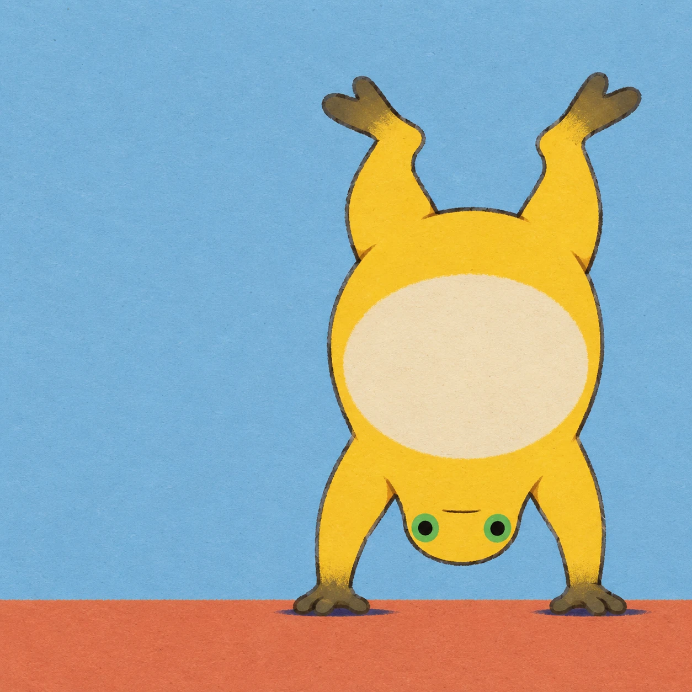
两只手替脚站在了地上，小脸倒着看过来。奶油色肚子升到眼睛上面，脚尖又把黄色轮廓向两边分开。换个方向，熟悉的身体也多了一点新鲜。
本作作者：奶蛙现代艺术馆项目 · AI辅助再创作
蓝色占去大半画面，红地只在下方留下一条窄带。两只深色手掌落在同一条线上，头和地面之间还有一点空隙。平常走路时不太显眼的手，这次成了整个身体的支点。
圆腹停在小脸上方，脚尖比眼睛离地更远。倒置的轮廓没有添上道具，只把原来的上下次序换了一遍；小脸依然安静，让这个费力的姿势显出一点轻松。
角色参考作品与发布页
定稿为V1。本作是AI辅助生成的数字图像。角色采用奶蛙（社区衍生样本）；角色和参考作品的权利归相关权利人。
NO. P106 · AI辅助二维图像 · 不透明水粉质感模拟 · 原创
这一封，够得到
This Letter Can Reach
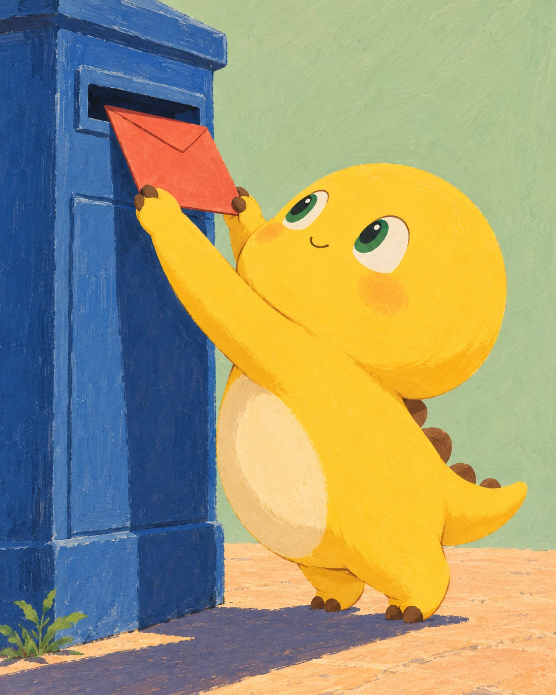
邮筒很高，红信封已经够到了投口。奶龙把两只手一起举起来，大脑袋也跟着仰起。蓝色直边旁边，这一点红把整个身体带向了上方。
本作作者：奶蛙现代艺术馆项目 · AI辅助再创作
邮筒占住左侧，顶端伸到画外。奶龙的圆头停在投口下面，两条手臂从短厚身体向左上方伸去。小小的信封把高处的开口和低处的脚连成一条斜线。
灰绿色空处让给抬起的头，地面上的蓝影又把身体留在原地。双手各托住一个下角，薄薄的红纸成了这次动作需要照顾的中心。
奶龙官方角色资料
定稿为V1。本作是AI辅助生成的数字图像。角色采用奶龙（官方IP形象的非官方二创）；角色和参考作品的权利归相关权利人。
NO. P107 · AI辅助二维图像 · 数字油画与线性符号 · 名画改编
眼睛长进了田里
Eyes Grow into the Field
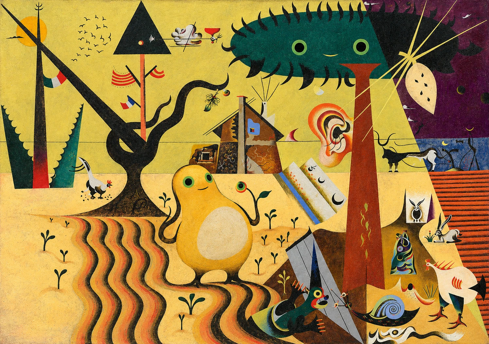
眼睛长进树冠，手臂弯成枝条，脚下的田垄继续向远处走。奶油色肚子旁边，种荚也露出相近的浅色。奶蛙来到这片田里，熟悉的样子开始分散到植物和土地之间。
本作作者：奶蛙现代艺术馆项目 · AI辅助再创作
米罗《The Tilled Field》的黑树、红树干和曲折田垄留在同一个土黄色平面上。中央身体的细臂顺着枝条弯曲，深色脚端接进田纹，像是从耕地里长出来的一个符号。
深青树冠的一对绿环眼与中央小脸遥相呼应，右边枝梢还留着另一枚眼形。黄身和浅色种荚让目光来回寻找；田里的动物仍各有自己的形状，身份在局部相遇，画面也保持着热闹的差别。
原作与馆藏资料
角色参考作品与发布页
定稿为V1。本作是AI辅助生成的数字图像。角色采用奶蛙（社区衍生样本）；角色和参考作品的权利归相关权利人。
NO. P108 · AI辅助图像 · 数字水粉与剪纸式平涂 · 原创
门先留一条缝
Leave the Door Ajar
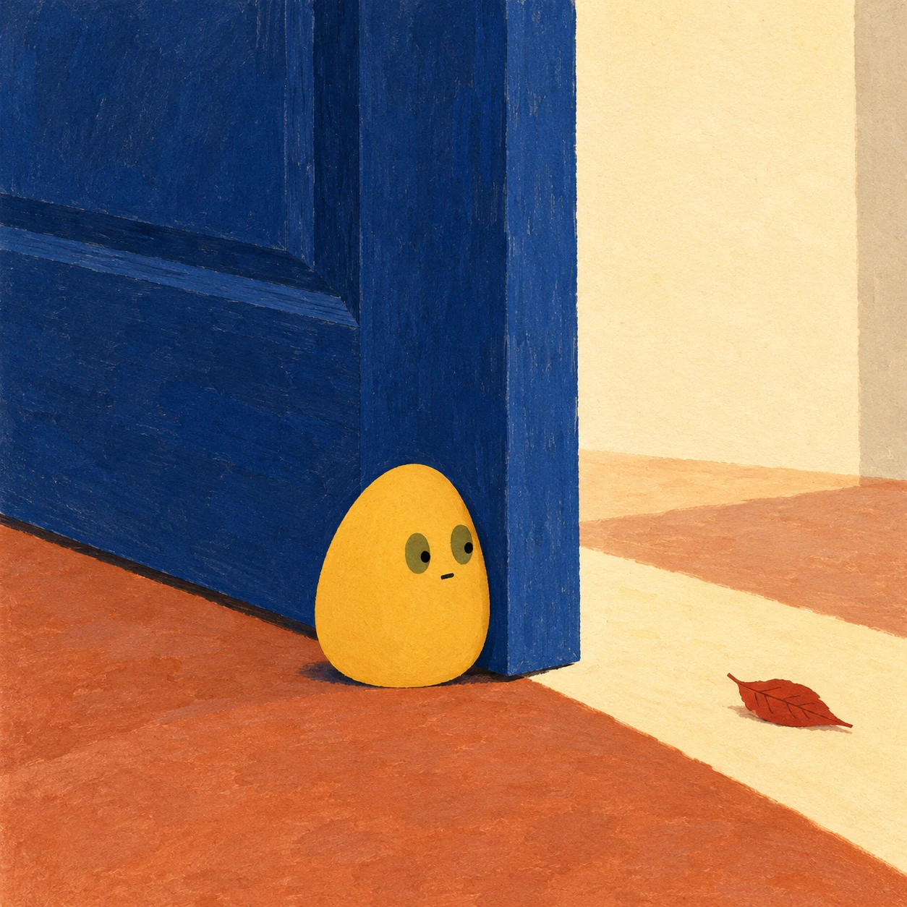
蓝门停在奶蛋身旁，长直边碰上柔软的黄色曲线。它没有手脚，只用身体占住一个小位置。门侧的光铺到红叶下面，叶子比它还轻，却把目光引向外面。门还开着，这一刻的工作只是留出一点余地。
本作作者：奶蛙现代艺术馆项目 · AI辅助再创作
蓝门占据左上大半画幅，竖直边和斜下缘把视线挤到靠地的黄色卵形上。奶蛋没有伸手的动作，接触却很明确：右侧曲面紧贴门边，底部短小的暗影把它压在地上。沉重的蓝色因此有了一个很小的停顿点。
门旁奶白色区域先竖着展开，再转为横过地面的光带。红叶落在这条明亮路径里，与奶蛋之间留出一段空地；两个小形体一个靠边、一个独立，让画面从抵靠的紧密转向外侧的松散。眼睛偏向叶片，于是抵门与观看同时发生，安静的表情也有了具体对象。
角色参考作品 · 发布账号：奶史_
定稿为V1。本作是AI辅助生成的数字图像。角色采用奶蛋（社区衍生样本）；角色和参考作品的权利归相关权利人。
NO. P109 · AI辅助图像 · 数字粉彩与单版画式底层 · 名画改编
把这一拍站稳
Hold This Beat
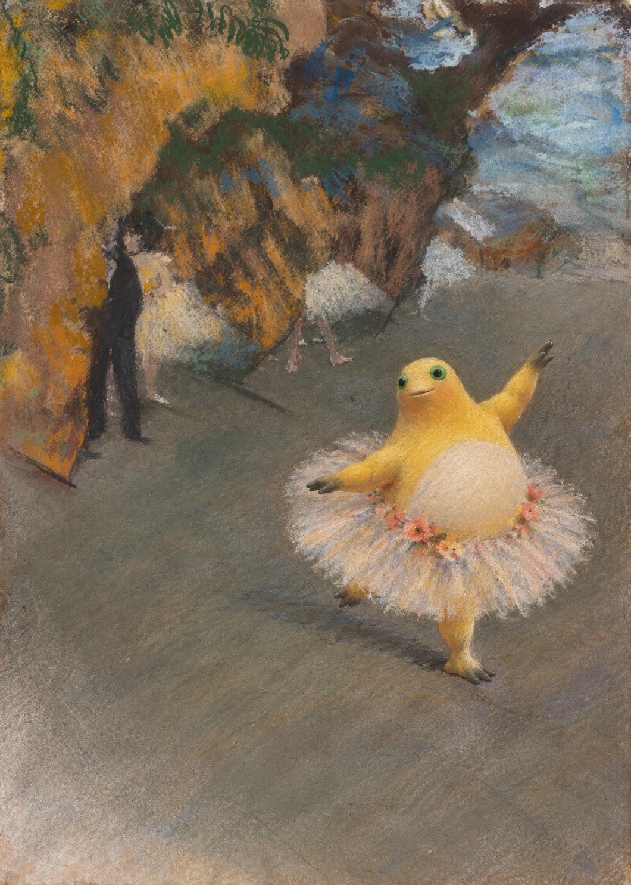
裙摆已经散开，短短的脚还要把身体稳住。德加《Ballet》的高视点与斜向侧幕留在这里，舞者却换了一副低重心的身体。它的一只手扬起，另一只平伸，光亮集中在腹部和纱裙；脚下灰绿的空场，把这一拍拉得很长。
本作作者：奶蛙现代艺术馆项目 · AI辅助再创作
画面的亮处并不在中央。奶蛙靠近右下方，扬起的手接向右上淡蓝布景，另一只手伸向左侧空场。侧幕后的人影沿对角线渐次退远，大片灰绿地面则一直铺到观众脚边。这个高视点没有把舞台收拢，反而让独舞身体与周围空处同时可见。
纱裙的浅色短线向外散开，奶油腹片却是一块较完整的圆面：轻薄与厚重紧挨着。落地的短足与小片暗影提供支点，另一只足从裙边露出；它没有复现原作细长腿部的延伸。芭蕾姿势因此经过身体尺度的改写，观看的重点从足尖拔高转向伸臂时如何保持重心。
Musée d’Orsay：Ballet，RF 12258，约1876–1877
角色参考作品
定稿为V1。本作是AI辅助生成的数字图像。角色采用奶蛙（社区衍生样本）；角色和参考作品的权利归相关权利人。
NO. P110 · AI辅助图像 · 数字水粉与模板印刷式绘画 · 原创
雪里多出一副翅膀
Wings Left in the Snow
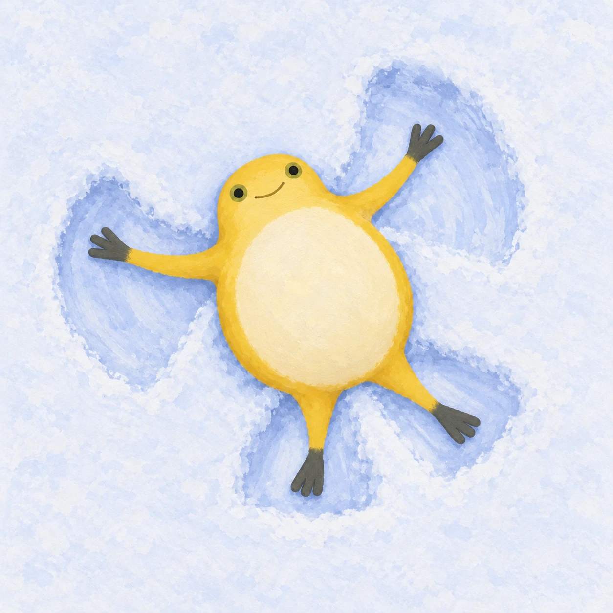
奶蛙躺在雪里，张开的手脚把白地扫出几块蓝色。身体仍是一整块暖黄，身旁却出现比它宽得多的轮廓。所谓翅膀没有长在肩上，而是留在手臂经过的地方；当动作停住，雪替它保存了展开的幅度。
本作作者：奶蛙现代艺术馆项目 · AI辅助再创作
从正上方看，奶油色腹片成为画面的中心，头和脚沿左上至右下的斜线排列。双臂横向伸开，打断身体的长轴；手指尽端附近的蓝色扇面又把这条横线向两侧扩展。于是占据画面的不只有黄色身体，还有它能够触及的一圈空间。
淡蓝色痕迹采用宽窄不一的弧边，内部的刷纹顺着弧度转动，与周围碎而松的白色肌理分开。两臂旁的扇面较大，脚边较窄，并没有拼成对称的羽翼。题名把这组扫痕读作翅膀，但画中依然只有四肢和被拨开的雪，没有额外器官。
角色参考作品 · 发布账号：文火_slowfire
定稿为V2。本作是AI辅助生成的数字图像。角色采用奶蛙（社区衍生样本）；角色和参考作品的权利归相关权利人。
NO. P111 · AI辅助图像 · 数字水粉与剪纸式绘画 · 原创
先让纸飞一会儿
Let the Paper Fly a Little Longer
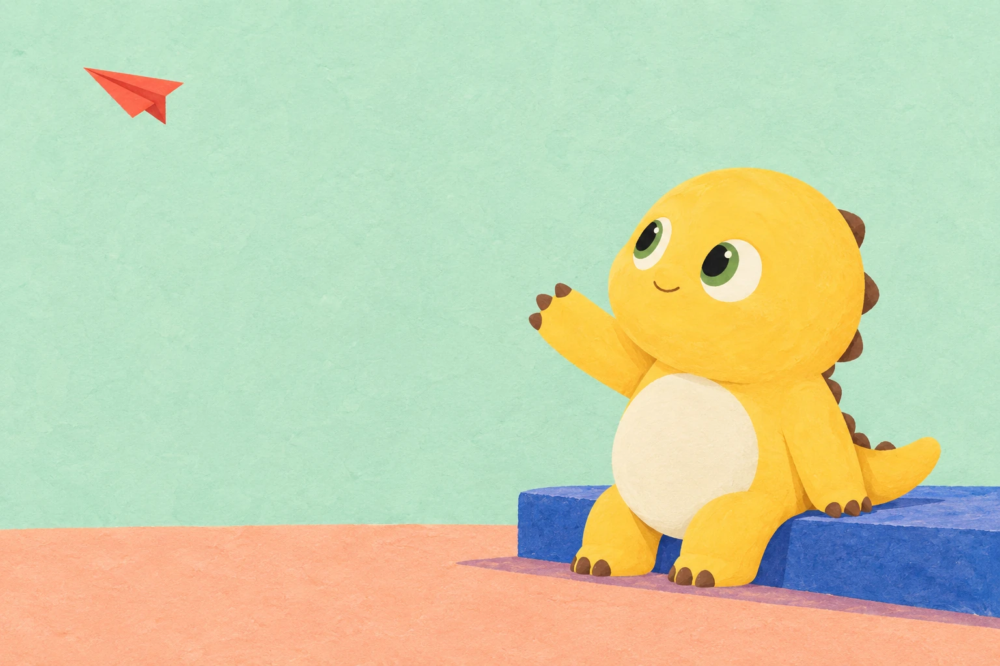
纸飞机已经离开手，奶龙还坐在原处。尖锐的红色折角停在左上，圆圆的身体压在右下，抬起的空掌没有追上它。中间这片浅绿色没有添上航线：刚刚做出的一个小动作，暂时把房间般宽的空白变成了距离。
本作作者：奶蛙现代艺术馆项目 · AI辅助再创作
蓝色台阶和桃色地面给身体一个明确的落点，双脚、撑在身旁的手与台阶边缘形成低处的支撑。另一只手向左上抬起，却没有和飞机接触。两种手势把画面分成停留与离开的方向，视线沿着绿眼、空掌和红色尖端向远处移动。
飞机的几道折面集中在很小的面积里，奶龙的头、腹和短尾则依靠圆弧展开。尖与圆、红与浅绿、左上与右下互相拉开，却没有借运动线补齐过程。这个画面可以读作放手后的片刻；飞行是否顺利、最后落在哪里，都没有在这一帧里交代。
第七印象官方网站 · 奶龙
定稿为V1。本作是AI辅助生成的数字图像。角色采用奶龙（官方IP形象的非官方二创）；角色和参考作品的权利归相关权利人。
NO. P112 · AI辅助图像 · 数字油画 · 名画改编
借你的肩看一会儿
Lend Me Your Shoulder for a Moment
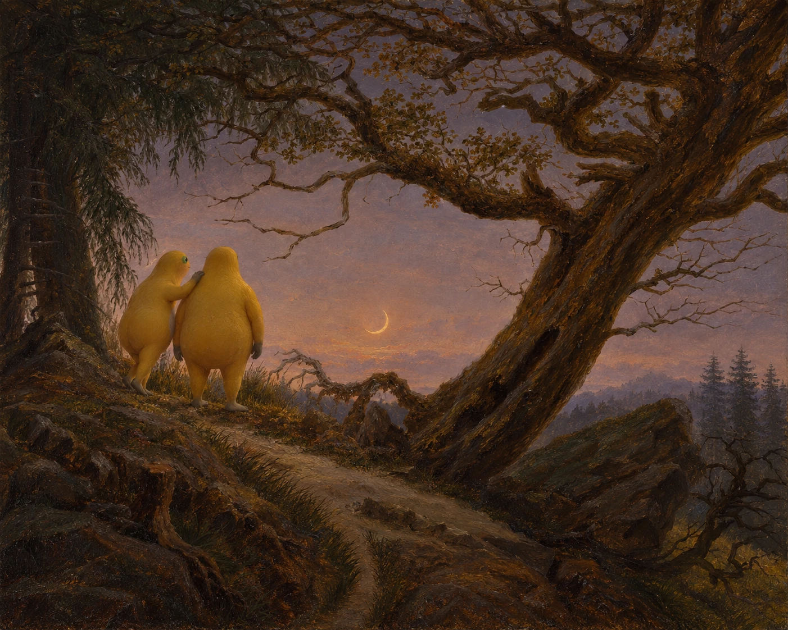
月亮很远，肩膀就在身边。矮一点的奶蛙踮起脚，借同伴的肩把目光往上送。粗大的斜树与满地碎石围住这两个圆背；远处那点亮，没有因此变近。
本作作者：奶蛙现代艺术馆项目 · AI辅助再创作
本作采用弗里德里希《两人观月》的大都会艺术博物馆版本。右侧斜树干把重量压向前景，横伸的枝条又把天空圈成一个开口。两只奶蛙被放在左侧较小的位置，顺着坡路、身体朝向与细小月牙，视线从脚下转到远方。
原作的披风轮廓在这里换成两团连续的黄色身体。靠左角色微微抬高脚跟，一只手搭上同伴肩侧；右侧角色双脚分开，背部近乎直立。扶肩既延续了原作两人间的接触，也被重新读成一次借力：观看远景这件静事，忽然需要另一具身体帮忙。
The Met：Two Men Contemplating the Moon，2000.51
角色参考作品
定稿为V1。本作是AI辅助生成的数字图像。角色采用奶蛙（社区衍生样本）；角色和参考作品的权利归相关权利人。
NO. P113 · AI辅助图像 · 数字水粉与彩铅 · 原创
一颗就够高了
One Cherry Higher
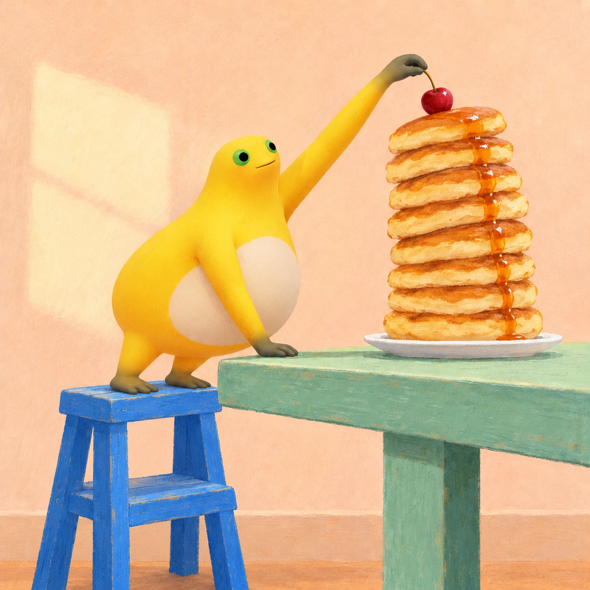
煎饼已经叠得很高，奶蛙还想在顶上放一颗樱桃。蓝凳垫起双脚，一只手撑住桌边，另一只手把果柄轻轻送过去。最后增加的这一点红，比整摞早餐更费力。
本作作者：奶蛙现代艺术馆项目 · AI辅助再创作
桌边是一条向右展开的绿色横线，饼叠在它上面竖起；奶蛙从蓝凳斜着伸向右上，把两种方向连接起来。身体没有完全靠上桌面，下方手掌先落在边缘，因而高举的手显得更谨慎。大面积桃色墙面让这条长长的伸手路线没有被杂物打断。
樱桃很小，却占据全画最高的动作端点。几层浅棕煎饼和下流的糖浆显得厚重，细果柄则只用一个弯钩连接手和红点。标题里的“够高”既可以指食物，也可以指终于够到它的身体；画面停在果实贴近顶面的瞬间，没有继续画出放手之后。
角色参考作品
定稿为V2。本作是AI辅助生成的数字图像。角色采用奶蛙（社区衍生样本）；角色和参考作品的权利归相关权利人。
NO. P114 · AI辅助图像 · 数字版画与水粉质感 · 原创
这一个音，先坐住
Let This Note Sit for a While
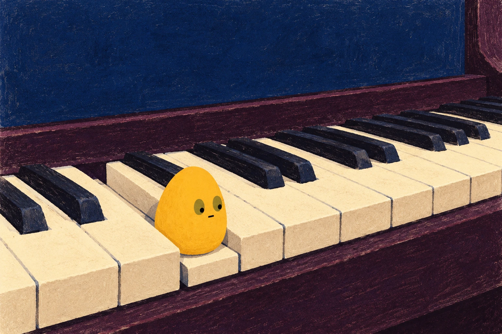
没有手指，奶蛋把自己放在一枚白键上。整排琴键里，只有这里矮下去一截。这个音究竟响了多久，画里听不见；那一点黄色却还坐着，暂时没有起身的意思。
本作作者：奶蛙现代艺术馆项目 · AI辅助再创作
黑白键沿斜线向右上重复，黄身体占据左侧一个较低的位置。它身下的白键前沿与邻键错开，露出短短的竖向差距。这个小台阶比夸张的运动线更直接：形状几乎没变的身体，已经让周围的一条直边发生变化。
奶蛋的圆顶、宽底与小横嘴没有增加演奏用的手脚，画面也没有画出音符。深蓝色上半部因此保留一种近乎静音的空场，而下半部的白键像密集展开的刻度。观众可以把下沉读成发声的起点，也可以只把它看作一次安静的占位。
角色参考作品
定稿为V1。本作是AI辅助生成的数字图像。角色采用奶蛋（社区衍生样本）；角色和参考作品的权利归相关权利人。
NO. P115 · AI辅助图像 · 油彩粉笔与水粉质感 · 名画改编
水边各坐一会儿
Each Sits by the Water
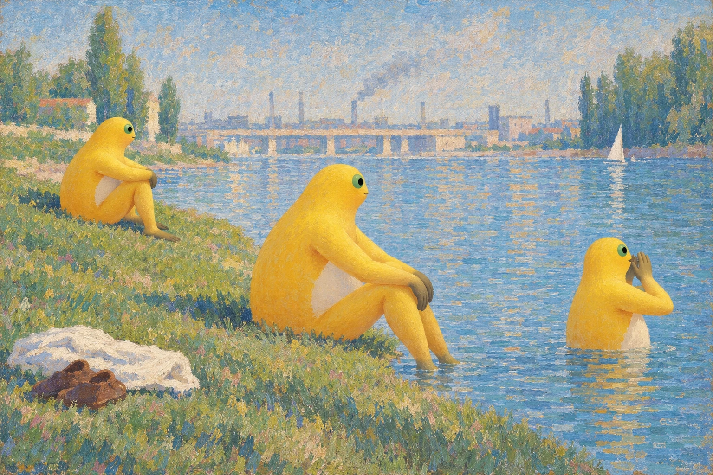
一只抱着膝盖，一只把脚放进河里，另一只向水面拢起双手。三只奶蛙同处一段河岸，却各自停在不同的姿势里。远处的桥横着穿过画面，近处没有谁急着渡河。
本作作者：奶蛙现代艺术馆项目 · AI辅助再创作
中央奶蛙的膝盖与小腿重复河岸向右下倾斜的方向，左上方的抱膝身影则缩成一枚黄团。它们之间留出的草地，让彼此靠近却不相接。毛巾与鞋被压在左下角，替没有细节的身体留下刚刚停歇的痕迹；宽阔腹部也把原作挺直的人体轮廓改成更缓慢的坡度。
蓝色水面由短碎笔横向铺开，黄色和灰绿色的颗粒让岸与水互相渗透。远桥保持平直，近景三个动作却没有形成共同任务：抱膝、垂脚、拢手朝向同一片水，仍各有距离。本作借用修拉1884年《阿尼埃尔浴场》的斜岸与侧身静止结构，将人物数量减为三只奶蛙；碎笔是本次转译，并非断言原作全幅采用成熟点彩法。
National Gallery · Georges Seurat, Bathers at Asnières, 1884
角色参考作品与发布页
定稿为V1。本作是AI辅助生成的数字图像。角色采用奶蛙（社区衍生样本）；角色和参考作品的权利归相关权利人。
NO. P116 · AI辅助图像 · 孔版印刷与剪纸质感 · 原创
把白线拖成弯的
Pulling the White Line into a Curve
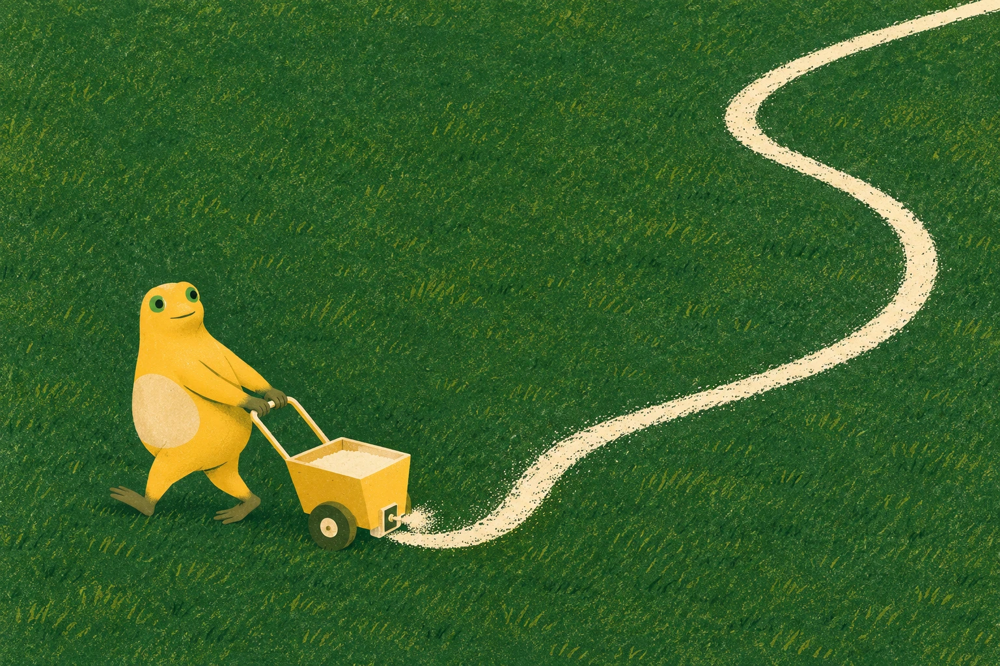
奶蛙倒着走，小车跟在身前，白粉从后面落下来。草地那么大，它只画了一条线，却没有把线拉直。回头看时，来路已经弯了两次。
本作作者：奶蛙现代艺术馆项目 · AI辅助再创作
整幅绿地没有边界、球门或号码，白线因而不必服从一套现成规则。它从右上角进来，两次转向后抵达左下的小车，视线也被拉到握把的双手上。奶蛙的身体向后仰，两只脚错开落地，动作与曲线相连，但画面没有给出转弯的具体原因。
黄车斗和奶蛙身上的黄色彼此呼应，车里的白粉、腹片与地上的线则组成另一组浅色。绿色粗颗粒让空地既是球场，也像尚未写满的一张纸。小车在大面积留白中显得慢，只有出口旁短短一团粉末提醒我们：白线还没有画完。
角色参考作品与发布页
定稿为V1。本作是AI辅助生成的数字图像。角色采用奶蛙（社区衍生样本）；角色和参考作品的权利归相关权利人。
NO. P117 · AI辅助图像 · 木刻套色与水粉质感 · 原创
这一滚，面团更长了
One Roll, a Longer Sheet of Dough
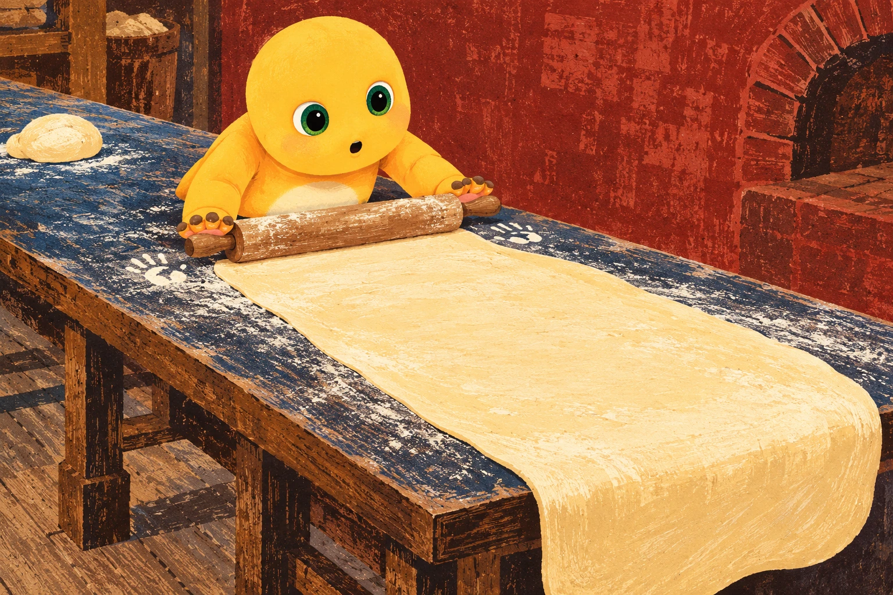
奶龙把双爪放到擀面杖两端，低头盯着眼前这一小段。面片却已经铺得很远，一直垂到桌沿下面。它忙的是手边，画面伸出去的是整张桌子的长度。
本作作者：奶蛙现代艺术馆项目 · AI辅助再创作
短臂和宽大的面片之间形成一种尺寸上的反差。奶龙的大头位于画面上方，擀面杖横着挡在身前，面片则向右下扩大，直到越过桌沿。观众先看到黄身体，再被浅色长面片带向近处；头的圆、木杖的直与面片末端的软垂，分别给同一次劳作留下三种触感。
暗蓝桌面上的白粉印痕，与暗红墙和砖炉形成干燥粗粝的背景。奶龙两爪压住杖端，眼睛落在工作区，表情没有被放大成夸张笑脸。这里借用官方角色的大头、短肢与白腹片，将温柔的笨拙放在一次具体的按压里；长面片是构图的夸张，图像并不说明它经历了多少次擀压。
第七印象官网 · 奶龙角色与品牌故事
定稿为V1。本作是AI辅助生成的数字图像。角色采用奶龙（官方IP形象的非官方二创）；角色和参考作品的权利归相关权利人。
NO. P118 · AI辅助图像 · 软粉彩与炭笔质感 · 名画改编
读到这一页
At This Page
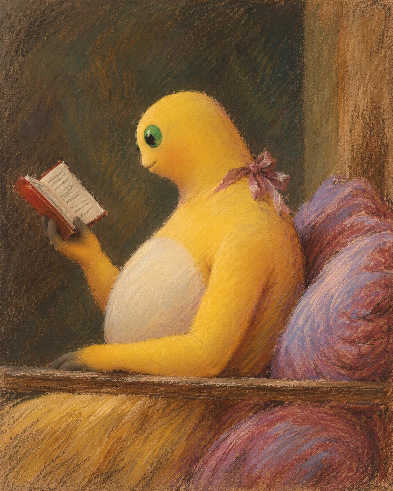
红皮小书停在奶蛙的视线下方。它把一条手臂交给椅栏，背后紫色软垫撑起斜坡，只有托书的手仍举着。书页比腹部小得多，却让整个身体转向了左边。
本作作者：奶蛙现代艺术馆项目 · AI辅助再创作
小书被放在画面的左缘，奶蛙的头与胸腹则向它逐层靠近。前臂沿低横栏铺开，形成一段近乎水平的停顿；背后粉紫软垫向上鼓起，抵住黄色身体。书、眼睛与手之间的短距离，把阅读收束为一个局部动作，而宽腹与高垫占据了大半画面。
炭色背景托住黄色轮廓，粉彩的斜短线贯穿身体、书页与软垫。乳白腹片替代原作衣饰的亮区，颈后小结留下少量服饰线索。本作取自弗拉戈纳尔《读书的少女》的侧身读者、小书、软垫与低栏关系，将油画笔触转译成可见纸粒的粉彩擦痕；这是一种新的媒介选择，不是对原作技法的复原。
National Gallery of Art · Young Girl Reading, c.1769
角色参考作品与发布页
定稿为V1。本作是AI辅助生成的数字图像。角色采用奶蛙（社区衍生样本）；角色和参考作品的权利归相关权利人。
NO. P119 · AI辅助图像 · 墨线淡彩与水彩回渗质感 · 原创
先把这个洞按住
Hold This Hole for Now
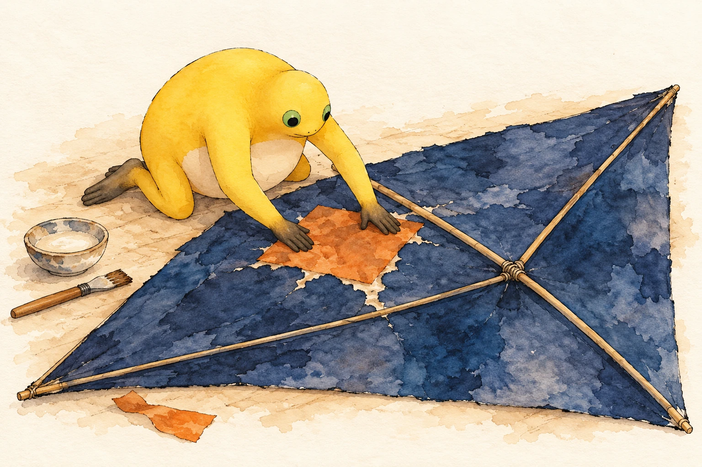
奶蛙把两只手分开，压在橙色补片的两边。靛蓝风筝摊在地上，几根竹骨比它的手臂伸得更远。破口还有一点白色露出来，浆糊碗和刷子暂时留在旁边。
本作作者：奶蛙现代艺术馆项目 · AI辅助再创作
风筝的四角把视线拉向画面边缘，奶蛙却俯身守着偏左的一小块橙色。双掌压住补片，相向伸出的前臂在身体下方留下空隙；屈腿与低头让它的重心贴近地面。竹骨的交点落在右侧，没有与手的动作重叠，修补因此显得局部而具体。
靛蓝水彩的深浅水痕占了大半张纸，橙片是其中唯一一块暖色纸面。墨线勾出竹条的硬度，黄色身体却只有少量浅阴影。作品没有把风筝送上天空，而把注意力留给不能立即掩平的裂口：补片边缘仍见露白，两手只是把这一处暂时按稳。
角色参考作品与发布页
定稿为V1。本作是AI辅助生成的数字图像。角色采用奶蛙（社区衍生样本）；角色和参考作品的权利归相关权利人。
NO. P120 · AI辅助图像 · 彩色石版画与蜡笔颗粒质感 · 原创
滚过的地方有点红
A Little Red Where I Rolled
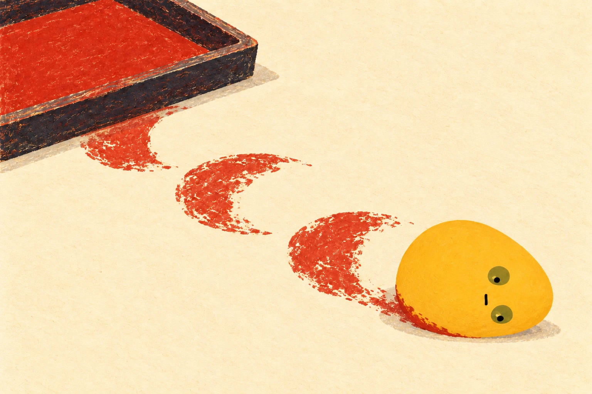
奶蛋横了过来，眼睛和小嘴也跟着转了方向。身下沾着一点红，身后三枚破碎的弧形印子一路排向浅盘。纸面空着很大一片，像还没有决定下一次往哪边滚。
本作作者：奶蛙现代艺术馆项目 · AI辅助再创作
左上角的矩形浅盘被边框截去一部分，右下角的奶蛋却完整地留在纸面内。三枚红印从盘边逐渐弯向身体，断续的粗边比精确的轨道更醒目。奶蛋没有手脚，画面把动作交给接触地面的那一圈红色；旋转后的眼睛和嘴，进一步让侧躺与平日直立的形象拉开距离。
红色从深边盘中延伸到纸上，黄色身体则停在印迹末端。细碎纸粒穿透两种大色块，使红弧看起来像擦印留下的缺口。作品只显示一只身体和它周围的痕迹，没有用连续分身说明每一步；因此这条弯曲的序列可以指向滚动，却不把一种想象中的运动写成精确示意图。
角色参考作品与发布页
定稿为V2。本作是AI辅助生成的数字图像。角色采用奶蛋（社区衍生样本）；角色和参考作品的权利归相关权利人。
NO. P121 · AI辅助图像 · 二维油画质感 · 名画改编
手指碰到星空
A Fingertip Against the Heavens
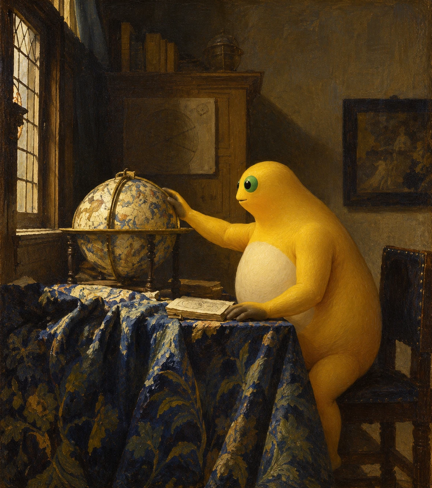
天球被一圈细木架托住，奶蛙的手停在它的右上缘。窗光照亮腹片，也照亮桌边的一小页纸。高大的柜子与层叠的蓝布把身体围住，球体成为这间暗室里可以触到的一片远方。
本作作者：奶蛙现代艺术馆项目 · AI辅助再创作
伸出的手臂把右侧身体与左侧天球连成一道缓斜线。靠近观者的另一只手落在桌缘，展开的书页就在指端旁：一个动作朝上，一个支点朝下。奶油色腹片与天球的淡金表面隔着深蓝桌布相互呼应，窗口则把光限定在房间左侧。
本作保留维米尔《天文学家》的窗口、天球、侧坐者及前景桌布关系，用奶蛙连续的黄色身体替换原作深色袍服。大腹部让侧身前探变得更费力，也使伸向天球的手更像一次近距离触摸。画面只呈现手与器物的接触，不足以说明天球真的正在旋转；“星空”是题名对球面模型的借称。
Musée du Louvre · L’Astronome, 1668
角色参考作品与发布页
定稿为V1。本作是AI辅助生成的数字图像。角色采用奶蛙（社区衍生样本）；角色和参考作品的权利归相关权利人。
NO. P122 · AI辅助图像 · 水粉与彩铅质感 · 原创
先系紧这一只
Tighten This One First
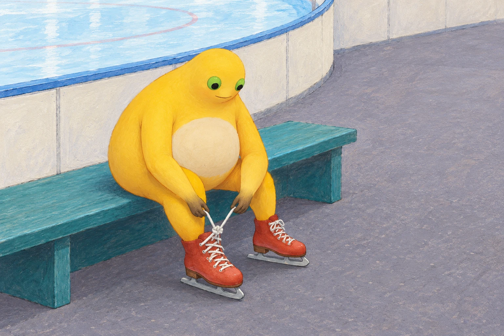
冰面已经在背后铺开，奶蛙还坐在长凳上。两条手臂绕过腹部，把白鞋带向两边拉开。两只红鞋靠得很近，滑行尚未开始，画面先停在这一小段需要低头完成的准备里。
本作作者：奶蛙现代艺术馆项目 · AI辅助再创作
青色长凳从左缘横穿身体，背后围栏则沿相反方向弯去。奶蛙的两臂从宽肩降到鞋面，白鞋带在深色指端之间拉出一个窄三角。圆腹把手与鞋隔开，却也令低头动作变得更明确：视线、手端与近处冰鞋聚在画面左下，大片灰紫空地留给尚未发生的移动。
两只鞋的红色与身体黄色相邻，银灰刀片把柔软角色与坚硬地面接起来。水粉色面保留刷痕，细白线则承担最具体的动作。图像并不说明蝴蝶结已完成；它只画出拉开两端的一个瞬间。围栏与蓝冰把活动场所交代在背景，角色仍停在围栏这一侧的地垫上。
角色参考作品与发布页
定稿为V1。本作是AI辅助生成的数字图像。角色采用奶蛙（社区衍生样本）；角色和参考作品的权利归相关权利人。
NO. P123 · AI辅助图像 · 套色木刻质感 · 原创
还差一个指尖
One Fingertip Away
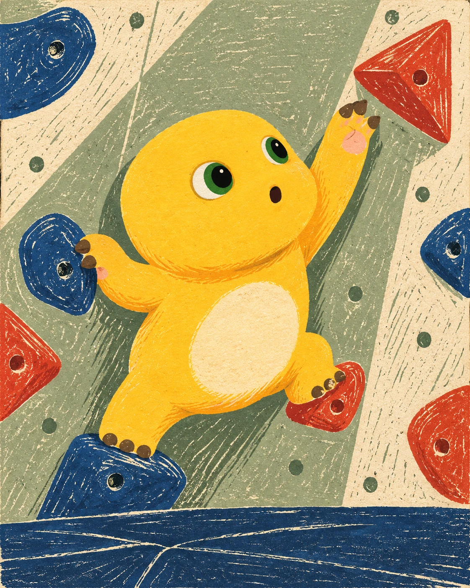
三处岩点先接住身体，第四处仍在指尖之外。奶龙抬起下巴，眼睛与举起的爪子一起朝向红色三角。下方蓝垫横着铺开，上方空隙却把整个身体拉成一条斜线。
本作作者：奶蛙现代艺术馆项目 · AI辅助再创作
左侧蓝岩点、左下蓝岩点与右下红岩点组成一个支撑三角。奶龙的头、腹部和上举手臂沿右上的方向连起来，最后停在爪尖与红色岩点之间的一小段墙面。图像的动作中心不在最高处的岩点本身，而在尚未闭合的接触距离。
黄身体、蓝支点与红目标被分成大块套色，短白刻线顺着脸颊、手臂和墙面改变方向。官方奶龙的大头、白眼绿瞳及褐色爪尖保留辨认线索，三维角色被压进近乎平面的色块关系。本作只呈现一次够向下一处的尝试；画面没有给出已经抓牢、向上移动或完成攀爬的证据。
第七印象官网 · 奶龙
定稿为V1。本作是AI辅助生成的数字图像。角色采用奶龙（官方IP形象的非官方二创）；角色和参考作品的权利归相关权利人。
NO. P124 · AI辅助图像 · 数字油画质感 · 名画改编
这一口气有点长
A Breath Held a Little Longer
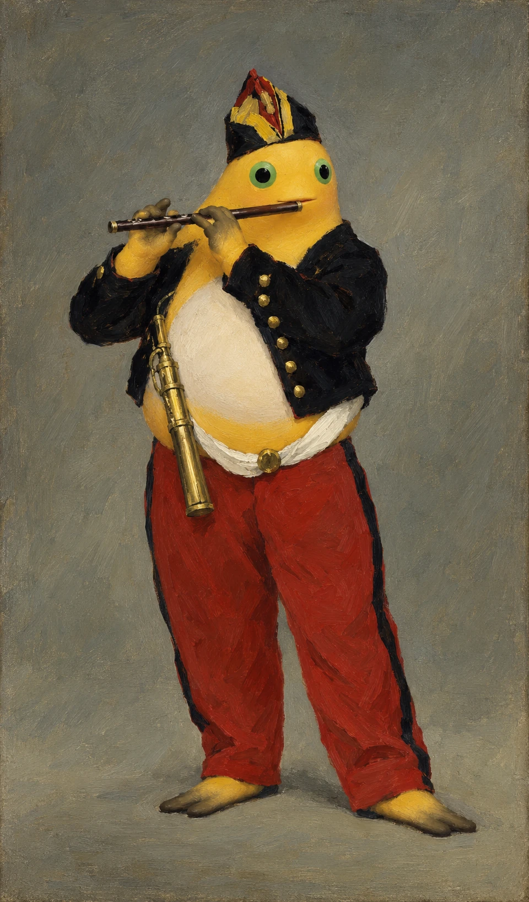
笛子横在嘴前，把两只抬起的手连成一条细线。黑衣停在鼓起的乳白腹旁，红裤一直落到分开的双脚；宽阔的灰底没有添上舞台，只让这位独奏者留在眼前。
本作作者：奶蛙现代艺术馆项目 · AI辅助再创作
马奈《吹笛少年》的灰底、黑上衣、红裤和腰侧长笛盒，构成本次改编的骨架。新角色撑开了外衣，使原作细长的躯干变成一个黄与乳白的宽面；笛子仍然很细，两手仍需在同一条横线上配合。身材变化没有抹去吹奏的具体接触，反而让短小乐器与身体的尺度差更明显。
画面的重色沿黑袖向内集中，再由一排金色纽扣向红裤移动。黄脸上的绿眼与下方露出的腹部把暗色衣物分开，地面仅以脚下薄影提示。正面的站立因双脚略向两侧展开而稳定，横笛则在头部下方截出一道短促的方向；视线在这条细横线和长裤的竖势之间来回。
Musée d’Orsay · Le Fifre
角色参考作品与发布页
定稿为V1。本作是AI辅助生成的数字图像。角色采用奶蛙（社区衍生样本）；角色和参考作品的权利归相关权利人。
NO. P125 · AI辅助图像 · 数字水粉与铅笔质感 · 原创
篮子先侧过来
Turn the Basket Sideways First
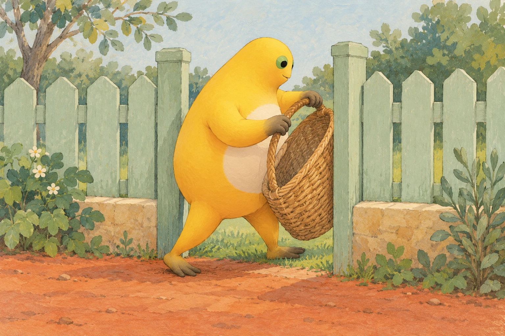
两根绿柱之间，篮子先换了个方向。奶蛙低头握住提手，让椭圆篮口从横放转到接近竖直；腹部跟在后面，双脚把这一小步分在门前和门后。
本作作者：奶蛙现代艺术馆项目 · AI辅助再创作
栅栏板条排成一列竖线，门洞却没有被填满。篮筐斜斜插进这段空白，把重复的竖线改成一组倾斜的编织纹；奶蛙的两只手分开握住弓形提手，手、篮缘和门柱之间的间隔成为动作最具体的部分。右柱遮住篮子的后侧，让前进方向从遮挡关系中显出来。
奶蛙的黄色侧身在浅绿背景上连成完整曲线，乳白腹贴近篮口，后腿沿陶红地面伸展开。花叶的碎笔触集中在两端，人物周围较大的色面因此留出呼吸。这里的趣味来自熟悉的搬运经验：先调整手里的器物，再让宽身体跟上；它没有被处理成受困或失败的场景。
角色参考作品与发布页
定稿为V1。本作是AI辅助生成的数字图像。角色采用奶蛙（社区衍生样本）；角色和参考作品的权利归相关权利人。
NO. P126 · AI辅助图像 · 数字彩铅与粉彩质感 · 原创
隔着这一点沙
A Little Sand Between Us
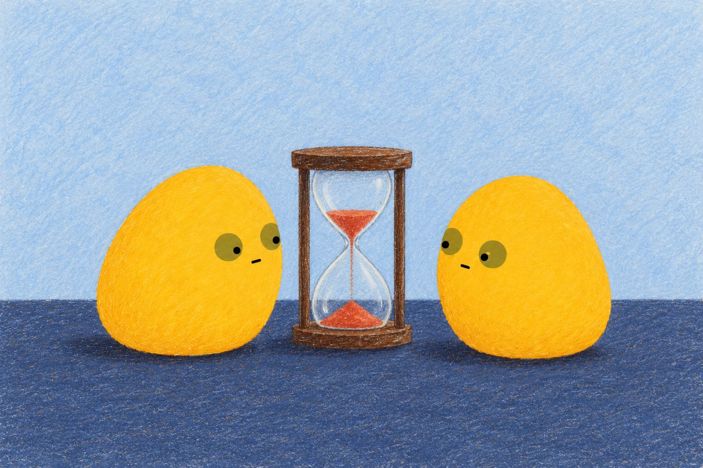
两只奶蛋在沙漏两旁留着一点空隙，眼睛朝向同一个细窄处。玻璃几乎让蓝底穿了过去，红沙却在中间划出一道线；它们都没有伸手，只把彼此放在这道线的另一边。
本作作者：奶蛙现代艺术馆项目 · AI辅助再创作
两块黄色身体分列左右，木框的上下横边把中间空隙围成小小的竖幅。奶蛋的眼睛朝内，玻璃腰部又在相近高度收拢，观看因此集中到红褐沙线经过的位置。左边靠得略近，右边留白稍宽，近似对称的安排仍保留两个独立位置。
深蓝桌面压低了画面重心，浅蓝背景从玻璃里透出，使沙漏既是隔开的物体，也是不完全遮挡的窗口。彩铅纹理让黄身体没有亮硬的外壳，木框和玻璃则靠深边与白色擦痕区分。没有手脚的形体在此不靠推动或抵住物件构成动作，转向对方的眼睛和中间持续线状的沙成为关系的主要证据。
角色参考作品与发布页
定稿为V1。本作是AI辅助生成的数字图像。角色采用奶蛋（社区衍生样本）；角色和参考作品的权利归相关权利人。
NO. P127 · AI辅助二维图像 · 数字油画与干擦质感 · 名画改编
目光把村庄连起来
A Village Between Two Gazes
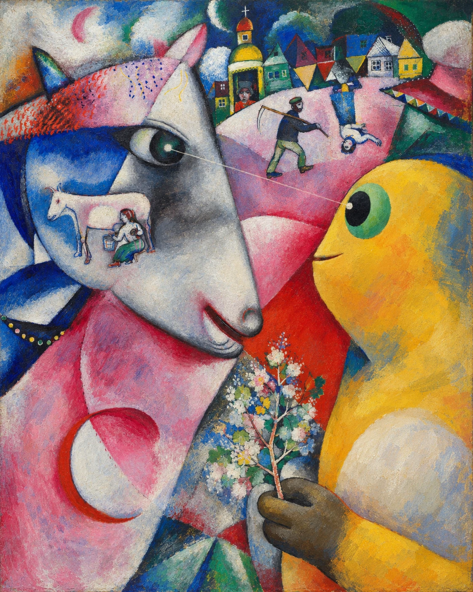
两张脸几乎占满画面，村庄却仍能挤进它们之间。一根很细的白线从动物的眼睛连到奶蛙的绿眼，花枝从手中向上生长；房屋和人倒过来，目光依然找到对面。
本作作者：奶蛙现代艺术馆项目 · AI辅助再创作
本作保留夏加尔《我与村庄》中相向侧面、眼间细线、掌上植物与倒置乡村的关系。右边人物被改成奶蛙，长鼻退成圆钝轮廓，黄色把原来的绿色面部换成更大的暖色区域；左侧动物面颊仍容纳一幅小小的挤奶图景。被看见的动物也带着一段生活，目光因而穿过几个不相等的尺度。
两脸之间的红色尖角与上方粉色圆弧不断交叠，深蓝色块把灰白兽脸和黄色身体分开。细线没有绳结，不把双方拴在一起，它只是让观看方向变得可见。下方深色手握住细枝，稠密花点向村庄延伸；这里的亲近来自色面、嵌套和方向的安排，不意味着改编角色拥有原作者的乡愁经验。
MoMA · I and the Village
角色参考作品与发布页
定稿为V1。本作是AI辅助生成的数字图像。角色采用奶蛙（社区衍生样本）；角色和参考作品的权利归相关权利人。
NO. P128 · AI辅助二维图像 · 钢笔与透明水彩质感 · 原创
气从这里跑出来
Where the Air Escapes
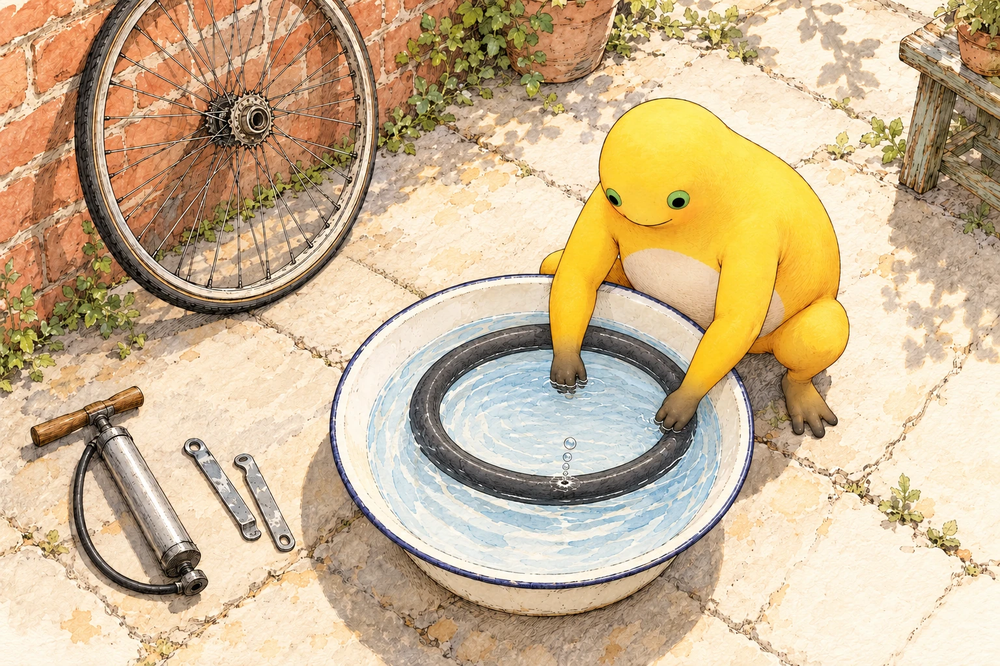
车轮靠在墙边，圈里的空气暂时交给水来寻找。奶蛙压着内胎，一只手伸进水里；几颗小泡在黑色圆弧前显出来，把看不见的漏点变成可以等候的线索。
本作作者：奶蛙现代艺术馆项目 · AI辅助再创作
画面由两个不同方向的圆组织：靠墙的车轮接近竖直，盆里的内胎被俯视压成椭圆。细密辐条指向轴心，水盆蓝边却把视线引向里面几颗更小的圆。奶蛙弯下来的长臂连接了这两种尺度，让修理的注意力从整个车轮缩到一个局部。
左手伸进圈内的水，右手落在黑色胎边；落地的打气筒和撬胎棒给查漏提供日常背景。钢笔细线保住坚硬器件，浅蓝水纹与淡赭黄身体则留着纸面空白。气泡位置经过图形化处理，不作修车技术图；本作关心的是一个故障如何先以很小的迹象被发现，而非宣称维修已经完成。
角色参考作品与发布页
定稿为V2。本作是AI辅助生成的数字图像。角色采用奶蛙（社区衍生样本）；角色和参考作品的权利归相关权利人。
NO. P129 · AI辅助二维图像 · 限色油蜡笔与刮线质感 · 原创
影子走进了山里
The Shadow Enters the Mountains
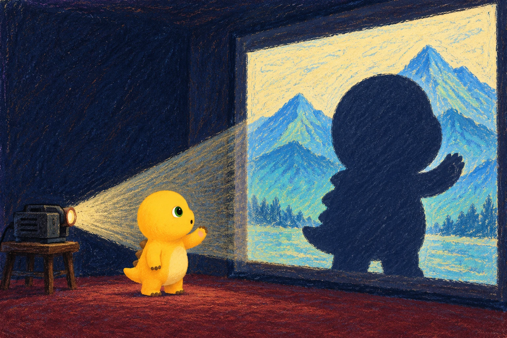
奶龙仍站在红色地板上，影子已经占住了山景。投影机把一束光送向幕布，小小的身体挡在中间，抬起的短爪便在远处变成一个很大的招呼。
本作作者：奶蛙现代艺术馆项目 · AI辅助再创作
投影机、奶龙与幕布从左到右排开，黄色光锥把三者连在同一方向上。实体只占画面下方一小块，巨大的深蓝轮廓却盖住了树林和山坡；大小差异不是角色突然长大，而是身体介入放映之后留下的空缺。幕布上的山因此同时提供远方和一块近处的平面。
蜡笔的粗颗粒让光与暗都保留纸面，山景没有变成真实户外空间。影子没有眼睛和腹斑，只以圆头、短爪与尾部轮廓回应小奶龙；绿色眼睛仍留在实体上，辨认与放大分属两处。这里的光路为图形化组织，不是光学测量；看似走入风景的，是没有离开室内的身体所投出的形状。
第七印象官方网站 · 奶龙
定稿为V1。本作是AI辅助生成的数字图像。角色采用奶龙（官方IP形象的非官方二创）；角色和参考作品的权利归相关权利人。
NO. P130 · AI辅助二维图像 · 薄涂油画与画布纹理模拟 · 名画改编
黄色也安静下来
Even Yellow Falls Quiet
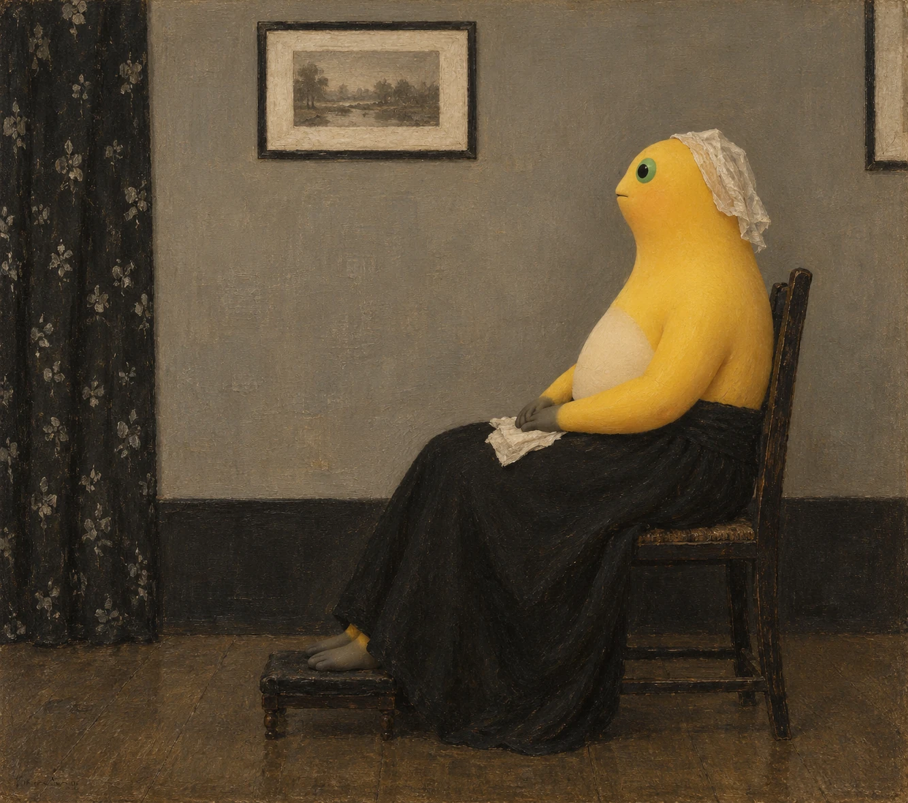
黑色裙布垂到地板，黄色却停留在身体上半部。奶蛙侧坐在椅中，手放在膝上的浅色布巾处，短足踏着低凳。左边的垂帘与上方的小画框，让空墙也有了自己的重量。
本作作者：奶蛙现代艺术馆项目 · AI辅助再创作
本件依据惠斯勒1871年的《灰与黑的排列一号》改编，保留侧坐者、深色垂帘、灰墙、画框和低脚凳的组织关系。原作中的黑衣与大片中性色，在这里包住一块明显的黄色：角色既打断沉静配色，又因手足收拢、目光平直而加入它。腹片没有被衣服完全藏住，让人物身份仍由身体而不只由脸来辨认。
椅背、画框和墙裙的直边，与头背的连续弧线相对；黑布把膝部到地面连成一个缓慢下沉的大形。画布颗粒和薄薄的灰褐刷痕统一了帘、身体与家具，没有把角色处理成摆在画前的亮面玩具。叠手和静坐提供的是可见姿态，我们并不据此给它指定亲属身份、年龄或具体心理。
Musée d’Orsay · Arrangement en gris et noir n°1, 1871, RF 699
角色参考作品
定稿为V1。本作是AI辅助生成的数字图像。角色采用奶蛙（社区衍生样本）；角色和参考作品的权利归相关权利人。
NO. P131 · AI辅助二维图像 · 水粉与干色铅笔纸纹模拟 · 原创
先把这一片握住
Hold This Flat Stone First
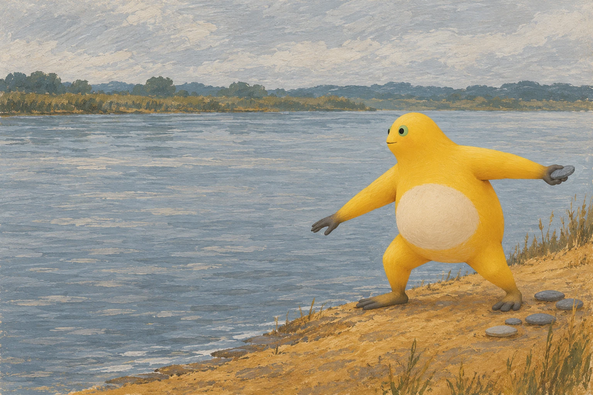
扁石还在手里，水面暂时没有回应。奶蛙把一臂留在身后，另一臂伸向前方，两脚在窄窄河岸上分开。画面大半交给灰蓝的水，动作被留在出手之前。
本作作者：奶蛙现代艺术馆项目 · AI辅助再创作
后摆的手与前伸的手将身体展开成一条斜线，双脚却稳稳压在岸边。石头没有飞出去，河上也没有一串说明结果的水花；远岸细长的深色带把水面横向铺开。动作的目的由视线与持石手暗示，真正发生的只是一段准备。
黄色身体和赭色土岸彼此接近，而奶油腹片、深灰手足将姿势分成几个容易读出的部位。纸面颗粒和短促的干刷把水、云与身体放在同一层绘画表面里。空着的河面让这一下显得慎重：我们可以期待石头的下一步，却无法从这一帧知道它会弹几次。
角色参考作品
定稿为V1。本作是AI辅助生成的数字图像。角色采用奶蛙（社区衍生样本）；角色和参考作品的权利归相关权利人。
NO. P132 · AI辅助二维图像 · 撕纸拼贴质感模拟 · 原创
从山的空处经过
Through the Space Between Mountains
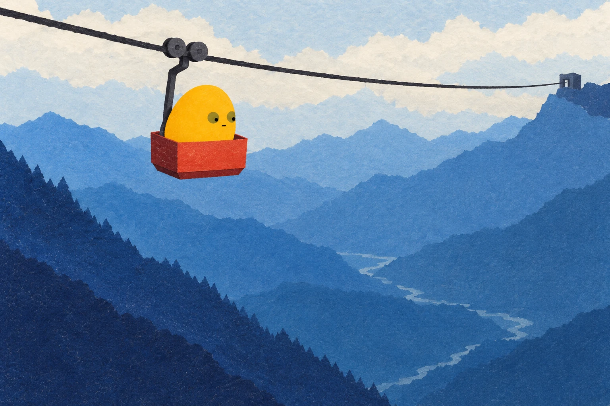
车厢很小，下面的空处很大。奶蛋露出黄色上半身，坐在红色车厢里望向远处；黑索跨过蓝色山谷，终点缩成山脊上的一小块。无需伸出手脚，身体也能被带到另一个位置。
本作作者：奶蛙现代艺术馆项目 · AI辅助再创作
红车和黄身体落在画面左上，前景山坡却以深蓝从下方升起。两者没有接触，之间保留的空隙让悬挂关系清楚可见。黑索、吊架和双轮把小车与远站连成一条可读的路线，细白河道则在另一种尺度上弯向谷底。
层层蓝色纸面把远近组织成薄片，黄色身体也保持在同样的平面肌理中。车厢挡住下部轮廓，但上端弧线、橄榄绿眼圈与小嘴足够辨认奶蛋。这里没有让它用身体推动或堵住什么，变化来自身体所在的位置：一个无肢形体暂时住在半空，而广阔山谷替这次跨越提供了尺度。
角色参考作品
定稿为V1。本作是AI辅助生成的数字图像。角色采用奶蛋（社区衍生样本）；角色和参考作品的权利归相关权利人。
NO. P133 · AI辅助二维图像 · 薄层油彩式绘画 · 名画改编
眼睛先落到地上
The Eye Has Reached the Ground
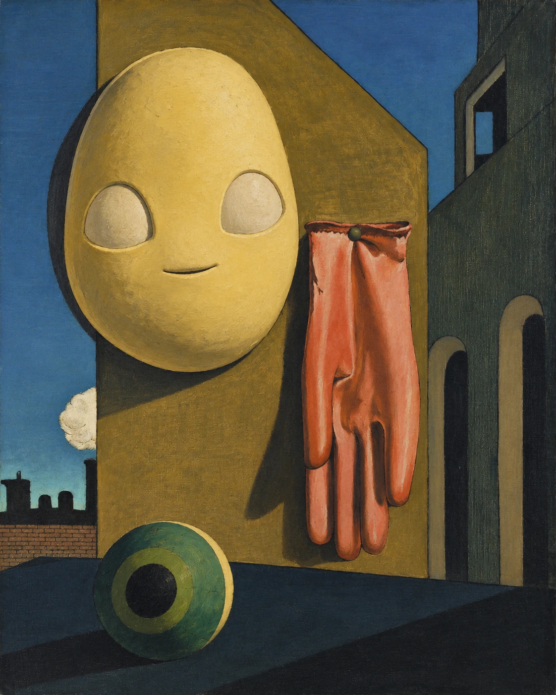
面模仍有小小的笑嘴，眼睛的位置却留成两片浅色。绿环与黑心出现在地面，和挂起的红手套分处三个位置。身体并没有在这里重组，辨认它的线索先成为独立物件。
本作作者：奶蛙现代艺术馆项目 · AI辅助再创作
德·基里科《The Song of Love》的墙挂头像、空手套与前景绿球，在这里被改写为面模、手套与眼形物。原作的拱廊、斜墙、火车和长影仍组织着近远空间，而黄色面模不再模拟古典人像。它保留奶蛙的柔和轮廓和小嘴，却把惯常最醒目的绿色从面部撤走，让观者在三个相隔的物件之间寻找联系。
地上的绿环黑心并不是从活体取下的眼睛，而是一件厚盘状的符号物。它与双眼留白的陶面模相互提示，制造“眼色转移”的观看关系。这个解释属于本次改编，不代表历史原作者的意图；画面也不声称展示标准角色、真实陶器或某个确切发生的掉落动作。
MoMA · The Song of Love
角色参考作品
定稿为V1。本作是AI辅助生成的数字图像。角色采用奶蛙（社区衍生样本）；角色和参考作品的权利归相关权利人。
NO. P134 · AI辅助二维图像 · 木刻式平面插画 · 原创
钟还没响，脚先轻了
The Feet Rise Before the Bell Rings
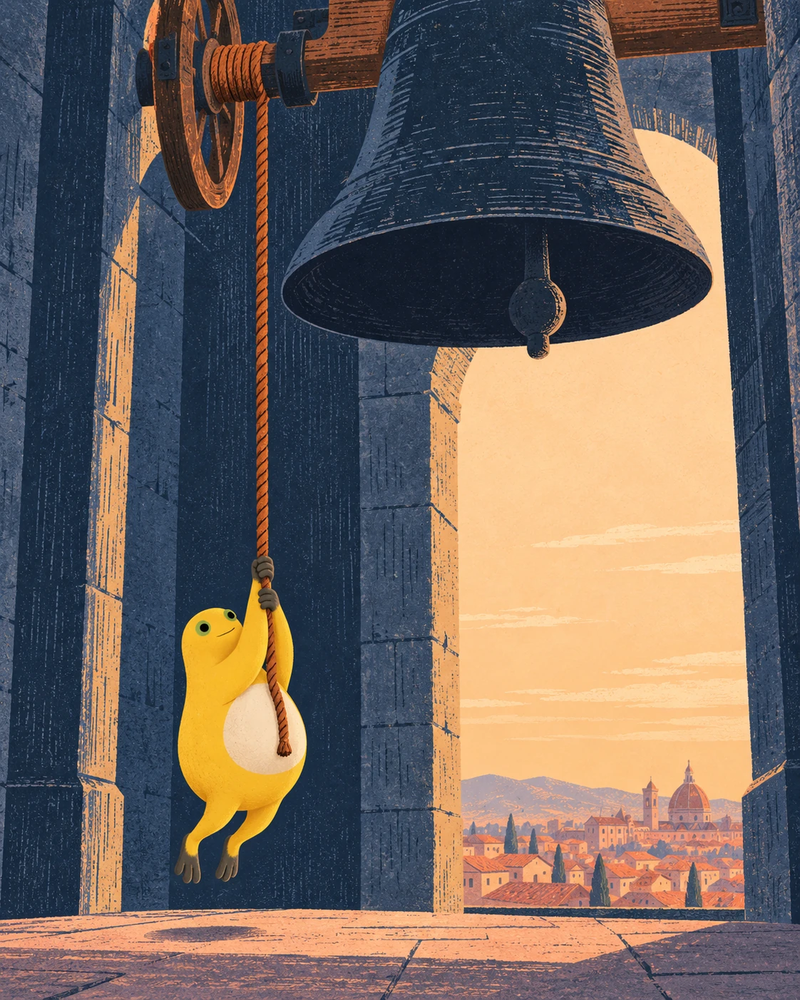
绳子一直向上，脚却先离开了地面。小奶蛙挂在巨大钟体下方，手、绳、轮轴构成一条窄长的联系；拱门外的城市很远，钟楼里的重量则近在眼前。
本作作者：奶蛙现代艺术馆项目 · AI辅助再创作
大钟的开口占据上半部，奶蛙却停在靠近地板的低处。双手一上一下握住同一根绳，双脚与地面之间的小缝和独立影子使悬挂状态可以直接辨认。这里的张力来自大小和高度的不对称：身体没有支配钟楼，反而被向上的路线改变了姿势。
深蓝墙柱和暖杏色拱门把画面分成两个安静的色域，远城进一步拉开尺度。木刻式刮痕让墙、钟和角色共享同一张平面。标题预设了“还没响”的片刻，但静态图像不能证明声音是否发生；轮轴和吊架也只是图形化叙事线索，不是实际敲钟方法或可靠工程结构。
角色参考作品
定稿为V1。本作是AI辅助生成的数字图像。角色采用奶蛙（社区衍生样本）；角色和参考作品的权利归相关权利人。
NO. P135 · AI辅助二维图像 · 透明水彩式插画 · 原创
海草之间有一口气
A Breath Between the Seaweeds
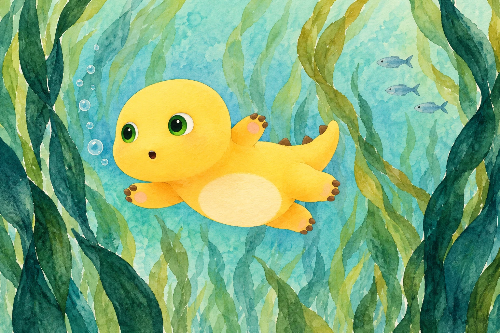
脚下没有地面，周围也没有容器。奶龙把四肢轻轻展开，停在一片深浅海草之间；左侧的气泡向上排列，右边的小鱼保持自己的距离。黄色身体暂时成为水道里最亮的一块。
本作作者：奶蛙现代艺术馆项目 · AI辅助再创作
前景深色长叶从画幅两边弯入，浅色海草在后方重叠，悬浮的黄色身体处在两层之间。奶龙的大头、短肢、圆腹与短尾保持连贯，四肢不再承担地面上的站立任务。气泡和小鱼把观看分向左上与右上，水草则使身体所在的空隙成为一条可感的通路。
水彩式透明叠色让海草和水共享同一张纸的亮度，角色也用平缓的薄色融入其中。这里没有把海面卷起、画布化水或将鱼变成夜空符号，而是让既有角色进入一个完整的水下空间。场景是想象性的非官方二创；气泡不证明角色真实的呼吸能力、潜水方法或已经完成的游动。
第七印象官方网站 · 奶龙
定稿为V1。本作是AI辅助生成的数字图像。角色采用奶龙（官方IP形象的非官方二创）；角色和参考作品的权利归相关权利人。
NO. P136 · AI辅助二维图像 · 油洗与干刷质感模拟 · 名画改编
这一级，一起上
Up This Step Together
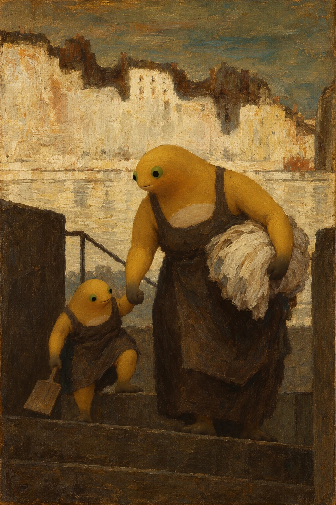
一只手要照顾侧面的衣包，另一只手向较低的台阶伸去。小奶蛙抬起一只脚，木拍仍垂在另一侧。河对岸已经被照亮，近处的两个身体却把这一步留在阴影里。
本作作者：奶蛙现代艺术馆项目 · AI辅助再创作
本件依据杜米埃约1863年的奥赛版《洗衣妇》改编，保留侧抱衣物、牵手登阶和明亮河岸的组织。大蛙倾斜的肩线向左下的小蛙靠近，手与手成为两种尺度之间最短的连接。衣包聚成一块浅色，重量由被它改变的肩臂姿势暗示。
深褐工作衣把近景合成不规则的大形，黄色从头、手臂和小蛙抬起的腿上显露。上方房屋的浅色反而使近处动作显得更重。这里的相助来自牵手、阶差和身体倾斜这些可见关系；没有借原作人物的母女身份，为改编角色指定亲属关系或生活经历。
Musée d’Orsay · La Blanchisseuse
角色参考作品
定稿为V1。本作是AI辅助生成的数字图像。角色采用奶蛙（社区衍生样本）；角色和参考作品的权利归相关权利人。
NO. P137 · AI辅助二维图像 · 干粉彩与炭线质感模拟 · 原创
先把肚子收一点
Make a Little Room for the Belly
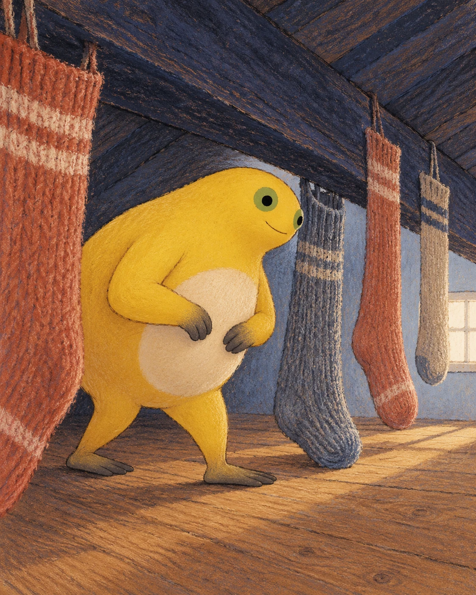
梁比想象中低，袜子比想象中长。奶蛙把两手收在肚子前，给眼前窄窄的通道留出一点位置。前脚已经伸出去，背和头还在留意上方。
本作作者：奶蛙现代艺术馆项目 · AI辅助再创作
上斜梁与左侧近袜共同压缩画面，右边小窗则留出一小块明亮的方向。奶蛙略前倾的头背顺着梁下经过，双手没有抓取工具或衣物，动作集中到身体怎样占据空间。前后分开的脚提示跨步，悬下来的空袜又把它的短腿衬得更短。
赭红、蓝灰与靛蓝将空袜、屋顶和木地板分成几层，黄色身体成为夹在其中的一块暖色。干粉彩颗粒使织物与角色共享纸面，但不同密度的纹路仍区分表面。题名里的收肚子是一句想象中的提醒；图像实际呈现的是收手和轻微俯身，不证明身体缩小或已经穿过整个阁楼。
角色参考作品
定稿为V1。本作是AI辅助生成的数字图像。角色采用奶蛙（社区衍生样本）；角色和参考作品的权利归相关权利人。
NO. P138 · AI辅助二维图像 · 水粉与干铅笔质感模拟 · 原创
空壳里有回声
An Echo in an Empty Shell
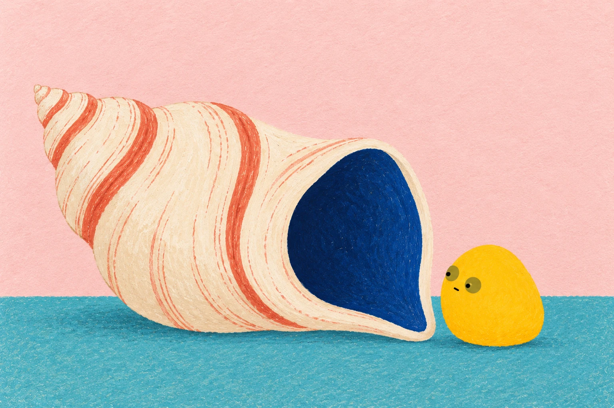
海螺的开口比整个身体还大。奶蛋停在外面，抬起小小的眼睛，黄色和深蓝隔着一条窄缝相对。空着的内部让人想把注意力靠近一点。
本作作者：奶蛙现代艺术馆项目 · AI辅助再创作
奶白壳体横跨画面，珊瑚色弧纹将视线送向右端的深蓝开口。小奶蛋的眼睛也朝向那里，两个方向在壳沿附近相遇。它没有进入壳内，也没有用身体压住或推动什么；关系由距离、尺度和朝向构成，力量不再是无肢形体参与场景的唯一方式。
粉色背景与青绿地带分成两块安静的平面，腔口的深蓝成为最大的暗处。壳内没有画出深层细节，使开口更接近一个难以读完的色形。题名把观看引向聆听的联想；一个小身体面对大空处时所保持的距离，让这块沉静的蓝色有了可供想象的内部。
角色参考作品
定稿为V1。本作是AI辅助生成的数字图像。角色采用奶蛋（社区衍生样本）；角色和参考作品的权利归相关权利人。
NO. P139 · AI辅助二维图像 · 油画笔触模拟 · 名画改编
伞沿之间留一点路
A Little Room Between Umbrellas
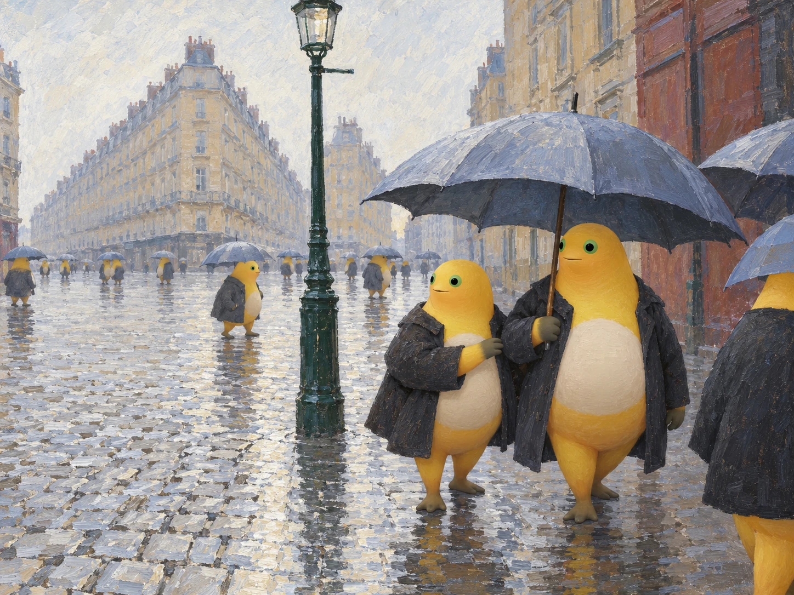
伞把两只奶蛙收进同一小块阴影。它们向左转头，另一把伞却从右边进入，边缘几乎叠在一起。湿路面向远处展开，足边留下的间隙，反而成了街口最需要照顾的地方。
本作作者：奶蛙现代艺术馆项目 · AI辅助再创作
本件依据卡耶博特1877年的《巴黎街道，雨天》改编。楔形建筑把两条街送向远处，深绿灯柱在近处立起一道分界。左半部的街面宽而空，右半部的伞与身体挤在一起；城市的开阔和行人的局促由这种不均衡同时出现。
挽臂的手把两只不同高度的奶蛙暂时连成一组，共用伞面成为它们周围的小边界。右端裁切的背影又让这组边界接近另一把伞。画面保留擦身而过的可能，没有描绘确定的碰撞，也不把两者指定为伴侣或其他亲属关系。
Art Institute of Chicago · Paris Street; Rainy Day
馆方Google Arts条目
角色参考作品
定稿为V1。本作是AI辅助生成的数字图像。角色采用奶蛙（社区衍生样本）；角色和参考作品的权利归相关权利人。
NO. P140 · AI辅助二维图像 · 彩铅与蜡笔质感模拟 · 原创
把蓝色拧成一股
Twisting the Blue Together
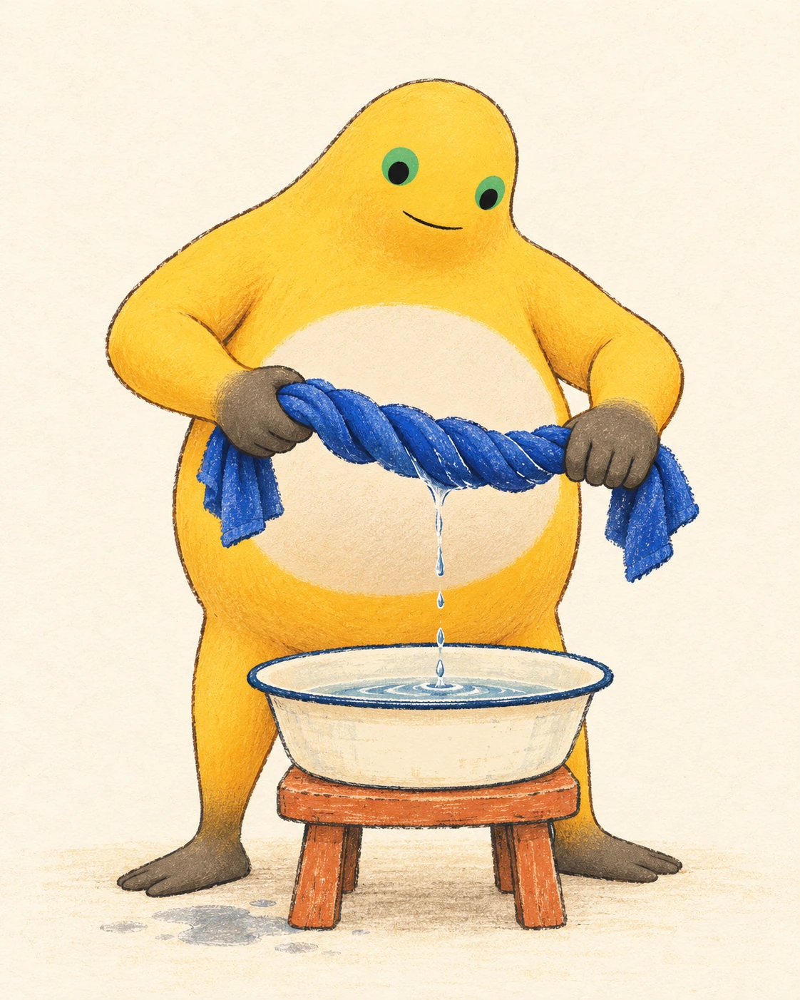
蓝毛巾在两只手之间变窄，折痕绕成一股。水从最紧的地方往下落，碰到盆面后又散成圆圈。奶蛙的身体占住大半画面，真正向外离开的，只有中间那一点水。
本作作者：奶蛙现代艺术馆项目 · AI辅助再创作
双手朝不同方向握住毛巾，把平展的布压成一条带有节奏的蓝色横线。与角色奶油色腹部相比，湿布的折面更紧、更密。转动的方向没有用箭头解释，而是留在两只手的朝向和几段交叠的折痕之间。
画面最细的线从毛巾下缘垂直落下，使横向动作和下方圆盆相接。凳子与双脚落在同一地面，素色背景没有加入洗衣房故事，让注意力停在拧、滴、接这三个环节。静态滴水并不能证明布已经拧干，也不检验真实纤维和扭力。
角色参考作品
定稿为V1。本作是AI辅助生成的数字图像。角色采用奶蛙（社区衍生样本）；角色和参考作品的权利归相关权利人。
NO. P142 · AI辅助二维图像 · 油画平面笔触模拟 · 名画改编
红色把房间连起来
Red Holds the Room Together
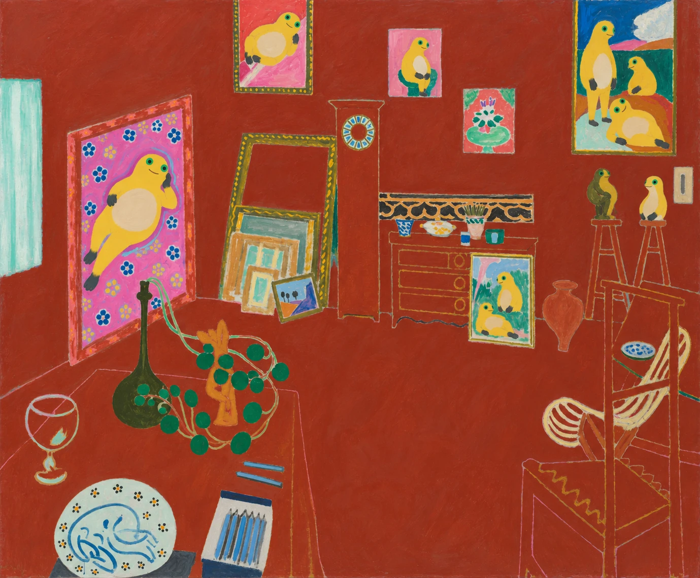
红色越过墙角，接住地板，也穿过柜子与椅子的轮廓。奶蛙没有走进房间，而是留在四周画作和小塑像里：有的斜卧，有的端坐。它们各占一小块彩色地方，中央的空处则把这些不同姿势连在一起。
本作作者：奶蛙现代艺术馆项目 · AI辅助再创作
改编保留《红色画室》里连续红色与细轮廓线的关系。桌柜不靠投影确定厚度，椅子也像从红地中挑出的几根线；颜色让墙面和地面接近同一张平面。周围的画中画仍保有粉、蓝、绿等局部色块，因此观看会先在这些小岛间移动，再回到几乎没有物件的中央。
奶蛙分散在不同的画和小像中，没有一只以现实观众身份占据画室。重复的黄色身体把卧姿、坐姿和立姿变成同一个形象的多种呈现。这里的趣味来自图像内部再放图像：角色既是被观看的对象，也构成了这间想象画室的收藏，而不是给原作者补写新的意图。
MoMA · Henri Matisse, The Red Studio
角色参考作品与发布页
定稿为V1。本作是AI辅助生成的数字图像。角色采用奶蛙（社区衍生样本）；角色和参考作品的权利归相关权利人。
NO. P143 · AI辅助二维图像 · 水粉笔触模拟 · 原创
铅笔还很长
The Pencil Is Still Long
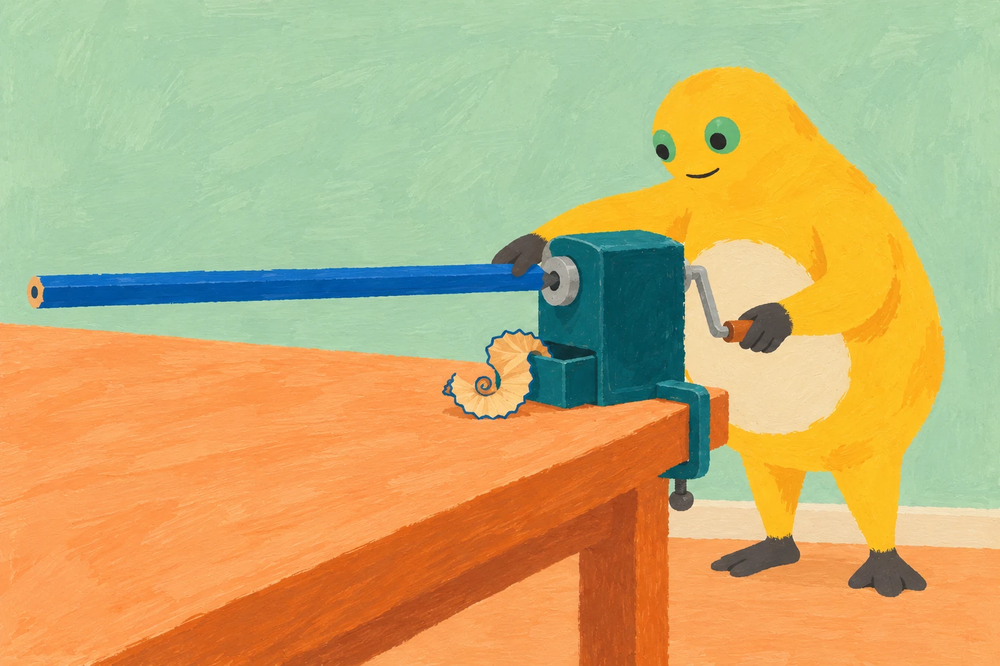
蓝铅笔从小机器里伸出来，一直伸向画面左侧。奶蛙一手扶笔，一手握着摇柄，目光停在两手之间。桌上已经有了一卷薄薄的木屑，而铅笔看上去仍然很长；细小的准备工作，在这里占了宽宽的一整段下午。
本作作者：奶蛙现代艺术馆项目 · AI辅助再创作
一根横向的蓝线把画面拉开，右边的身体与卷笔刀却挤在一起。两只手分担不同任务：上方的手稳住笔杆，近侧的手握着木柄。角色没有夸张表情，动作的具体关系承担了叙事，让观看先追随铅笔的长度，再回到小小的入笔口。
机器方正，身体圆软，木屑则卷成不规则的弧。三种形状把同一件准备工作拆成了工具、使用者和留下的痕迹。刨屑并不保证笔已经削好，曲柄的位置也不能证明动作正在发生；画面保存的是随时可以继续的一刻，而不是完成工作的证书。
角色参考作品与发布页
定稿为V2。本作是AI辅助生成的数字图像。角色采用奶蛙（社区衍生样本）；角色和参考作品的权利归相关权利人。
NO. P144 · AI辅助二维图像 · 水粉套色感模拟 · 原创
白光分开以后
After White Light Parts
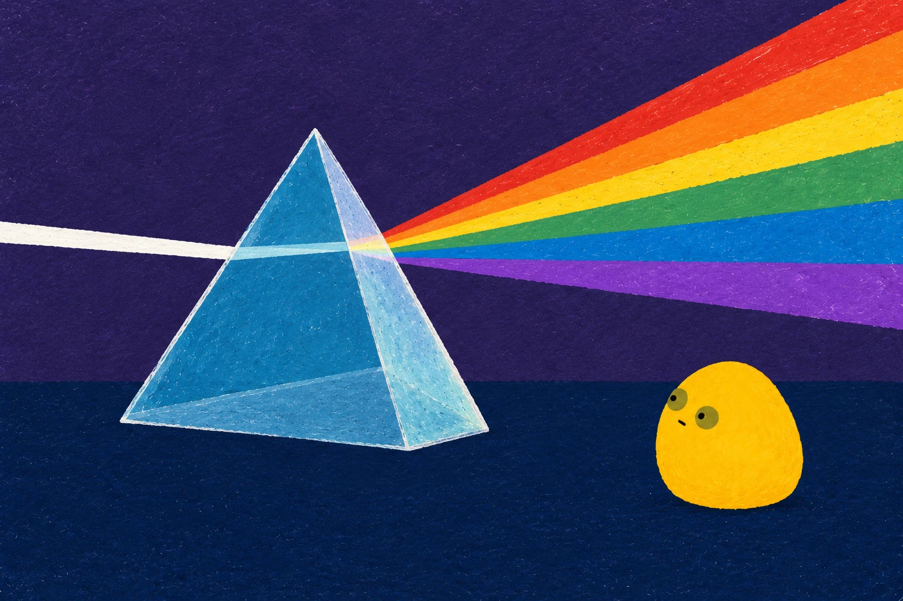
白色细线经过蓝色玻璃，向右展开成一束不同颜色的带子。奶蛋留在下方，没有碰到玻璃，也没有站进光里。它的黄色与上方那一道黄互相照应：原本只有一条的路径，现在变成了一片可以慢慢看的颜色。
本作作者：奶蛙现代艺术馆项目 · AI辅助再创作
构图由细白线、三角形和扇面组成。白线将目光引入左侧玻璃体，宽色带再把视线带出右上方；奶蛋处在这个方向之外，让向外展开的光与安静停留的角色形成对照。玻璃不是写实光学仪器，而是用蓝色分面组织的一次色彩转折。
奶蛋没有借身体推动、压住或挡住东西，只与变化保持一点距离。它身上的黄与光谱中的黄相遇，身份因此通过颜色进入构图。暗底给彩带留出明晰边界，也让角色下方的空白有了分量；这里保留的是观察的空间，不把想象中的分色当作实验结果。
角色参考作品与发布页
定稿为V1。本作是AI辅助生成的数字图像。角色采用奶蛋（社区衍生样本）；角色和参考作品的权利归相关权利人。
NO. P145 · AI辅助二维图像 · 油画短笔触模拟 · 名画改编
把这一把交给土地
Give This Handful to the Earth
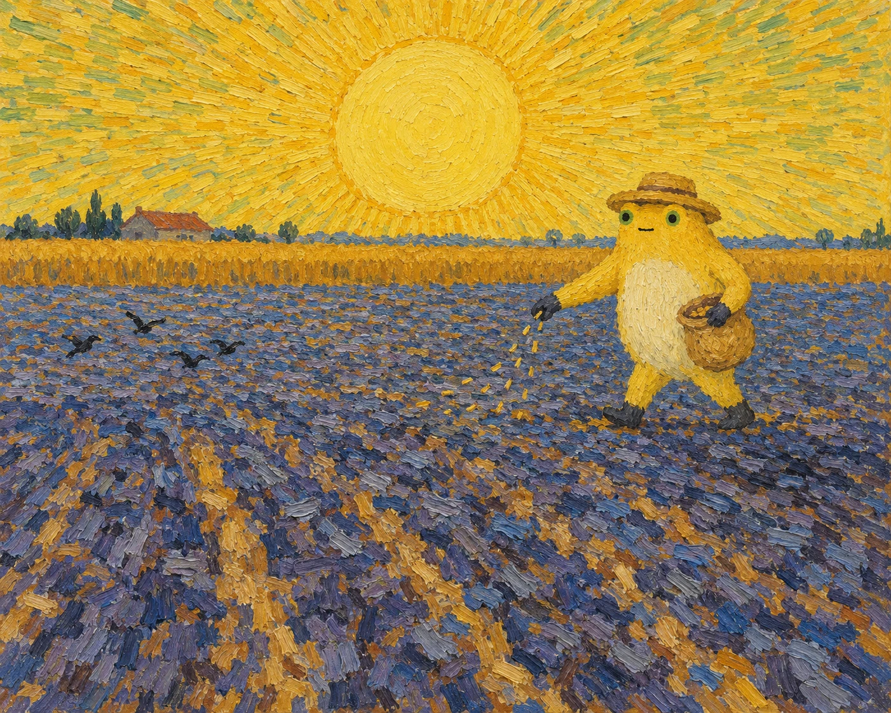
太阳将天空撑成一整片黄，地面却被蓝紫色的短笔触翻松。奶蛙迈开小步，把手中的几道金黄撒向泥土。它与太阳使用同一种颜色，却只占田野的一小处；向外张开的手，把大画面里的光转成了近处的一次劳动。
本作作者：奶蛙现代艺术馆项目 · AI辅助再创作
这件改编依据梵高1888年6月的《播种者》，保留大太阳、窄麦田带、紫蓝犁地与偏右播种者之间的布局。下方斜向沟纹把目光推向远处，天空向外放射的短笔触则反向铺开。黄色并不只属于角色，它先在整片天空出现，再落到种子、田垄与身体上，使角色真正成为画内颜色关系的一部分。
帽子和种袋提供劳动线索，伸出的深色手与稀疏黄点把动作压缩成一个很小的接点。奶油色腹片和绿色眼圈仍可辨认，但没有采用光滑玩具表面，而与田地共同接受短而厚的笔触。这里关注的是一次伸手与辽阔土地之间的比例；它是本次角色改编的观看方式，不代替原作的历史语境或作者意图。
历史作品资料
角色参考作品与发布页
定稿为V1。本作是AI辅助生成的数字图像。角色采用奶蛙（社区衍生样本）；角色和参考作品的权利归相关权利人。
NO. P146 · AI辅助二维图像 · 水粉平涂笔触模拟 · 原创
把一枚钉子扶直
Hold One Nail Straight
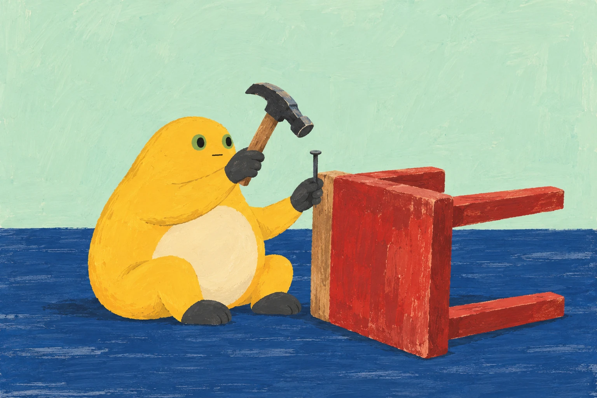
锤子还停在半空，一只手把钉子扶得很直。红色木凳横在面前，蓝地面接住盘起的小腿。整幅画的动作都围着一点空隙聚拢：在敲下去之前，奶蛙先把手里的东西看清楚，让这一瞬间比修好的结果更值得停留。
本作作者：奶蛙现代艺术馆项目 · AI辅助再创作
画面以黄、红、蓝三块大色面组织关系，薄荷绿墙给举起的锤头留下呼吸处。坐姿的圆轮廓与凳子的方形相抵，手、钉与锤形成一个很小的三角，使日常工具的尺度在画里变得郑重。接点被手部分遮挡，所以这里关注扶持与等待，不宣称钉已进入木头。
两只深灰手各自承担不同工作：一只稳定细小的竖线，一只握住尚未落下的重量。角色的浅腹与短腿压在低处，让所有注意力向上集中到工具之间。平涂的黄身和不规则木纹保持同一种哑光笔触，观看的重点是动作暂停时的专注，而不是一幅可以照做的维修说明。
角色参考作品与发布页
定稿为V1。本作是AI辅助生成的数字图像。角色采用奶蛙（社区衍生样本）；角色和参考作品的权利归相关权利人。
NO. P147 · AI辅助二维图像 · 水粉平涂笔触模拟 · 原创
面包比槽口大一点
The Bread Is a Little Wider than the Slot
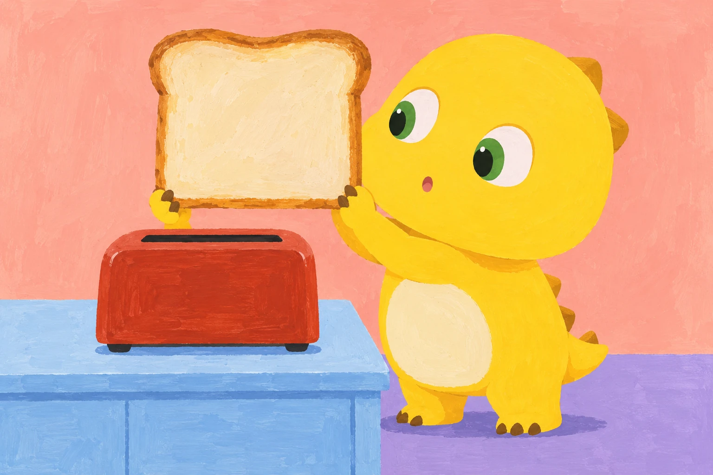
面包已经举起来，下面的槽口却显得窄了。奶龙把头歪向一边，两只手仍托着面包的角，先不往下放。宽面包、大脑袋和小机器排成了一次安静的比较；食物还没变成早餐，尺寸先成了今天遇到的小问题。
本作作者：奶蛙现代艺术馆项目 · AI辅助再创作
画中最重要的不是机器怎样工作，而是两个水平宽度。面包下沿悬在黑色槽口上方，粉色空隙将它们分开；红色机身与浅蓝台面给这条细黑线提供清晰衬底。奶龙的大头从右边靠近面包，让角色本身也成为一块可以比较的圆形面积。
两只棕爪手托着面包下角，右侧短尾与背棘将身份与奶蛙区分开。偏头和微张的小嘴提供犹疑的神情，画面保持在放下之前，不靠夸张事故制造笑点。平涂黄、粉、红、蓝铺成清楚色面，面包的浅色中心与奶油腹片相互呼应，让一次生活里的尺寸错配显得轻巧。
视觉方法与作者资料
定稿为V1。本作是AI辅助生成的数字图像。角色采用奶龙（官方IP形象的非官方二创）；角色和参考作品的权利归相关权利人。
NO. P148 · AI辅助二维图像 · 油画笔触模拟 · 名画改编
桨停在水面上
Oars at the Water's Surface
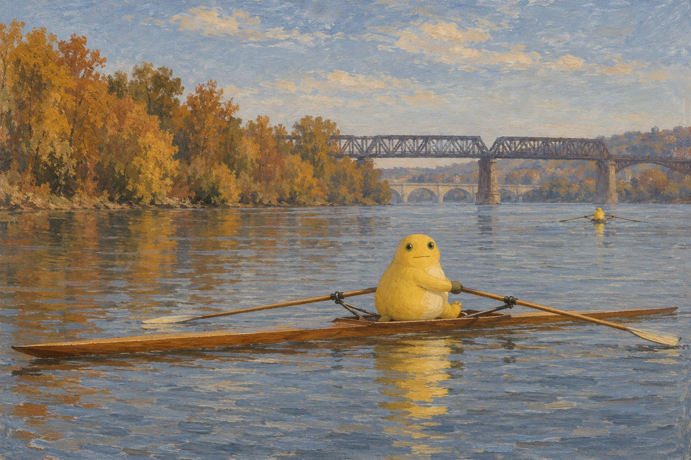
窄艇几乎横穿河面，奶蛙却只占其中很小的一段。两支桨在水边展开，把圆腹接入细长的线条。秋树、桥梁与黄色身体都在水中留下断续笔触；它转过脸，河面仍替整幅画保持着缓慢的平衡。
本作作者：奶蛙现代艺术馆项目 · AI辅助再创作
这件作品改编自托马斯·伊金斯1871年的《单人双桨冠军》。原作中狭长赛艇、近处转身的人物与远处另一艇之间的空间关系被保留，桥梁则重新排列成上下相叠的两层。主角没有放大到占据河面；它的黄色先成为近处的小亮点，再沿倒影向下散开，与左岸秋树的暖色遥相呼应。
奶蛙的连续头身、奶油腹片和小绿眼都被放入与水面相同的笔触中。握桨的近手给出动作的最低限度线索，远手和下肢则因坐姿与遮挡没有全部展开。这里关注的是圆身体如何暂时加入一组细长水平线，不推断比赛胜负、人物关系或角色心理，也不把艇桨结构的绘画简化当作实际操作方法。
历史作品资料
角色参考作品与发布页
定稿为V1。本作是AI辅助生成的数字图像。角色采用奶蛙（社区衍生样本）；角色和参考作品的权利归相关权利人。
NO. P149 · AI辅助二维图像 · 套色平面印刷视觉 · 原创
让雨先落在脸上
Let the Rain Reach My Face
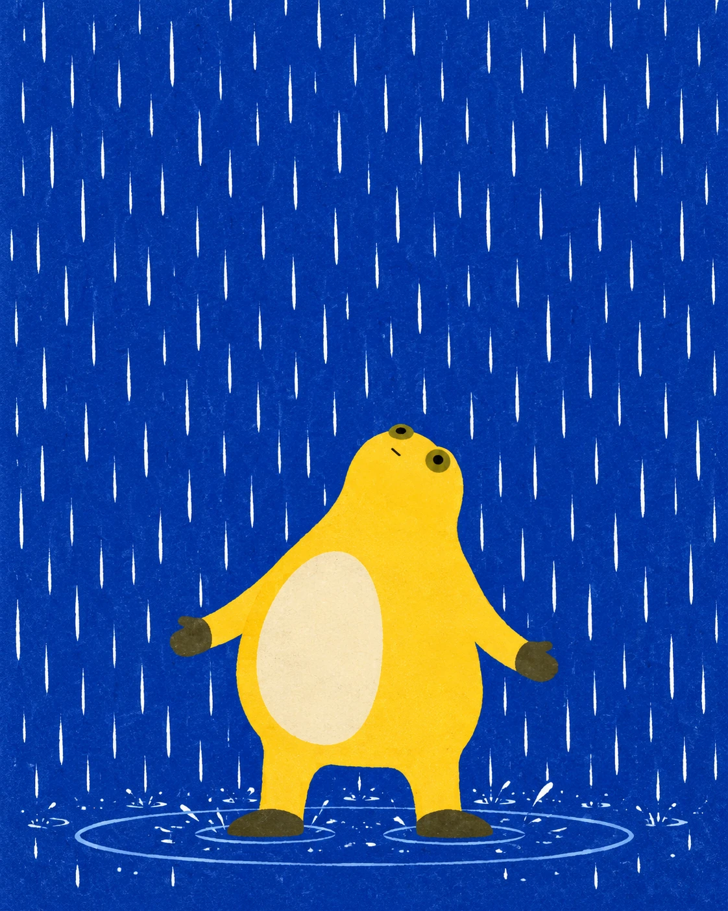
雨向下落，脸却向上转。黄色身体没有寻找遮蔽，只把两只手低低摊开。大片深蓝让这一点后仰显得很慢，白色短线仍不断经过它的周围。脚边的圈纹将站立留在地面，也给单纯的淋雨增加了一点响动的想象。
本作作者：奶蛙现代艺术馆项目 · AI辅助再创作
画面把环境减到蓝、黄和白三组主要色面。雨的细长竖线占据上半部，奶蛙在下方以弯曲头身打断重复节奏。奶油色腹片仍是平的，没有借助立体高光说明身体；重心主要由分开的双足、低张的手和上转的眼睛交代。水圈把几乎没有地平线的蓝色重新解释成可以站立的浅水地面。
这是一件无特定历史原作的场景构图。它不安排必须完成的任务，也没有让角色用器具改变天气，只留下身体对垂直雨痕的一次反向倾斜。迎雨、放松或发呆都可以成为观看联想，但图像没有替角色作心理说明。套色印刷般的平面关系让这一动作先以简短剪影出现，再由细碎纸纹放慢观看。
角色参考作品与发布页
定稿为V1。本作是AI辅助生成的数字图像。角色采用奶蛙（社区衍生样本）；角色和参考作品的权利归相关权利人。
NO. P150 · AI辅助二维图像 · 水粉与剪纸色面模拟 · 原创
门开了，先看一眼
The Door Opens, a Face Appears
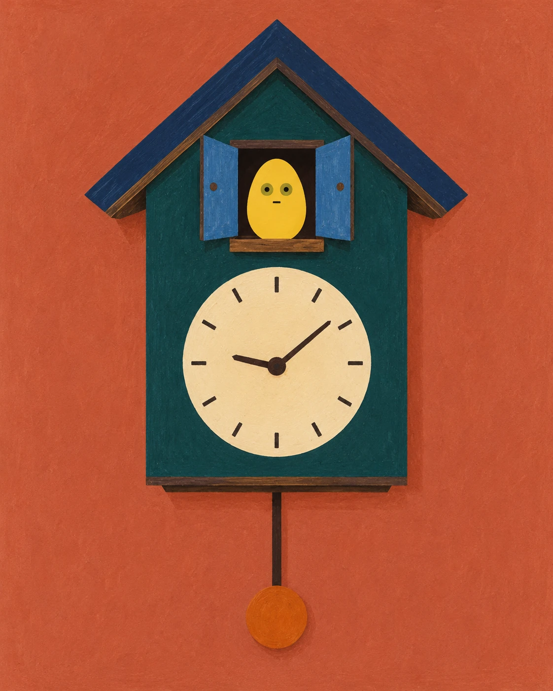
小门打开，出现的只有一张黄色的脸。奶蛋占了通常留给报时鸟的位置，既没有翅膀，也没有补上叫声。圆钟面在下方展开，细长摆杆继续向地面延伸；这一点小小的替换，让熟悉的挂钟先变成了一个供人对看的窗口。
本作作者：奶蛙现代艺术馆项目 · AI辅助再创作
正视构图把三种尺度排在同一条竖线上：门里的黄卵、宽大的奶油钟面、最下方小圆摆锤。蓝门在黄卵两侧打开，深色门洞让角色无需体积光就能从背景中被辨认。陶红墙将整个钟体包住，木沿与屋檐的浅侧面仍保留一点器物厚度，主要关系却由平面色块构成。
这件原创场景把布谷钟的报时鸟换成奶蛋，保持其无肢体的卵形，不用翅膀或脚来解释它如何出现。门已经开着，角色只是露面；它是否发声、何时出来，以及钟是否运转，都不由这一帧静画证明。幽默来自观者对物件惯例的记忆，而不是为奶蛋补写起源、职业或新的角色设定。
角色参考作品与发布页
定稿为V1。本作是AI辅助生成的数字图像。角色采用奶蛋（社区衍生样本）；角色和参考作品的权利归相关权利人。
NO. P151 · AI辅助二维图像 · 油画薄涂与刮擦笔触模拟 · 名画改编
这一桌，灯色不同
Different Light at One Table
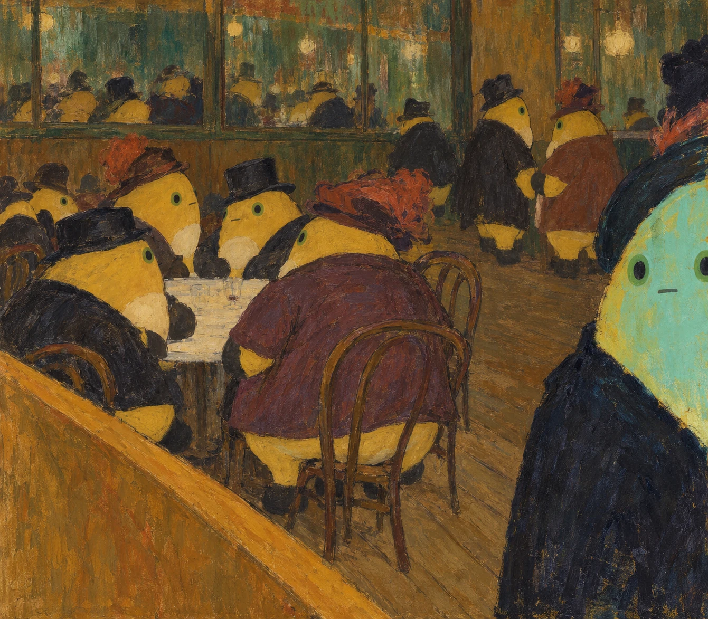
同一张桌旁，黄色面孔被暗帽与衣领隔成几处小亮点。右前方有一张脸突然靠得很近，青绿覆盖了原来的黄；它没有加入桌上的交谈，却先拦住我们的目光。栏杆从另一侧斜插进来，热闹于是变成一道不容易走进去的空间。
本作作者：奶蛙现代艺术馆项目 · AI辅助再创作
本件依据劳特累克《在红磨坊》的具体布局，保留了斜栏杆、中央围桌群像、曲木椅背与近右被裁切的脸。小桌并不是透视的唯一中心：赭色栏杆将观者推向右方，而冷青色近脸又把目光挡回室内。镜墙使黄色身体在远处重复，但这些重复首先是一种拥挤节奏，并不声称每个反射都能与人物一一对应。
奶蛙的连续梨形身体把原作较高的人形压短，帽子和披衣仍维持坐者、背影与站立者之间的区别。奶油腹片与绿眼间歇出现，近右青色面孔则主动牺牲一部分黄色，以接入整幅画的颜色关系。角色不再像贴在历史背景上的亮面玩具，而与桌椅共同承受薄涂和擦痕；社交距离的联想属于本次观看，不为原作者补写意图。
历史作品资料
历史作品资料
角色参考作品与发布页
定稿为V1。本作是AI辅助生成的数字图像。角色采用奶蛙（社区衍生样本）；角色和参考作品的权利归相关权利人。
NO. P152 · AI辅助二维图像 · 哑光水粉色块模拟 · 原创
两股黄色经过
Two Streams of Yellow Passing
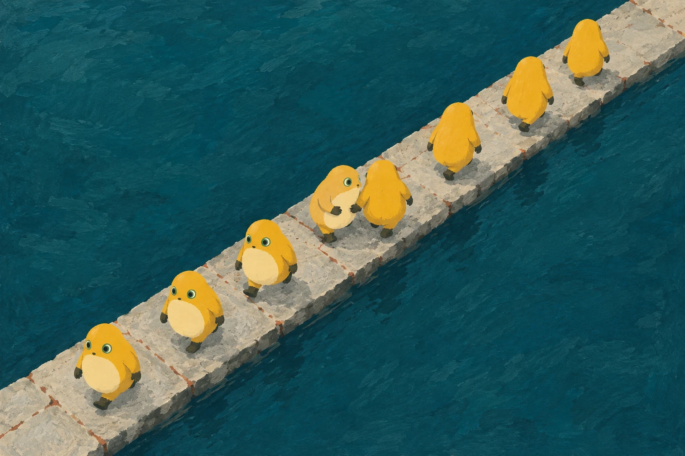
路只有一条，黄色却朝两个方向经过。正面的奶油腹与背面的整块黄交替告诉我们，谁正在靠近，谁已经走远；到了中央，身体只能稍稍侧开，把同一条窄路分给彼此。
本作作者：奶蛙现代艺术馆项目 · AI辅助再创作
窄道从左下穿向右上，把青色水面切成两块广阔空白。八个黄身没有铺满画面，而是留下能够辨认步距的灰白间隔。正脸和背影分属两个方向，中央错肩处把规律变成一次具体相遇。深色手足是小的停顿，红褐砖缝则让道路继续贯穿这些停顿。
同一种轮廓并不意味着同一个去处。这里没有箭头、标志或指挥者，方向依靠奶油腹与黄背的差别被看见。场景与群体组织为本次独立设计，角色仍是既有奶蛙；静态步姿只支持相反方向经过的观看，不证明真实交通流或彼此让行的先后。数字模拟的水粉边缘把角色与水面放在同一绘画表层。
角色参考作品与发布页
定稿为V1。本作是AI辅助生成的数字图像。角色采用奶蛙（社区衍生样本）；角色和参考作品的权利归相关权利人。
NO. P153 · AI辅助二维图像 · 哑光水粉大色域模拟 · 原创
圆影里坐一会儿
Sitting for a While Inside the Round Shadow
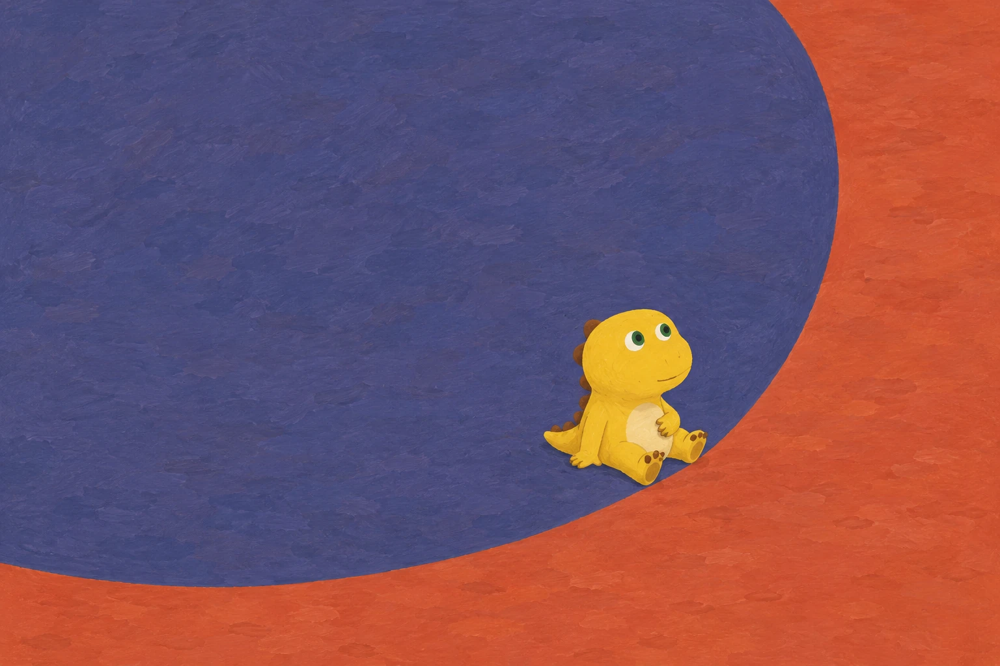
圆影很大，坐下只占了它的一小段边。紫蓝与陶红在脚尖前分开，黄色身体留在冷色里，像是借到一个暂时不用站起来的位置。影子的来源没有出现，画面只留下弧线，以及沿着弧线坐一会儿的余地。
本作作者：奶蛙现代艺术馆项目 · AI辅助再创作
画面先让两块颜色相遇，再给身体找位置。巨大的紫蓝圆被左边和上边裁切，陶红只沿外缘展开；小奶龙贴着右下弧边坐下，使几何边界突然有了脚尖、腹部与支撑手可以衡量的尺度。圆不是池沿，也没有画出实体台阶，坐姿仍落在同一片平地上。
官方奶龙的头身差别、短尾和棕色小棘在少量笔触中留下识别线索，但它没有承担解释圆影的任务。阴影的圆形被当作独立构图，并不提出准确光源或投影物。场景是本次原创的非官方角色再创作，冷暖与停顿的联系来自观看联想；哑光笔触为数字模拟，而不是实体水粉或角色真实休息的记录。
视觉方法与作者资料
定稿为V1。本作是AI辅助生成的数字图像。角色采用奶龙（官方IP形象的非官方二创）；角色和参考作品的权利归相关权利人。
NO. P154 · AI辅助二维图像 · 点彩油画视觉模拟 · 名画改编
花停在颜色中间
A Flower Amid the Colors
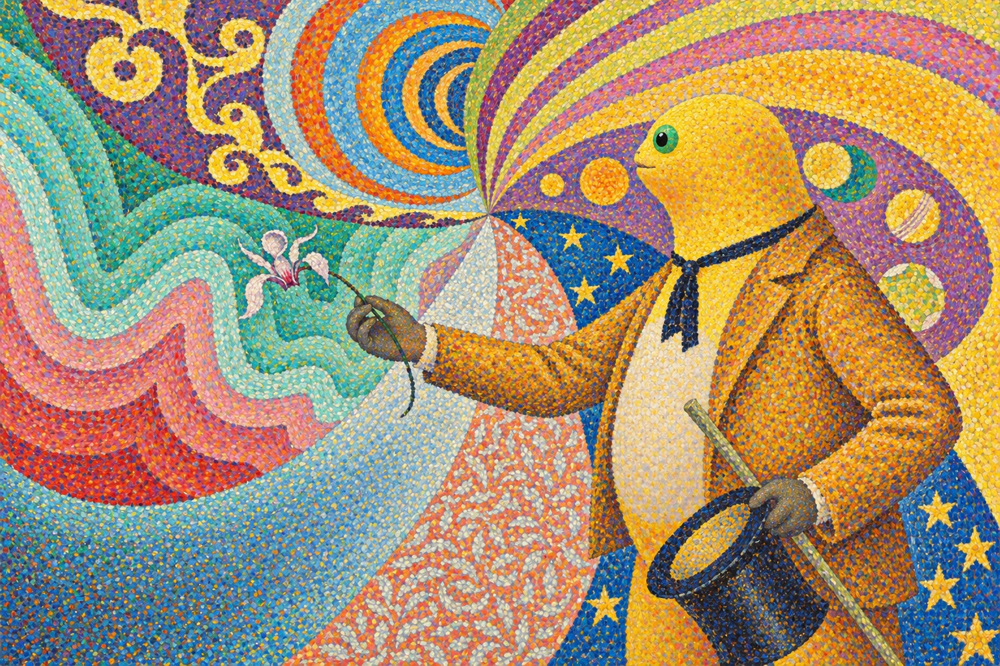
花枝被一只深色手稳稳留在左边，身后的颜色却像不断转身。圆、星与弧线从同一个位置展开，绕过黄色头颈，又钻进外套的色点。奶蛙没有离开这片喧闹，只用一朵浅花和一顶黑帽，让目光暂时停下来。
本作作者：奶蛙现代艺术馆项目 · AI辅助再创作
本件依据西涅克1890年《作品217：费内翁肖像》。保留右侧人物、向左持花、低处礼帽和手杖，以及偏中左的放射汇聚点。背景不被当作随意的装饰贴纸：弧形色带、星形楔区与青粉波纹各有方向，使手臂成为穿过这些节奏的一条较安定的横线。浅花和黑帽在复杂色域中形成两个大小不同的停顿。
黄色头颈与奶油腹替代了原作的人像结构，衣装和姿势则维系具体肖像的辨识关系。微小并置色点同时覆盖身体、外套与背景，使角色不是光滑玩具叠在名画上。侧面只露一只绿眼，完整四肢被肖像裁切让位给姿态。本次把安定手势与旋转图案的相遇作为观看入口，不将角色心理或这套解释归给西涅克。
历史作品资料
历史作品资料
角色参考作品与发布页
定稿为V1。本作是AI辅助生成的数字图像。角色采用奶蛙（社区衍生样本）；角色和参考作品的权利归相关权利人。
NO. P155 · AI辅助二维图像 · 水粉与纸面视觉模拟 · 原创
每一层都有人
Someone on Every Level
三个黄色身体住在同一幅画里，却各自朝着不同的空处。一个靠栏，一个停在门前，一个坐下。粉色长墙把距离拉开，蓝色侧面让空白也有了重量。没有谁成为中心，日常的共处暂时不需要一件共同的事。
本作作者：奶蛙现代艺术馆项目 · AI辅助再创作
空间由大块墙面而不是小道具构成。左上的倚栏者、右侧门前的背影和下方坐者形成斜三角，观者沿着三个黄点来回，但珊瑚长墙和右下钴蓝平面不断阻止目光直接穿越。三处地面都保持同一个向上方向，作品不靠倒置重力制造奇观；联系来自色彩和距离，而不是可见的通道。
角色的朝向被用作空间标点。左侧轮廓、正背面和侧坐姿分别显露或藏起奶油腹与绿眼，同一身份因此出现三种可见程度。画面允许我们联想到邻居之间的接近与分隔，但没有给三者安排亲属关系、对话或内心独白。原创的是这组错层安排及观看节奏，不是奶蛙角色本身。
角色参考作品与发布页
定稿为V1。本作是AI辅助生成的数字图像。角色采用奶蛙（社区衍生样本）；角色和参考作品的权利归相关权利人。
NO. P156 · AI辅助二维图像 · 平涂水粉与刮擦视觉模拟 · 原创
石头都不回答
The Stones Do Not Answer
圆的旁边还是圆的，灰白、浅蓝与黄色像在重复一个轮廓。只有中间偏右的那一枚长着眼睛。它与最近的石头之间留了一小段蓝色，另一边却是宽得多的空地。差别不在谁更圆，而在我们先认出了哪一种目光。
本作作者：奶蛙现代艺术馆项目 · AI辅助再创作
石头没有排列成整齐行列，也不共同组成另一张脸。较大的浅石被边缘裁断，小石在右下聚集，把唯一黄色形体留在一个松散的间隙里。左中大面积深蓝没有更多对象，形成与石头密集区不同的阅读速度。几乎相同的卵形先让角色接近周围的东西，鲜黄与两只绿眼随后又将它分出来。
无肢角色不需要被安排成某件工具的配件。这里没有压住什么、滚过什么或顶住什么，表情也只保留两个偏左黑点和一条短嘴。题名把不回应的石头暂时放进对话的想象，但画面本身并未证明奶蛋正在悲伤或等待。这是一种相似形状之间的辨认游戏，也是对大片空处如何影响观看的尝试。
角色参考作品与发布页
定稿为V1。本作是AI辅助生成的数字图像。角色采用奶蛋（社区衍生样本）；角色和参考作品的权利归相关权利人。
NO. P157 · AI辅助二维图像 · 粗笔触油画视觉模拟 · 名画改编
球还在手边
The Ball Is Still Near the Hands
球悬在两只深色手掌上方，四个身体却各有自己的节拍：一个举起，一个探来，一个抬膝，另一个留在后面。条纹从衣袖绕到圆肚，树林密密的叶片把这片空地围得像舞台。动作还没抵达球，画面已经热闹起来。
本作作者：奶蛙现代艺术馆项目 · AI辅助再创作
本件依据卢梭1908年《The Football Players》。两侧密叶树墙、上半部蓝天、低栏杆和下方四人保持具体原作的组织关系。蓝白与红黄条纹把前后身体串起来，中央悬球又提供一个明确但尚未接触的焦点。观者可以沿伸手、举手、抬膝和停立的不同姿态来回观看，不必把这个冻结的片刻解释成一次已经完成的传球。
奶蛙的黄色连续头身、小绿眼和深色手足进入条纹服装，人物不再具有原作的面貌与须发。为了容纳举臂和跨步，肢体有所拉长，梨形身体仍在衣装下形成圆重的轮廓。角色和树叶使用同样的哑光短笔触，色面彼此咬合，避免把光滑玩具贴到历史场景上。熟悉的面孔因重复出现而像一支临时队伍，这属于本件的观看联想。
历史作品资料
历史作品资料
角色参考作品与发布页
定稿为V1。本作是AI辅助生成的数字图像。角色采用奶蛙（社区衍生样本）；角色和参考作品的权利归相关权利人。
NO. P158 · AI辅助二维图像 · 水粉与干粉彩视觉模拟 · 原创
各有一圈水
A Circle of Water for Each
每只奶蛙周围都有一圈断断续续的青色线。它们不相接，也没有岸边把三个位置连起来。最近的双手停在水线上，远处两张侧脸朝向不同方向。黄色显得很近，大片深蓝又把它们轻轻分开。
本作作者：奶蛙现代艺术馆项目 · AI辅助再创作
三只半身被放在一个很宽的不等边三角上，大小差异给出距离，深蓝空处则延长这份距离。水环没有画成完整几何椭圆，而是由断裂青色笔触组成；它们既说明身体与水面的接触，也为每个角色划出一小片临时边界。画里不出现岸线、月亮或建筑，使目光留在三个局部和中间的水面。
奶蛙的绿眼、黄肩和奶油腹片在低亮度色域里形成清楚标记。近者双手并列停在水线上，两位远者只露侧身，观看者因而获得三种不完全相同的朝向。水粉色块与干刷纹理同时出现在身体和水面上，空间不依靠写实反光展开。这是一种关于各自所在之处的视觉安排，不为三者预设亲密、疏远或其他心理关系。
角色参考作品与发布页
定稿为V1。本作是AI辅助生成的数字图像。角色采用奶蛙（社区衍生样本）；角色和参考作品的权利归相关权利人。
NO. P160 · AI辅助二维图像 · 油画短笔触视觉模拟 · 名画改编
伞下只剩这一点空地
Only This Patch of Ground Beneath the Umbrellas
伞弧一层压着一层，天空只剩几小块。左边的篮口、右边的木环和头顶伞冠反复画出圆弧，黄色面孔在蓝衣之间一闪一闪。人群没有让出一条远路，只留住脚边的浅色空地，让目光从紧密的身体之间慢慢穿过。
本作作者：奶蛙现代艺术馆项目 · AI辅助再创作
本件依据雷诺阿约1881至1886年的《雨伞》。伞群、人墙、左侧提篮者及右下持环小人物保持具体原作的构图关联。蓝灰伞面互相遮挡，街道远景被压缩；下部不规则浅地与上方密布弧线形成松紧之别。篮口与木环之间的呼应属于本件可见形式的读法，不为原作人物新增故事。
黄色奶蛙被嵌入冷色服饰与拥挤人群，绿眼成为许多小观看方向。衣物延长了身体，腹片和短腿多被遮去，因此这是一种穿衣群像改编。碎短笔触让黄色头身与伞面共享画面表面，左前较清楚的轮廓又与后方模糊面孔拉开距离。观看在近处来回移动，像在人群里寻找稍能停留的位置。
历史作品资料
角色参考作品与发布页
定稿为V1。本作是AI辅助生成的数字图像。角色采用奶蛙（社区衍生样本）；角色和参考作品的权利归相关权利人。
NO. P161 · AI辅助二维图像 · 水粉干刷视觉模拟 · 原创
这一排各看各的
Four Windows, Four Directions
四扇亮窗排成一行，黄色身体各自朝着不同方向。窗柱把他们隔开，红色细条又从下面连续经过。一个看左边，一个看外面，一个转过身，一个托着脸；同一排灯光里，目光并没有排成同一队。
本作作者：奶蛙现代艺术馆项目 · AI辅助再创作
画面从车外正侧面观看，删去向远处缩小的透视，把列车压成深蓝水平色带。四扇暖窗成为重复单元，粗窗柱和上方留白控制节奏。暗红线连续穿过窗下，让各个独立亮块属于同一个更大的物体；没有车轮或轨道也不妨碍读出车厢的视觉线索。
每只奶蛙的朝向打破窗格的机械重复：侧影、正面、背面和斜靠组成小幅变化。奶油腹片只在前侧身体出现，转身者以连续黄背保持身份。这里的彼此距离由窗框和姿态表现，不能据此确定他们的关系或心情。二维水粉色块保留一点体积，却让人物与车面共享哑光的笔触表面。
角色参考作品与发布页
定稿为V1。本作是AI辅助生成的数字图像。角色采用奶蛙（社区衍生样本）；角色和参考作品的权利归相关权利人。
NO. P162 · AI辅助二维图像 · 水粉与剪纸边缘视觉模拟 · 原创
圆孔里多了一双眼
One Circle Has Eyes
浅青色圆形在红色面上轮流出现，边缘的半圆提示图案还在继续。直到右下这一处，黄色和两只眼睛让重复停顿了一下。奶蛋的下部藏在红边后，空洞忽然像成了一个位置：有一小块颜色正在那里看着别处。
本作作者：奶蛙现代艺术馆项目 · AI辅助再创作
这件作品先是一张满幅图形：朱红连接成连续的面，青绿色圆形错列其间，底部波浪边把前后色层分开。圆的大小略有变化，边缘裁切使图案看起来不限于画框之内。平面的处理保留了圆点与开孔之间的双重读法，奶蛋下部被红边截住，才给其中一个圆带来明确的遮挡线索。
无肢奶蛋不推物、不压物，也没有被安排一种工具用途。它只是以黄色和绿眼打断重复，身体与圆孔既相近又不完全吻合。其它圆中没有面孔，因此视线会在一组空形和一个有表情的形之间移动。题名所说的多出是一种观看变化，不说明角色怎样来到这里，也不验证纸帘的制作方式。
角色参考作品与发布页
定稿为V1。本作是AI辅助生成的数字图像。角色采用奶蛋（社区衍生样本）；角色和参考作品的权利归相关权利人。
NO. P163 · AI辅助二维图像 · 油画干刷色面模拟 · 名画改编
红地隔开两种距离
Two Distances Across the Red
白帽大得像近处的山，角力的两只却缩在红地深处。斜树干切过两种距离，把人群的观看与远处的动作分开。黄色面孔沿着帽缘出现，红色没有给出常规的远近标尺，大小于是成为画面里最直接的距离。
本作作者：奶蛙现代艺术馆项目 · AI辅助再创作
本件改编高更1888年的《布道后的幻象》。近处白帽群、斜穿画面的树与右上小型角力人物保留原作的空间关系。朱红色面压低景深，几乎没有靠地平线交代远方；近群与远处双角色的尺度差承担了距离的提示。白帽互相遮挡，形成一条起伏明亮的前景边界。
奶蛙的黄色脸进入蓝衣与白帽之间，侧向的绿眼带出观看方向。远处双角色仍然以手臂接触和分开的脚支撑动作，翅膀是历史形象的借用。左侧小牛出现黄色脸并非最初设计，而是生成偏离被保留下来的异化。它让熟悉的脸从人群扩散到另一种身体，同时也显露了本件与历史原图的差异。
历史作品资料
角色参考作品与发布页
定稿为V1。本作是AI辅助生成的数字图像。角色采用奶蛙（社区衍生样本）；角色和参考作品的权利归相关权利人。
NO. P164 · AI辅助二维图像 · 水粉干刷视觉模拟 · 原创
一根线经过四个地方
One Line Through Four Places
四块台彼此隔开，红线却依次经过四只手。坐着的、站着的、把手抬高的，各自改变一段弧线。距离没有消失，只是变得可以用目光沿着走；近处剩下的一圈红色，又让这条路像还有一点余量。
本作作者：奶蛙现代艺术馆项目 · AI辅助再创作
灰台把四只奶蛙分成独立位置，坐与站的交替改变了头部和手的高度。红线从左下的盘圈进入空间，经过低手与高手后停在右上。它没有把灰台填满，也没有替代其间的紫色空地，而是借每一段垂弧把间隔本身变成观看的路径。
黄色形体尺寸逐渐变小，给对角排列补上近远线索；红色在大面积紫色中保持清楚，像一条可追随的标记。第三只背后部分红线被遮住，需要眼睛把前后段接续起来。这种联系存在于画面的观看过程中，不表示四只角色在传话、协作完成任务或拥有已经确定的关系。
角色参考作品与发布页
定稿为V1。本作是AI辅助生成的数字图像。角色采用奶蛙（社区衍生样本）；角色和参考作品的权利归相关权利人。
NO. P165 · AI辅助二维图像 · 水粉与油画棒视觉模拟 · 原创
黄叶之间站一会儿
Standing Among Yellow Leaves
叶片把画面分成许多张开的扇面，黄色一层压着一层。奶龙也站进同一片黄色里，圆头和白肚子却没有跟着变成叶形。先看见眼睛，再看见短手和脚，熟悉的身体便从密密的纹样中一点点被认出来。
本作作者：奶蛙现代艺术馆项目 · AI辅助再创作
画面没有远处天空或地平线，叶片从四边裁入，使空间更接近一块铺满颜色的表面。扇形的放射线在不同方向展开，深橄榄底只从缝里露出。奶龙与叶子使用相近的黄，但圆头、白腹和短肢提供另一组边界；辨认依靠形状差异，多于依靠明暗对比。
身体并没有完全藏起来。相反，较大的角色与奶油色腹部让它在密集纹样中相当清楚。绿色眼圈、白色眼缘和棕色爪棘把视线带回面孔，再沿身体读到叶片遮住的脚。粗糙笔触让叶与角色共享同一表面，这种同色不同形的并置，是本件原创构图的重点。
视觉方法与作者资料
定稿为V1。本作是AI辅助生成的数字图像。角色采用奶龙（官方IP形象的非官方二创）；角色和参考作品的权利归相关权利人。
NO. P166 · AI辅助二维图像 · 套色木版印刷模拟 · 名画改编
风把纸页翻到天上
The Wind Turns Pages into the Sky
纸页离开了包，草帽离开了头，身体却还贴着弯曲的小路。两株高树将枝叶伸向同一侧，奶蛙们用不同姿势守着随身的东西。远处富士只剩一条安静的蓝线；近处越忙，那条线就越像不需要回应风的东西。
本作作者：奶蛙现代艺术馆项目 · AI辅助再创作
本件改编北斋《冨嶽三十六景 駿州江尻》，采用大都会博物馆JP2953、约1830–1832的印本作参考。保留下部曲路、偏左双树、右上飞纸草帽与远山轮廓。树冠、衣角和纸页从不同位置给出风的方向，山的轮廓则没有随它们一起弯曲。
黄色奶蛙沿着蓝色旅装露出头部与浅腹。小而重复的身体没有成为单个巨大主角，各自以扶帽、护包和弯身组成低处节奏。纸张的轻薄与脚下道路的稳定形成对照。这里的忙乱来自可见的姿态差异，不需要替角色编写同一种心情。
历史作品资料
角色参考作品与发布页
定稿为V1。本作是AI辅助生成的数字图像。角色采用奶蛙（社区衍生样本）；角色和参考作品的权利归相关权利人。
NO. P167 · AI辅助二维图像 · 水粉与蜡笔模拟 · 原创
从你的背上经过
Passing Over Your Back
上面的脚离开地面，下面的脚仍站得很近。一道低下的背，暂时成了另一个身体经过的地方。撑住背面的两只手把上下连在一起，腹部下方的一小块空白又把它们分开；没有绳子，也没有别的道具，动作只借用彼此。
本作作者：奶蛙现代艺术馆项目 · AI辅助再创作
画面的宽处在上方，窄处在下方。分开的双腿横向展开，屈起的下身却收拢在两只落地脚之间。深蓝轮廓没有把两只黄色身体画成一整块：上方腹部与下方背面之间保留一段浅杏空隙，双掌成为两体明确的接触点。
奶蛙的连续梨形在这次动作里分别拉开与压低。上方正面的绿眼和浅腹便于辨认，下方侧脸与弯背提供另一种轮廓。近手撑膝可见，远手被遮去，不必为了凑齐姿势而假称全部肢体可见。作品关注身体如何暂时互相支撑，不宣称已记录完整跳跃过程。
角色参考作品与发布页
定稿为V2。本作是AI辅助生成的数字图像。角色采用奶蛙（社区衍生样本）；角色和参考作品的权利归相关权利人。
NO. P168 · AI辅助二维图像 · 水粉套色模拟 · 原创
水线把黄色错开
The Waterline Shifts the Yellow
水线横过黄色，下半边便往右挪了一点。脸仍在原处，卵形却不再沿同一条边缘落下。两小段青色横纹把它留在宽阔蓝场的一角；其余地方没有发生更多事情，观看可以停在这一点错位上。
本作作者：奶蛙现代艺术馆项目 · AI辅助再创作
浅紫与钴蓝先把画面分成上下两块，再由一条细青线确定接缝。奶蛋偏左跨过接缝，上半的左缘与下半的左缘没有对齐；右缘也发生同向变化。上下黄色仍有足够的重叠，因此既能读作一个身体，又明显感到连续轮廓被水面打断。
角色没有增加手脚或道具来解释这一变化，辨认只依靠黄卵、绿眼和短嘴。大片蓝色没有填进更多景物，把这点局部错位留为主要事件。这是用绘画想象折射的方式，不能从中推导真实水深、折射率或奶蛋的漂浮能力。
角色参考作品与发布页
定稿为V1。本作是AI辅助生成的数字图像。角色采用奶蛋（社区衍生样本）；角色和参考作品的权利归相关权利人。
NO. P169 · AI辅助二维图像 · 油画模拟 · 名画改编
看台上还有一道目光
Another Gaze in the Boxes
一只奶蛙将观剧镜举到眼旁，另一只缩在远处包厢里，也举起了镜子。弯曲的金色栏杆把两个尺度的身体连在同一座剧院中。黑衣占了画面大半，远处黄色却很小；正在观看的身体，也进入了别人的视野。
本作作者：奶蛙现代艺术馆项目 · AI辅助再创作
本件改编卡萨特1878年的《在包厢里》，沿用巨大近景黑衣、金色弧栏与左上远处观看者。原作的视线关系比舞台内容更重要：画面没有展示演出，却让举镜动作在两个距离上重复，观看者因而也成为被看的对象。
奶蛙的黄脸与浅色胸腹从黑衣中露出，油画短笔把角色和剧院放在同一层材质上。近处的手、镜和扇形成可辨的停顿，远处只需很小的黄色与黑点就足以回应。这里保留的是目光错向的结构，不为角色指定关系或心理。
历史作品资料
角色参考作品与发布页
定稿为V1。本作是AI辅助生成的数字图像。角色采用奶蛙（社区衍生样本）；角色和参考作品的权利归相关权利人。
NO. P170 · AI辅助二维图像 · 彩铅水粉模拟 · 原创
这一点红谁也没拿
Neither of Us Is Holding the Red
红气球留在两片肚子中间，两只奶蛙的手却都收到了身后。左右的黄色身体各占一边，谁也没有把红色拿走。垂下来的线没有绷紧，四只脚还各自站在地上；一个很小的共同任务，让两边必须同时在场。
本作作者：奶蛙现代艺术馆项目 · AI辅助再创作
画面将接触放在中央：两片浅腹使红气球的侧边凹入，球顶和下端仍向外鼓起。左右近对称的身体强调同时维持，而背到后面的手让惯常的抓握动作退出。松线也没有承担悬吊作用，观看者因此会注意两个腹面之间的距离。
黄色、奶油白与红色组成紧凑的中段，蓝灰墙和浅橙地不再增加其他事件。彩铅边线与水粉擦痕保留身体的软感，却把它们放在同一个二维表面上。气球有没有真的保持平衡并不是图像能够证明的事；这里可见的是共同靠近的姿势。
角色参考作品与发布页
定稿为V1。本作是AI辅助生成的数字图像。角色采用奶蛙（社区衍生样本）；角色和参考作品的权利归相关权利人。
NO. P171 · AI辅助二维图像 · 水粉模拟 · 原创
红叶从鼻尖前经过
A Red Leaf Passes Before the Nose
红叶很大，下面的黑色身体却很小。它们聚在叶缘下方，把一片红色举离地面。奶龙伏得很低，大圆头和叶尖隔着一点绿色相遇。此刻最醒目的距离，不是两者体型的差别，而是鼻尖前那条还留着的细缝。
本作作者：奶蛙现代艺术馆项目 · AI辅助再创作
左侧红叶的长形与右侧黄色圆头互相对照，低处黑蚁把大片红色和地面连起来。它们很小，却共同改变了叶片所在的高度；奶龙没有伸手介入，而是将自己的观看位置降到同一层。绿缝清楚隔开叶尖与脸，使接近仍保持为接近。
画面用不透明水粉刷痕统一角色、叶片和地面，避免让黄色身体变成光滑玩具。上方绿色不承担风景叙事，注意力集中在下方小群体与大身体之间。题名写的是经过的想象，图像本身只留下叶片悬离地面与奶龙伏看的一个瞬间。
视觉方法与作者资料
定稿为V1。本作是AI辅助生成的数字图像。角色采用奶龙（官方IP形象的非官方二创）；角色和参考作品的权利归相关权利人。
NO. P172 · AI辅助二维图像 · 油画模拟 · 名画改编
奥菲莉亚
Ophelia
岸上每一片叶子都还在生长，水中的两只手却轻轻松开。奶蛙的奶油腹与银灰衣料接成一片浅色，被暗水从下方托住；散花停在近手旁，没有被重新握紧。米莱的奥菲莉亚来到这里，悲伤变得更安静，也更难从一张简单的脸上辨认。
本作作者：奶蛙现代艺术馆项目 · AI辅助再创作
改编保留米莱原画的河岸密度、低水道与左头右脚的漂浮方向。最重要的不是给原人物换一张脸，而是让奶蛙的全身重新服从这片水：头下缘和肩部被细纹打断，近臂没入水面，黄色反光在腹下碎开。
原作衣裙向右扩展的灰白色块被保留为绣花薄布，而奶蛙的奶油腹留在外面。两片浅色既相连又不同：一片来自身体，一片来自湿织物。它们使角色的柔软与原画的迟缓同时在场。
成图比预想更温和。脸较正面，嘴角轻轻上扬，露出的脚让漂浮少了原作的一部分危险感。这是改编的偏移，也是其局限：繁盛的花草仍不为它停留，但人物的悲剧性已变成一段安静的悬置。
Tate：Ophelia, 1851–2
角色参考作品与发布页
定稿为V1。本作是AI辅助生成的数字图像。角色采用奶蛙（社区衍生样本）；角色和参考作品的权利归相关权利人。
NO. P173 · AI辅助二维图像 · 油画模拟 · 名画改编
农神食子
Saturn, with a Broken Effigy
两只手把陶偶攥在胸前，光却落进了它身上的破口。大奶蛙的嘴张着，眼睛望向画外；小陶偶仍带着出厂时那张平静的脸。断臂已经落到脚边，握持的姿势还没有松开。
本作作者：奶蛙现代艺术馆项目 · AI辅助再创作
戈雅把眼、嘴和紧攥的双手压在同一条短促的竖线上，小身体悬在两手之间，屈腿又把下半幅撑满。奶蛙的圆头和梨形身体一进入，原作瘦长的骨架就变厚了。这版把肩臂加重、膝盖推向两侧，用浓黑挤住轮廓；绿眼仍望着画外，张口与双手却朝向中间，目光和动作因此拧在两个方向上。
原作令人不安的力量来自吞噬正在发生。这次把手里的对象换成有釉光的陶偶，完整的小脸旁边露出粗厚陶壁和黑空腔，断臂落在脚间。大身体的干涩笔触与小物件的亮面分开了两种质地，也让紧握显出代价：越是把它拉近，破口越处在视线中心。嘴前留着一小段空隙，动作悬住了，恐惧与占有的关系成为这次改编真正留下的问题。
历史作品资料
历史作品资料
角色参考作品与发布页
定稿为V2。本作是AI辅助生成的数字图像。原作情节改写为持握破裂陶偶的非血腥象征。角色采用奶蛙（社区衍生样本）；角色和参考作品的权利归相关权利人。
NO. P174 · AI辅助二维图像 · 水粉与丝网质感模拟 · 名画改编
青春尚未填满
Youth, Still Unfilled
青苹果长出奶蛙的眼睛、嘴和奶油色肚皮，两只手顺着果缘垂下。右下方还露着纸，铅笔线比绿色走得更远，像是这颗苹果还可以继续画下去。
本作作者：奶蛙现代艺术馆项目 · AI辅助再创作
苹果的宽肩、浅浅的顶凹和短梗来自安藤忠雄的《永远的青春ー青苹果》。奶蛙的脸直接落在绿色果身上，两臂贴着边缘，蹼足从底下露出。熟悉的黄色身体缩成左下的一线底色，留下眼睛和奶油色肚皮，让苹果与奶蛙慢慢认出彼此。
原作的光亮表皮换成了粗纸上的水粉刷痕。右下边缘没有填齐，几道铅笔弧线还在外面。第一版把整只黄色奶蛙放进苹果，看着像贴上去的，所以重画了这张，让青苹果自己成为身体。那一点没画完的地方也留下了。
历史作品资料
历史作品资料
角色参考作品与发布页
定稿为V2。本作是AI辅助生成的数字图像。原作雕塑的苹果外形在本作中转为二维色块与未填满的轮廓。角色采用奶蛙（社区衍生样本）；角色和参考作品的权利归相关权利人。
NO. P175 · AI辅助二维图像 · 油画笔触模拟 · 名画改编
风从伞下经过
The Wind Passes Beneath the Parasol
伞把天空压出一块深绿，白裙接住从草坡反上来的黄色。奶蛙圆而安静的脸朝向我们，身体却仍被风牵着；左后方的小角色只露出上半身。散步暂时停住，云、纱和草叶继续经过。
本作作者：奶蛙现代艺术馆项目 · AI辅助再创作
原作中人物转身望向画外的瞬间，被奶蛙细小的笑口和两枚绿眼改写成一种更直接的相遇。黄色头颈与坡上的黄花彼此照应，圆厚躯干让白裙向外撑开，原本修长的立姿因此多了一点稳重。大角色占据天空，小角色从左后方草坡探出，两者沿用原作母子所在的前后位置；这层关系属于本次画面转译。
绿色伞面在上方遮出冷暗，裙褶用蓝灰、淡紫和乳白把风的方向写出来，右侧帽纱又把这些白色送回云里。草坡下方的长影将观看者拉到人物脚下，低视点使一次普通停步显得高而开阔。奶蛙的黄色也被放进同一片阳光：手臂和裙面接到草地反色，角色的温暖色块与整幅画的流动笔触共同构成这个午后。
历史作品资料
角色参考作品与发布页
定稿为V1。本作是AI辅助生成的数字图像。角色采用奶蛙（社区衍生样本）；角色和参考作品的权利归相关权利人。
NO. P176 · AI辅助二维图像 · 丙烯与油画棒模拟 · 名画改编
头里没有空白
No Blank Space Inside
两只绿眼望向外面，额头里还留着另外两只。黄漆盖住了一半格线，旧轮廓又从边缘露出来。这个头被来回画过，依然像有话没说完。
本作作者：奶蛙现代艺术馆项目 · AI辅助再创作
Broad藏《无题》的头部几乎挤满画幅，黑线和颜色在里面互相打断。这里沿用蓝左、桃右的空间分割，把人头改成奶蛙低额、宽颊的轮廓。右侧的格线穿过黄色表面，两只较浅的绿眼藏在额头里，重复了角色最容易被认出的部分。
成图的嘴比预想平静，脸颊也保留了相当完整的黄色。内部格线因此像一片被打开的草稿，贴着仍能辨认的脸。刮痕铺得比较均匀，局部缺少原作油画棒突然加重的冲突；这是这一版留下的距离。
The Broad：Jean-Michel Basquiat, Untitled, 1981
角色参考作品与发布页
定稿为V1。本作是AI辅助生成的数字图像。角色采用奶蛙（社区衍生样本）；角色和参考作品的权利归相关权利人。
NO. P177 · AI辅助二维图像 · 木板丙烯与油画棒模拟 · 名画改编
箭头穿过肚子
Arrows Through the Belly
小头留在白框里，腿已经伸到木板底边。黑线从脖子一直画进奶油腹，右手抬向一组来回折返的箭头。肚子很圆，站姿却被拉得不太安稳。
本作作者：奶蛙现代艺术馆项目 · AI辅助再创作
Met藏的1981年《Untitled》把头、色块和符号分散在高窄木板上。这幅保留了上部白框、红底和穿过中段的黑斜带，让奶蛙的身体去连接它们。头缩小，腿拉长，奶油腹仍占着中央，身体的比例随画面分区改变。
一根黑线从脖子落到腹部，横向短线从上到下逐渐放宽。右手旁的白箭头反复转向，下方还留着另一组腿部轮廓。成图中的箭头比预想整齐，右上容器形也更像沙漏；这些形状使画面多了一点图示感，削弱了原作的杂乱。
The Met：Jean-Michel Basquiat, Untitled, 1981
角色参考作品与发布页
定稿为V1。本作是AI辅助生成的数字图像。角色采用奶蛙（社区衍生样本）；角色和参考作品的权利归相关权利人。
NO. P178 · AI辅助二维图像 · 丙烯绘画质感 · 原创
我没有把门关上
I Left the Door Ajar
它把手藏在身后，目光却留在这里。右边的门只开了一点，够看见黑暗，还不够知道里面有什么。两脚站得很近，这句“我没有把门关上”听起来像在等一个回答。
本作作者：奶蛙现代艺术馆项目 · AI辅助再创作
左眼压低，右眼稍稍抬起，眼睑的差别使正面站姿显得犹疑。两臂藏到身后以后，腹部的一整块奶白暴露出来。身体没有向前，观看却已经像一次靠近。
门隙是一条几乎笔直的深色线，黄色身体的边缘则轻轻抖动。两个轮廓之间隔着空白，彼此没有接触。原本想把空间压得更平，成图仍留下地面与门脚；这让等待有了一个具体位置，也减弱了一点悬空感。
LACMA：Yoshitomo Nara 展览导览
角色参考作品与发布页
定稿为V1。本作是AI辅助生成的数字图像。视觉方法参考Yoshitomo Nara / 奈良美智，由本项目组织场景与构图。角色采用奶蛙（社区衍生样本）；角色和参考作品的权利归相关权利人。
NO. P179 · AI辅助二维图像 · 丙烯绘画质感 · 原创
耳机里没有下一首
No Next Song
耳机还戴着，插头已经落在地上。它把膝盖收近，手松松搭着，像在听一首已经放完的歌。灰紫色的空处很宽，下一首迟迟没有来。
本作作者：奶蛙现代艺术馆项目 · AI辅助再创作
大耳罩把头部夹在两块深灰之间，双手却没有去扶它，而是松松落在膝上。下垂的绿眼沿着斜面看向左边，与地上的线一起把注意力送进空处。身体收得很紧，画幅给它的空间却很大。
最初希望耳机线只留一个清楚的开环，成图多出一段重叠的回弯。插头仍能看清，戴着耳机与未连接之间的停顿保住了。和《我没有把门关上》的正面站立相比，这里连回应的姿势也收了起来，余下的是坐着等一会儿。
LACMA：Yoshitomo Nara 展览导览
角色参考作品与发布页
定稿为V1。本作是AI辅助生成的数字图像。视觉方法参考Yoshitomo Nara / 奈良美智，由本项目组织场景与构图。角色采用奶蛙（社区衍生样本）；角色和参考作品的权利归相关权利人。
NO. P180 · AI辅助二维图像 · 指抹丙烯效果 · 原创
花色从手心长出来
Flower Colors Grow from the Palm
黄色从肩膀一路拖到花云深处。手掌的尽头被粉红和紫色接住，腹部也沾上几道颜色；右下方留出的空白，让这一伸手显得更远。
本作作者：奶蛙现代艺术馆项目 · AI辅助再创作
奶蛙的右臂在抬起时被拉长了，黄色越过手腕，弯进右上方的粉红色团。厚涂的方向让这个动作连着看下去：先是圆腹，接着是肩，最后才散成一片卷起的花色。绿色眼睛和浅色腹片留在左侧，给热闹的画面一个稳当的起点。
左上角和右下角的裸画布把颜色让到一条斜线上。几道青蓝和粉紫擦进黄身，脚下又落着相同的颜色，身体因而和四周有了共同的质地。伸出去的手仍然带着一点主动挥洒的快乐；花云最密处的弧形色块，把这股劲留在了画里。
视觉方法与作者资料
视觉方法与作者资料
角色参考作品与发布页
定稿为V1。本作是AI辅助生成的数字图像。视觉方法参考Ayako Rokkaku / 六角彩子，由本项目组织场景与构图。角色采用奶蛙（社区衍生样本）；角色和参考作品的权利归相关权利人。
NO. P181 · AI辅助二维图像 · 纸板丙烯效果 · 原创
纸板背面的花园
The Garden on the Back of Cardboard
纸板的裂纹一直走到奶蛙腰边，褐色从这里伸进浅色肚子。它靠在右下角一小片暖色里，把大半张纸板留给了空处。
本作作者：奶蛙现代艺术馆项目 · AI辅助再创作
奶蛙挤在右下角，头略向左歪，一只手搭过肚子，另一只手垂到腿边。粉橘颜料在背后和脚下堆起来，正好托住这个偏斜的姿势。视线随着两粒绿眼向左移，那里只剩纸纹、折痕和几处很淡的擦色。
最有意思的是腰边那块褐色。它沿着纸板的纹路一直进入身体，把浅色腹片咬出一个缺口。黄色和奶油色在缺口周围重新接上，角色仍能认出，边缘却有了松动。纸板下沿的瓦楞孔把这种松动留得很具体：画面里最厚实的部分，有时恰好是没涂颜料的地方。
视觉方法与作者资料
视觉方法与作者资料
角色参考作品与发布页
定稿为V1。本作是AI辅助生成的数字图像。视觉方法参考Ayako Rokkaku / 六角彩子，由本项目组织场景与构图。角色采用奶蛙（社区衍生样本）；角色和参考作品的权利归相关权利人。
NO. P182 · AI辅助二维图像 · 精微写实油画模拟 · 原创
针脚比表情慢
Stitches Take Longer Than a Smile
腹片上的白已经微微发灰，针脚沿着鼓起的肚子走了一圈。手腕和脚尖最暗，常被摸到的脸颊却露出短绒下面的底布。它坐得有点塌，嘴边那一小段线还稳稳留着。
本作作者：奶蛙现代艺术馆项目 · AI辅助再创作
这幅画把观看的重心放在布偶表面。左侧光线碰到短绒，留下细碎的金黄；转到腮边，绒毛变稀，褐色底布从下面透出来。绿色眼片也有粗糙边缘，眼睛与身体共同经历着磨损。灰褐背景和旧木台以更宽的笔触铺开，托住中间这些细小差别。
奶油腹片占据大半个正面，布偶的重量便聚在这里。两脚向外分开，手臂顺着腹侧垂下，肩部几枚浅针脚只占很小一处，却让整具身体多了一段被照料的时间。嘴角没有明显变化，情绪从被压扁的布、发暗的缝边和缓慢坐下的姿势里生出来。
嘉德艺术中心：2019中国写实画派十五周年展
中国艺术报：冷军的“西园雅集”
角色参考作品与发布页
定稿为V1。本作是AI辅助生成的数字图像。视觉方法参考Leng Jun / 冷军，由本项目组织场景与构图。角色采用奶蛙（社区衍生样本）；角色和参考作品的权利归相关权利人。
NO. P183 · AI辅助二维图像 · 精微写实静物油画模拟 · 原创
锈面留住一圈黄
A Rim of Yellow Held by Rust
铁板中间空了，黄漆还沿着轮廓留下一圈。两只绿眼被细桥托着，腹片缩成低处的一枚椭圆。光从身体里穿过去，落到后面的灰墙上；桌边几小片黄漆，像刚从这圈边缘松开。
本作作者：奶蛙现代艺术馆项目 · AI辅助再创作
视线先碰到橙锈，再沿着卷起的黄漆进入空处。薄板右缘只露一道窄亮面，切口边却积着暗色，厚度从这些小差别里显出来。灰墙透过圆腹，让原来属于身体的区域交还给背景；眼睛、嘴线和腹片仍被几根细桥留在各自的位置。
上一幅的布偶把重量聚在柔软腹部，这一幅把大半个身体挖走了。奶油椭圆缩小并下移，使中段出现一大片安静的空白。它仍然可以被认出，靠的是绿眼、短肢和那圈残黄彼此的关系。右侧墙影稍稍错开，旁边的小漆片则把视线带回桌面，留住这块薄铁的日常尺度。
中国嘉德：《世纪风景之三》拍品研究
中国艺术报：冷军的“西园雅集”
角色参考作品与发布页
定稿为V1。本作是AI辅助生成的数字图像。视觉方法参考Leng Jun / 冷军，由本项目组织场景与构图。角色采用奶蛙（社区衍生样本）；角色和参考作品的权利归相关权利人。
NO. P184 · AI辅助二维图像 · 模板喷绘与旧墙模拟 · 原创
黄昏扫到脚边
Sweeping Dusk to My Feet
扫帚前聚起一小堆黄，墙上的圆也少了一截。奶蛙把碎片拢到脚边，黄昏就从一大片远处的颜色，变成了眼前需要收拾的东西。
本作作者：奶蛙现代艺术馆项目 · AI辅助再创作
圆日占据右半边，奶蛙与扫帚从左边斜着伸来，两种方向在墙脚相遇。黄圆的下沿破成大小不一的缺口，碎片越往下越集中，最后停在黑色刷毛前。同一种黄跨过墙与地面的接缝，把看日落与做家务接成一个动作。
身体大部分退成奶油白与黑色，只有绿眼和脸颊淡黄留下角色的颜色；大片黄色因此让给了太阳。背后的厚黑边与刷毛、手掌相互呼应，使弯腰姿势在粗墙上读得清楚。部分落片长出尖角，看起来带一点星形，日落因而多了轻巧的童话感，也减弱了普通漆片的粗粝。
Banksy官方户外作品页
角色参考作品与发布页
定稿为V1。本作是AI辅助生成的数字图像。视觉方法参考Banksy，由本项目组织场景与构图。角色采用奶蛙（社区衍生样本）；角色和参考作品的权利归相关权利人。
NO. P185 · AI辅助二维图像 · 模板喷绘与旧墙模拟 · 原创
影子不用通行证
A Shadow Needs No Pass
双手收在肚子前，脚没有再往前挪。栏杆把奶蛙留在原地，影子却从下方铺过去，圆头已经到了另一侧。墙上的旧漆剥落了一大片，边界仍然站得很直。
本作作者：奶蛙现代艺术馆项目 · AI辅助再创作
奶蛙的竖身与栏杆的斜线挤在画面左侧，右侧大部分空间留给横卧的黑影。影子从两脚附近连出，穿过几根竖栏之间的地面，越过最前面的立柱后才展开圆腹与小头。身体与影子因此占据两种不同的空间：一个收紧手臂等待，一个已经铺到空处。
黄身上的斑驳与墙面裂纹相互接续，黑栏杆、手脚和影子也共享磨损边缘。影子头部的一线黄把远端重新牵回左侧身体。栏杆投影和奶蛙影子在脚边交叠，让穿越显得顺理成章；细看时，合并的手臂又使远端轮廓有些含混，这种简化保留了快速阅读的力度，也损失了一部分角色细节。
Banksy官方户外作品页
角色参考作品与发布页
定稿为V1。本作是AI辅助生成的数字图像。视觉方法参考Banksy，由本项目组织场景与构图。角色采用奶蛙（社区衍生样本）；角色和参考作品的权利归相关权利人。
NO. P186 · AI辅助二维图像 · 粗刷油画模拟 · 名画改编
把琴抱紧
Hold the Guitar Close
头低下来，背也向里弯，琴在怀里留下一整块暖色。奶油腹只露出窄窄一边，身体把位置让给了它。
本作作者：奶蛙现代艺术馆项目 · AI辅助再创作
头低到几乎贴住肩膀，左边的黄身跟着背线向里弯。琴斜立在怀里，占去了大半腹部，奶油色只剩一条窄边。两条腿在下方交叠，眼睛也顺着手臂落下去，蓝墙把这几个弯折一起围住。
琴身的赭黄比皮肤更完整，身体上的黄色则被蓝灰刷痕打散。抱琴的动作看起来既在弹奏，也在借它撑住自己。手还放在弦上，房间里却没有任何东西回应这一下触碰。
原作与馆藏资料
原作与馆藏资料
原作与馆藏资料
角色参考作品与发布页
定稿为V1。本作是AI辅助生成的数字图像。角色采用奶蛙（社区衍生样本）；角色和参考作品的权利归相关权利人。
NO. P187 · AI辅助二维图像 · 干刷油画模拟 · 名画改编
空手一起走
Walking Together Empty-Handed
马迈出长长的一步，奶蛙在旁边跟上一小步。伸出的手里空着，两副身体已经朝着同一个方向走。
本作作者：奶蛙现代艺术馆项目 · AI辅助再创作
马先抬起一只前蹄，奶蛙在旁边迈出较短的一步。伸出的手里空着，灰色马腿从它后面落到地上。腹部把另一只手推向外侧，两副身体靠得很近，步子却各有长短。
赭粉色的地面一直延伸到低低的山脊，灰蓝天空没有给出目的地。奶蛙的黄色沾着同样的土色，腹片也留下厚薄不一的刷痕。它们能并排走多久，画面没有交代；此刻那只空手已经够用了。
原作与馆藏资料
原作与馆藏资料
角色参考作品与发布页
定稿为V1。本作是AI辅助生成的数字图像。角色采用奶蛙（社区衍生样本）；角色和参考作品的权利归相关权利人。
NO. P188 · AI辅助图像 · 镜面金属雕塑概念 · 原创
不肯瘪下去的黄
The Yellow That Refuses to Deflate
窗格沿黄色肩膀鼓起来，到手臂边缘又缩紧。宽大的腹片截住了反光，留下一块安静的奶油色。低台被两只脚压得很薄，熟悉的小玩具在这里占满一间屋子的高度。
本作作者：奶蛙现代艺术馆项目 · AI辅助再创作
左边的真实窗格笔直，映在肩膀上就变成弧线，沿腹部两侧继续收窄。双臂与身体之间的缝隙让白墙穿过金色体积，脚下低台和右侧门洞则把这个圆身体推到建筑的尺度。腹片几乎不反射环境，观看在最鼓的地方突然停下来。
这件从杰夫·昆斯把轻巧玩具转成坚硬镜面物的做法出发，让奶蛙自身承担膨胀。绿色眼睛缩得很小，亲切感还在，身体的重量却被金属和展厅放大。肩膀、腹片与手臂的材质差异，是这次最清楚的实验；下腹的一小块团状反光仍带来多余的形状。
视觉方法与作者资料
视觉方法与作者资料
角色参考作品与发布页
定稿为V2。本作是AI辅助生成的数字图像。视觉方法参考Jeff Koons，由本项目组织场景与构图。画面为二维雕塑概念，未制作实体或三维资产，未实际展出。角色采用奶蛙（社区衍生样本）；角色和参考作品的权利归相关权利人。
NO. P189 · AI辅助图像 · 瓷釉与镜面金属雕塑概念 · 原创
礼物比展台大一点
The Gift Is Larger Than the Plinth
两只手一上一下抱住中央的结，身体顺着粉色带子横下来。带环把白墙圈出两片空处，左边的长尾已经滑到展台外面。黄色身体抱着礼物，也被礼物托住。
本作作者：奶蛙现代艺术馆项目 · AI辅助再创作
奶蛙的头靠向左侧，圆腹和两只脚朝右铺开。两条胳膊在中央结前露出不同高度的接触点，粉色带子从腹下穿过，再向身后拱成两个大环。白墙穿过这些开口，令庞大的礼物保有轻薄的感觉；拖在地上的带尾则把整个组合重新拉向重量。
镜面粉色带子承接天窗和展厅的折影，黄色釉面只留较柔的高光，奶油腹片把颜色放缓。杰夫·昆斯将玩具和庆典物放大到展览尺度的做法，在这里转成一种互相托住的姿势：奶蛙抱着结，结与带面承着身体。小展台的边界容不下带尾，包装也因此成了占据空间的主体。
视觉方法与作者资料
视觉方法与作者资料
角色参考作品与发布页
定稿为V2。本作是AI辅助生成的数字图像。视觉方法参考Jeff Koons，由本项目组织场景与构图。画面为二维雕塑概念，未制作实体或三维资产，未实际展出。角色采用奶蛙（社区衍生样本）；角色和参考作品的权利归相关权利人。
NO. P190 · AI辅助二维图像 · 粗线平涂图形 · 原创
每个方向都有人接住
Someone Catches It in Every Direction
小椭圆停在四个方向之间，伸出的手还没全碰到它。上面的身体悬着，下面的身体向上托，左右两边把腿撑开。红色空隙一会儿宽、一会儿窄，接力便有了急缓。
本作作者：奶蛙现代艺术馆项目 · AI辅助再创作
粗黑线把手臂、圆腹和弯腿连成四种方向。上方的双掌向下扣，底下的单掌向上举，左右两只则用伸展的手臂接近中央。蓝色横带没有给所有身体同一块地面：最上面的一只悬在红色里，让这个队形更像一张动作符号图。
中央的小椭圆与四块腹片用同一种奶油色，像身体中可以暂时传出去的一小部分。四只奶蛙并不牵手，关系集中在一件尚未完全落入谁手里的东西。它延续了两具身体相互借力的问题，把接触缩成一个小点，周围的空隙因此更重要。
Keith Haring Foundation：Untitled, 1982
角色参考作品与发布页
定稿为V1。本作是AI辅助生成的数字图像。视觉方法参考Keith Haring，由本项目组织场景与构图。角色采用奶蛙（社区衍生样本）；角色和参考作品的权利归相关权利人。
NO. P191 · AI辅助二维图像 · 粗线平涂图形 · 原创
心跳挤出方框
A Pulse Presses Beyond the Frame
左边还是直线，右边已经跟着肚子鼓出来。两只手把顶边托起，两只脚压住底边，身体在有限的红色里为自己多挤出一点地方。腹上的两道折线很小，黑框却先松了形。
本作作者：奶蛙现代艺术馆项目 · AI辅助再创作
双掌与上框、双足与底边形成上下两组接触。左侧留下一大片直角红色，右侧的红色则被圆腹压成细带。黑线既画身体，也画限制身体的边界，两种轮廓因此无法互不相干。
P190把动作分给四具身体，这里只留一只奶蛙，让节奏在手、腹和脚之间传递。腹片上的两道折线没有说明真实心率，只给弯曲的外框一个内部回声。奶蛙还在框里，改变已经发生在框上。
Keith Haring Foundation：Untitled, 1982
角色参考作品与发布页
定稿为V1。本作是AI辅助生成的数字图像。视觉方法参考Keith Haring，由本项目组织场景与构图。角色采用奶蛙（社区衍生样本）；角色和参考作品的权利归相关权利人。
NO. P192 · AI辅助二维图像 · 平涂珐琅漆效果模拟 · 原创
这一格长出了眼睛
One Position Grew Eyes
每个颜色都有自己的位置。走到第四行，一块黄色忽然有了两只眼睛，圆腹仍在努力保持圆。周围的点没有挪动，观看却从这里慢了下来。
本作作者：奶蛙现代艺术馆项目 · AI辅助再创作
圆点在白底上保持相同间距，红、蓝、灰绿与粉色分散在各行。奶蛙的头和双脚把一个圆的边缘轻轻拉开，双臂收在身旁，让身体仍能留在分配给它的位置。异常只有一处，周围的秩序因此很容易看清。
它左边的淡黄圆点与腹上的奶油圆片接成了一次小小的比较：一个可以直接叫出颜色，一个还会回看。辨认角色以后，眼睛很难恢复最初均匀扫过画面的速度。分类仍然整齐，观看已经多出了一次停顿。
Gagosian：The Complete Spot Paintings 1986–2011（2012展览）
角色参考作品与发布页
定稿为V1。本作是AI辅助生成的数字图像。视觉方法参考Damien Hirst，由本项目组织场景与构图。角色采用奶蛙（社区衍生样本）；角色和参考作品的权利归相关权利人。
NO. P193 · AI辅助二维图像 · 旋转颜料痕迹模拟 · 原创
转完以后还剩一双眼
Two Eyes After the Spin
黄色越转越长，奶油腹也跟着离开原来的位置。外圈的绿线已经绕了几道，里面那双眼睛还朝着我们。身体松开以后，目光像留下了一小块没被转走的地方。
本作作者：奶蛙现代艺术馆项目 · AI辅助再创作
黄与奶油色从右上方的脸向下摊开，在右下缘拖出长尾。原来圆鼓的腹片变成一条宽弧，身体的边界被同样的细丝、飞滴和擦痕带走。眼睛仍清楚，手脚已很难从颜料中单独辨认。
左下的橄榄色压住一边，右侧大片浅色让旋转没有平均分配。外围的绿色细环与内部粗色带互相错开，目光也偏离圆心。与前一幅整齐彩点相比，这里的身份从一个稳定位置退到了两只眼睛和几种熟悉的颜色里。
MoMA：Spinning Wheel from In a Spin, the Action of the World on Things, Volume 1（2002，蚀刻）
角色参考作品与发布页
定稿为V1。本作是AI辅助生成的数字图像。视觉方法参考Damien Hirst，由本项目组织场景与构图。角色采用奶蛙（社区衍生样本）；角色和参考作品的权利归相关权利人。
NO. P194 · AI辅助二维图像 · 数字模拟纸布拼贴舞台 · 原创
纽扣月亮开了口
The Button Moon Opened Its Mouth
纸做的身体抬起脚，五道缝线在前面断开。开口的纽扣月亮垂下一根红线，线头停在缺口附近。
本作作者：奶蛙现代艺术馆项目 · AI辅助再创作
奶蛙把一只脚抬起来，前方的五道缝线却忽然断了。脚尖仍在完整的桥面上，危险留在下一步。身体也由许多接缝组成：纸叠出黄色的肚子，麻布盖住腹部，一只手臂露着粗粗的织纹。支撑它的桥与构成它的材料一样单薄。
右上角的纽扣被切开一道口，红线从开口垂向断桥。纽扣原本负责扣合，此刻自己的两半也只能靠几针维持。它比奶蛙大得多，却没有把缺口补好。身体、桥和月亮都在等待某种连接，中央深蓝色的空处因此比两岸更有分量。
视觉方法与作者资料
视觉方法与作者资料
视觉方法与作者资料
视觉方法与作者资料
角色参考作品与发布页
定稿为V1。本作是AI辅助生成的数字图像。视觉方法参考Gekidan Inu Curry / 劇団イヌカレー，由本项目组织场景与构图。角色采用奶蛙（社区衍生样本）；角色和参考作品的权利归相关权利人。
NO. P195 · AI辅助二维图像 · 数字模拟纸布拼贴舞台 · 原创
纸偶谢幕后还站着
The Paper Puppet Remained After the Curtain Call
纸偶仍然站着，缝在地上的布影却蜷成一团。票根帘幕向两侧打开，头顶的细线还没有撤走。
本作作者：奶蛙现代艺术馆项目 · AI辅助再创作
纸偶站着，身旁的黑布却已经蜷了起来。两根细线从高处垂下，分别碰到它的前臂；地上的布形被一圈粗针脚固定住，膝腿收向腹部。直立和蜷缩落在同一片灰地上，观者很难让它们成为同一个姿势的前后。
帘幕由旧票片拼成，腹片上也留着一排圆孔。入口、帘幕和身体像是从同一摞纸里剪出来的，只有地上的深色织物格外沉。底边三张椅背让舞台仍然面对观众，空掉的上半幅又把热闹推远。谢幕之后谁还需要站好，问题留在那两根没有撤走的细线上。
视觉方法与作者资料
视觉方法与作者资料
视觉方法与作者资料
视觉方法与作者资料
角色参考作品与发布页
定稿为V1。本作是AI辅助生成的数字图像。视觉方法参考Gekidan Inu Curry / 劇団イヌカレー，由本项目组织场景与构图。角色采用奶蛙（社区衍生样本）；角色和参考作品的权利归相关权利人。
NO. P196 · AI辅助二维图像 · 陶与织物的数字材料研究 · 原创
一边坐稳一边下沉
One Side Settles, the Other Sinks
硬陶膝收在身前，布脚向外摊开。两眼仍温和地望来，中间的缝却没有收拢。
本作作者：奶蛙现代艺术馆项目 · AI辅助再创作
左边的陶壳把膝盖收在身前，右边的布脚却摊开了。光落在青釉上，凝成几块硬亮的白；到了黄布，就散进纤维和褶子里。同一个腹片被缝口分开，一边鼓着，一边往地上挤。身体坐下的方式先分成了两种，脸才跟着错开。
高处的绿眼和低处的绿眼仍然看向观者，小笑也还在。几段粗线把两边拉住，却没有把中间的黑缝收紧。它不像马上会倒下，整齐的针脚甚至给人修理完成的错觉；但目光沿着缝口往下走，仍会落到一边硬、一边软的支撑上。温和表情安抚了第一眼，没有消除身体的不一致。
角色参考作品与发布页
定稿为V1。本作是AI辅助生成的数字图像。角色采用奶蛙（社区衍生样本）；角色和参考作品的权利归相关权利人。
NO. P198 · AI辅助二维图像 · 刮擦油画模拟 · 名画改编
声音卡在竖线里
A Voice Caught in Vertical Lines
嘴已经张开，竖帘仍从头顶一直落到肚子前。紫色座位把身体夹在中间，白色细框又从眼前斜着经过。
本作作者：奶蛙现代艺术馆项目 · AI辅助再创作
奶油色的腹片几乎把座位填满，两只深色小手停在紫色扶手上。身体下方很沉，头却被向上拖长。张开的嘴里是一块深蓝，右眼被暗帘擦去了一半；那道竖线继续往下，到了腹前仍没有停。
白色细框从身体前方斜着经过，把座位和观看者隔开。框线规整，帘幕和黄色边缘却不断互相渗入，谁在里面便不再十分稳定。脚仍踩着底部，声音似乎已经向上走了，身体还留在这个狭窄的位置。
原作与馆藏资料
角色参考作品与发布页
定稿为V1。本作是AI辅助生成的数字图像。角色采用奶蛙（社区衍生样本）；角色和参考作品的权利归相关权利人。
NO. P199 · AI辅助二维图像 · 薄层油画模拟 · 名画改编
脚下还留着一线光
A Line of Light Beneath the Feet
手伸向近处的鬣狗，眼睛却看向窗外的白马。两只脚还悬着，地面先接住了它们的影子。
本作作者：奶蛙现代艺术馆项目 · AI辅助再创作
伸出去的手停在鬣狗鼻尖前，绿眼却朝着窗外。鬣狗抬起头，等的是近处的一点接触；白马在更远的树间奔跑，带走了坐者的注意。两只脚悬在地砖上方，影子已经落地，身体还没有。
另一匹马停在头顶，连弯曲的摇架也离开了地面，墙上的灰影把它固定在半空。椅腿、地砖和墙角把房间画得很稳，里面的身体却各有一处没有落定。窗帘的黄与奶蛙的黄隔着一段冷灰相对，目光可以穿过去，伸出的手仍留在房间里。
原作与馆藏资料
角色参考作品与发布页
定稿为V1。本作是AI辅助生成的数字图像。角色采用奶蛙（社区衍生样本）；角色和参考作品的权利归相关权利人。
NO. P200 · AI辅助二维图像 · 数字油画 · 名画改编
鸟还连着一根弦
The Bird Is Still Attached to a String
胸前的细弦连着笔尖，窗边的光穿过三角玻璃。蓝鸟已经展开翅膀，奶蛙的手还停在纸上。
本作作者：奶蛙现代艺术馆项目 · AI辅助再创作
奶蛙一只手抬着三角玻璃，另一只手仍把笔尖按在纸上。胸前小提琴拉出细弦，窗边的光又从另一个方向落下来，两条路在桌面附近相遇。纸上的蓝鸟已经展开翅膀，画笔却还没收回。
桌子下面，两只脚离地一点。上身忙着接光、接线，下半身留在暗处，像是暂时忘了自己的重量。右边已有一只鸟飞到窗前，近处这只还在灯色般的光里；房间里的动作由此有了先后。
原作与馆藏资料
INBAL所载墨西哥官方公报 · 原作年份资料
角色参考作品与发布页
定稿为V1。本作是AI辅助生成的数字图像。角色采用奶蛙（社区衍生样本）；角色和参考作品的权利归相关权利人。
NO. P201 · AI辅助二维图像 · 碎笔触油画模拟 · 名画改编
山脊上还有一只眼睛
Another Eye Above the Ridge
山后那只大眼还睁着，花坡上的奶蛙已经睡着。花把黄色边缘遮住一点，两张脸隔着一段起伏的紫色。
本作作者：奶蛙现代艺术馆项目 · AI辅助再创作
紫色山脊后面，巨人只露出头和一段肩膀。那只大眼停在灰蓝天空下，前面的奶蛙却闭着眼，一手托脸，一手搁在腹上。两张脸隔着一片起伏的坡地，谁也没有碰到谁。
黄色身体沿花坡斜放，脚边和腹下的轮廓被红绿碎点遮掉一点。它睡得很安稳，山后的眼睛因此更难忽略。花越密，目光越显得孤单；看着它的人是不是会走近，画里没有答案。
原作与馆藏资料
角色参考作品与发布页
定稿为V1。本作是AI辅助生成的数字图像。角色采用奶蛙（社区衍生样本）；角色和参考作品的权利归相关权利人。
NO. P202 · AI辅助二维图像 · 水粉质感模拟 · 原创
肩膀低下去一点
Lower the Shoulder a Little
黄色头颈斜下来，青绿肩膀顺着它让出一点弧度。下面的灰掌又接住圆腹，两处接触把重量留在画面中央。一个已经闭眼，另一个还看着右上方。
本作作者：奶蛙现代艺术馆项目 · AI辅助再创作
黄身的倾斜从左下延续到中央，头却停在绿肩的浅弧里。青绿身体更高、更直，向右伸起的脖颈与低下来的黄头形成了小小的高差。闭眼与睁眼，让休息和留意发生在同一刻。
腹部的截边使观者离这两处接触很近：头颈贴着肩，灰掌横在腹下。托举仍带有拥抱的松缓，肩线轻微的下陷则让这个靠近有了分量。
角色参考作品与发布页
定稿为V1。本作是AI辅助生成的数字图像。角色采用奶蛙（社区衍生样本） · 青绿为改色变体；角色和参考作品的权利归相关权利人。
NO. P203 · AI辅助二维图像 · 刮擦油彩效果模拟 · 名画改编
轮廓还没站稳
The Outline Has Not Settled
灰粉色盖过手臂以后，腹片的边缘也松开了。两只绿眼仍留在上方，黄色却不再能围出一个完整的身体。
本作作者：奶蛙现代艺术馆项目 · AI辅助再创作
灰粉色从左边擦进胸口，又沿右侧覆盖了手臂和腹缘。剩下的黄色在头下收窄，奶油腹片斜着浮出来，橙红宽笔从左低处向右上拖过。左眼也被一笔灰白遮去一角，目光没有完全退场。
第一版的双臂和两脚还把身体围得很稳，第二版只留下左下的一块深色足迹。视线顺着腹片寻找右边的边缘时，会直接走进背景。熟悉的角色仍能认出，支撑它的却已是几片颜色之间的接续。
Willem de Kooning Foundation：Woman I, 1950–52
角色参考作品与发布页
定稿为V2。本作是AI辅助生成的数字图像。角色采用奶蛙（社区衍生样本）；角色和参考作品的权利归相关权利人。
NO. P204 · AI辅助二维图像 · 纸上不透明色彩效果模拟 · 名画改编
还没合拢就认出了你
Recognized Before Coming Together
绿眼散在上方，圆腹留在下面，细线绕过一朵红花。形状还没有合成一个完整的身体，熟悉的目光已经出现了。
本作作者：奶蛙现代艺术馆项目 · AI辅助再创作
两只绿环分开停在紫地上，中间没有黄色的头把它们包住。下面两片黄瓣一高一低，在浅色杏仁形的两侧展开，再收向同一个尖点。视线到了这里，才被带进下方带着奶油腹片的黄种囊。
细线从眼环旁绕向花和空白，深绿弧线穿过腹片，底部两片叶形又像一双脚。奶蛙的几个特征相隔很远，仍会在观看中聚到一起。原画里上下相接的生长图形，在这里也承担起一具身体的记忆。
Moderna Museet：Hilma af Klint, The Ten Largest, No 7, Adulthood, Group IV, 1907
角色参考作品与发布页
定稿为V1。本作是AI辅助生成的数字图像。角色采用奶蛙（社区衍生样本）；角色和参考作品的权利归相关权利人。
NO. P205 · AI辅助数字绘画·空间色块装置设想 · 原创
在这个角度遇见你
Meeting You from Here
墙角穿过眼睛，墙脚穿过肚腹。轮廓从这个角度凑在一起，接缝却仍把颜色送往不同的平面。
本作作者：奶蛙现代艺术馆项目 · AI辅助再创作
墙角的竖线从右眼中央穿下去，到了腹片里才分向两侧。绿色眼圈没有避开这条缝，浅色肚腹也继续越过墙脚，铺到灰色地面。双脚变得宽而平，向观看的人展开；黄身周围没有影子，只有房间本身的明暗。
从眼睛往下看，奶蛙像一具连贯的身体；沿着接缝看，它又分属两面墙和一片地。P204把辨认分散到彼此留空的色形，这里把距离交给了房间。轮廓凑拢得很直接，那几条没有被颜色遮住的线，让完整形象仍带着折开的痕迹。
角色参考作品与发布页
定稿为V1。本作是AI辅助生成的数字图像。空间色块为装置设想，未搭建实体。角色采用奶蛙（社区衍生样本）；角色和参考作品的权利归相关权利人。
NO. P206 · AI辅助数字绘画·粗笔触色面 · 原创
中间还留着一点空
A Little Space Remains Between
额头靠近了，手指也快到脚边。两道窄口之间，浅色底面留下不规则的一小片，谁也没有把它合上。
本作作者：奶蛙现代艺术馆项目 · AI辅助再创作
左边的明黄从画外倾进来，长臂垂向下方；右边的土黄坐得低，手搭在收起的膝上。两只绿眼睛朝向中间，头顶之间只剩一线浅底。视线往下，空白沿内臂和胸口慢慢变宽，又被指尖与脚背收窄，最后从下方重新打开。
第一版里，它们隔着一片宽空地看向彼此。收近以后，额头、手和脚开始决定空白的形状。左臂也随之变长，伸向对面的分量更明显；右侧收拢的身形仍坐在原地。这里的亲近有两种速度，一边不断伸过来，一边把一点空留在身前。
角色参考作品与发布页
定稿为V2。本作是AI辅助生成的数字图像。角色采用奶蛙（社区衍生样本）；角色和参考作品的权利归相关权利人。
NO. P207 · AI辅助数字绘画·厚涂油彩质感 · 名画改编
脸从厚处浮出来
A Face Rises from the Thick Paint
白色从额头斜刮下来，在两处黑沟前抬起。绿只剩眼边的一点痕，嘴藏在下一道颜料脊下。
本作作者：奶蛙现代艺术馆项目 · AI辅助再创作
左上方的大块白色一路斜向脸里，到了左眼上缘仍没有停。眼窝成了颜料之间的黑沟，右眼深一些，灰白的边沿把它围成不完整的圈。口部的横缝被几片厚脊压着，底下又隆起宽厚的一块。原来鲜亮的黄色只从局部剥开的底层露出来。
Auerbach的《Head of E.O.W. IV》把头像压进近乎黑白的厚颜料。本次保留偏右的头部和侵入左脸的笔触，让奶蛙的眼与嘴也靠凹陷现身。代价是那张熟悉的脸变远了：凸起的中部和厚下颌有些像面具，眼边的暗绿却还没有完全埋住。观看从辨认五官，转到沿着白脊寻找下一处断口。
原作与馆藏资料
角色参考作品与发布页
定稿为V1。本作是AI辅助生成的数字图像。角色采用奶蛙（社区衍生样本）；角色和参考作品的权利归相关权利人。